CDE4301 DESIGN AND INNOVATION
Interim Report Submission
AY2026/27 Semester 1
FTS-401: Red Dot Mobility (Electric Mobility)
Name | Student ID |
Chen Jinghong | A0308322N |
Muhammad Nazhan bin Mohd Nazir | A0308605H |
Abdul Hamizan Bin Abdul Haris | A0301594H |
Mohamad Syaqir Bin Mohamad Zahren | A0308618Y |
Abstract
Red Dot Mobility asked for the main frame of its electric trail motorcycle to be redesigned so that its YM-160 motor (10 kW rated, 25 kW peak) and its 72 V, 4.32 kWh battery are securely integrated, the frame withstands off-road landing loads, and the curb weight is reduced. The work was limited to an SGD 3,200 budget, a team of four undergraduates and reuse of the existing fork, swingarm and rear shock, whose mounting points fix the hard points of any new frame.
With no drawings available, the existing frame was 3D-scanned and re-modelled; its mounting points agreed with a scaled supplier drawing to within 1-2 mm and its modelled mass was within 2.5 % of the measured 8.61 kg. Weighted scoring carried aluminium 6061-T6 and AISI 4130 steel forward and ranked adhesive bonding with rivets first among the joining methods. Two concepts were developed around the fixed hard points: a modified single-cradle frame benchmarked on the Stark VARG and a continuous double-cradle frame benchmarked on the Dirt Goat.
Twenty-eight linear static finite element studies, using equivalent loads from 1 m flat and 15° slope landings (0.64-6.89 g), showed that the aluminium double-cradle frame (17.36 kg) stays below parent-metal yield in every valid case, with a governing factor of safety of 1.16, whereas the lighter single-cradle frame yields. Because as-welded 6061-T6 would cut that factor to 0.46, a double-cradle aluminium frame joined with structural epoxy and rivets through bonded collars (about 19.0 kg) is recommended, subject to lap-shear coupons reaching 22 MPa and a collar-level re-analysis reaching a factor of safety of 1.5. A dated Semester 2 plan covers these checks, the frame build and the battery casing.
Acknowledgements
This project on our electric dirt bike was carried out under the Innovation & Design Capstone module at the National University of Singapore in collaboration with Red Dot Mobility.
We would like to thank our Project Supervisor Mr Lim Hong Wee for supporting us throughout the project. His support was instrumental in guiding us to define our direction and execution of our project. We would like to also thank Red Dot Mobility Pte Ltd for allowing us the opportunity to work on an industry project to redesign the frame of their electric trail motorcycle.
Individual Areas of Work
Report section | Main contributor(s) |
1 - 2 | Abdul Hamizan Bin Abdul Haris |
3 - 4.1 | Chen Jinghong |
4.2 - 4.5 | Mohamad Syaqir Bin Mohamad Zahren |
5 - 6 | Muhammad Nazhan bin Mohd Nazir |
7 | All members |
Table of Contents
1.1 Background of Red Dot Mobility
1.3 Value Proposition and Novelty
1.4 Project Objectives and Scope
2. Product Concept and Project Methodology
2.1 Trail Motorcycles and Frame Architectures
3. Material and Manufacturing Selection
3.2 Candidate Manufacturing Methods
3.3 Grading of Materials and Manufacturing Methods
4.1 Reverse Engineering of the Existing Frame
4.2 Hard Points and Carried-Over Components
4.3 Design Option A: Modified Single-Cradle Frame
4.4 Design Option B: Continuous Double-Cradle Frame
4.5 Comparison of Design Options
5. Structural Testing and Finite Element Analysis
6.2 Effect of the Joining Method
7. Project Plan for Semester 2
7.2 Schedule, Milestones and Owners
Appendices
Appendix A: Additional CAD and 3D Scanning Images
Appendix B: Derivation of the Equivalent Static Loads
Appendix C: Literature Review and Battery Heat Load - Detail
Appendix D: Material and Manufacturing Review - Detail
Appendix E: Reverse Engineering of the Existing Frame - Detail
Appendix F: Frame Design Development - Detail
Appendix G: FEA Assumptions, Applied Loads and Results of All 28 Studies
Appendix H: Supplementary Analysis
Appendix I: Conversion of the Rear Brake to Left-Hand Lever Actuation
Red Dot Mobility Pte. Ltd. is a Singapore-based company that develops permanent magnet synchronous motors, motor controllers and electric powertrain solutions for motorcycles, boats, golf carts and utility vehicles, and offers powertrain customisation, prototyping and fabrication services. Its prototype electric trail motorcycle (Figure 2.2) is a demonstrator for its YM-160 motor and controller.
The prototype is built on a bought-in TYE3000-type chassis that was not designed around Red Dot's powertrain. Red Dot supplied the motorcycle but no drawings, CAD files or frame data, and the chassis supplier declined to release them. Red Dot's primary requirement is a redesigned main frame that mounts the 18.5 kg motor and the 23.2 kg battery securely, keeps the structural integrity and safety of the motorcycle, and lowers the curb weight so that the vehicle compares well with competing electric motorcycles. As a secondary requirement, the existing battery enclosure gives limited structural protection and little provision for heat dissipation, so an improved battery casing is needed.
The problem addressed by this project is therefore that there is no frame for Red Dot's motorcycle that is designed around its motor and battery, is lighter than the existing 20.43 kg frame, has been shown to withstand off-road landing loads, and can be built by a four-person student team within SGD 3,200 and without structural welding capability.
For Red Dot, the project delivers three things it does not have today: a dimensioned digital model of its existing frame and of the hard points fixed by its carried-over parts; a frame designed and analysed around its own powertrain, so that its motor and controller can be demonstrated in a lighter vehicle; and a quantified estimate of the battery heat load (Section 2.3) from which a safer casing can be sized.
The novel element is the construction method. Production electric off-road motorcycles use welded aluminium (Dirt Goat), forged aluminium (Sur-Ron Light Bee) or welded chromoly steel (Stark VARG, KTM) frames (Section 3.1). Welding 6061-T6 removes about 60 % of its yield strength in the heat-affected zone unless the whole frame is heat-treated again. This project instead joins aluminium tubes through bonded collars with structural epoxy and fail-safe rivets, the approach used for the bonded aluminium chassis of the Lotus Elise and for hybrid riveted-bonded aluminium joints. The joints keep the full T6 strength, need only hand tools, and can be verified by the team with inexpensive lap-shear coupons. None of the benchmarked trail motorcycles uses this method.
The objectives are to:
1.Redesign the main frame so that it fits and securely mounts the YM-160 motor and the existing battery while keeping the hard points of the reused fork, swingarm and rear shock.
2.Show by analysis that the frame meets the structural target of Section 1.6 under defined landing loads.
3.Make the frame lighter than the existing frame.
4.Keep the frame manufacturable with the team's resources and budget.
5.As a secondary objective, design an improved battery casing.
Semester 1 covered objectives 1 to 4 up to a recommended design. For objective 5, only the heat load was estimated; the casing design and its thermal testing are scheduled for Semester 2 (Chapter 7).
The team of four undergraduates has limited experience of frame design and cannot weld to a structural standard in-house. The budget is SGD 3,200 (SGD 800 per member) with no further funding from Red Dot, which limits the number of prototypes and destructive tests. The fork, swingarm, rear shock, wheels, battery and motor are reused, so their mounting points fix the geometry of any new frame. Fabrication must use processes available at NUS, through the Engineering Design and Innovation Centre (EDIC) and its credit-term vendors, or elsewhere in Singapore. Structural evaluation therefore relies mainly on simulation, supported by low-cost coupon tests.
Table 1.1 converts the requirements and constraints into measurable targets, and later chapters are checked against it. Two targets need justification. First, the design event is a 1 m drop. Trail riding involves ledge drops and mistimed jump landings rather than the repeated large jumps of motocross (Section 2.1), so a 1 m free fall onto flat ground (impact speed 4.43 m/s) is taken as a severe but credible abuse case, and a 1 m drop at 30 km/h onto a 15° downslope is added as a realistic landing. Second, a factor of safety (FoS) of 1.5 against yield is required in that event, and it covers the uncertainty of the equivalent static loads, material scatter and the joint effects that the simulation does not capture. FoS = 1.0, the onset of yield, is treated as failure.
Table 1.1: Design specification
Requirement | Target | Basis | Verified in |
Structural strength | FoS ≥ 1.5 against yield at every critical region in the 1 m flat drop and all landing cases | Client requirement; 1.5 factor (based on standard Engineering principles) | Ch. 5-6; collar re-run |
No yield | FoS ≥ 1.0 in every case, including at the joints | Failure criterion | Ch. 6 |
Frame mass | Below the existing frame's 20.43 kg, weighed on the same parts basis | Client: lower curb weight | 6.3; weighed at M7 |
Hard points | Rake 21°; head tube 154 mm; wheelbase 1,420 ± 5 mm; steering head, swingarm pivot and shock mount within ± 2 mm of the scanned model | Reused fork, swingarm and shock | 4.2; jig check (M5) |
Battery | 310 × 160 × 240 mm, 23.2 kg; removable without dismantling the frame | Existing battery | 4.3-4.5 |
Motor | 251.6 × 280 × 180 mm, 18.5 kg; M10 mounts (Ø10.5 mm holes) | YM-160 motor | 4.3-4.5 |
Mount strength | FoS ≥ 1.5 at the motor and battery mounts | Secure integration | 6.3 |
Budget | ≤ SGD 3,200 in total, including testing | Module allocation | 7.4 |
Manufacture | No moulds, dies or structural welding by the team; processes at NUS, EDIC vendors or in Singapore | Project constraints | Ch. 3; 6.2 |
Battery casing | Remove a continuous heat load of at least 190 W, with margin for 2-3 times | Section 2.3 | Semester 2 |
Trail motorcycles ride on unpaved, uneven terrain where traction, obstacles and slope change continuously. They use long-travel suspension to keep the tyres in contact with the ground, and their tyre forces vary strongly with obstacles. Unlike motocross machines, which are built for repeated jumps at race pace, a recreational trail motorcycle prioritises manageable handling, comfort over long rides and impact resistance. Sport motorcycles and scooters were also reviewed and rejected as starting points (Appendix C). An electric trail motorcycle must, in addition, package and protect a heavy battery and motor.
The frame connects the steering head, the rear suspension and the powertrain. Two layouts dominate current trail motorcycles. A single-cradle frame has one principal downtube from the steering head that joins a structure beneath the motor. It needs fewer members and joints, but fewer load paths raise the demand on each member, and reinforcement added for stiffness can cancel the weight saving. The Stark VARG MX 1.2 (Figure 2.1), a 118 kg electric motocross motorcycle whose frame and powertrain were designed together, was taken as the single-cradle benchmark.
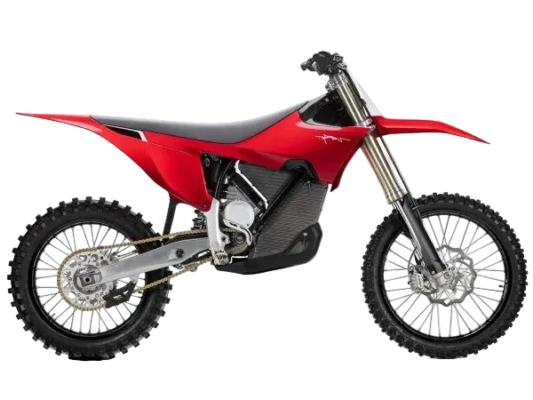
Figure 2.1: Stark VARG MX 1.2, the single-cradle benchmark (MotoEbikes, n.d.)
A double-cradle frame has two downtubes and paired lower rails around the powertrain. It offers more load paths, more mounting points for a motor and battery and more scope to tune torsional stiffness, at the cost of more members and joints that need care in fatigue and fabrication. Red Dot's current motorcycle uses a double-cradle frame (Figure 2.2), and the Dirt Goat electric dirt bike was taken as the double-cradle benchmark.Neither layout is inherently superior, because stiffness, strength and weight depend on the tube sections, material, joints and loads, so both were developed and analysed under the same loads.
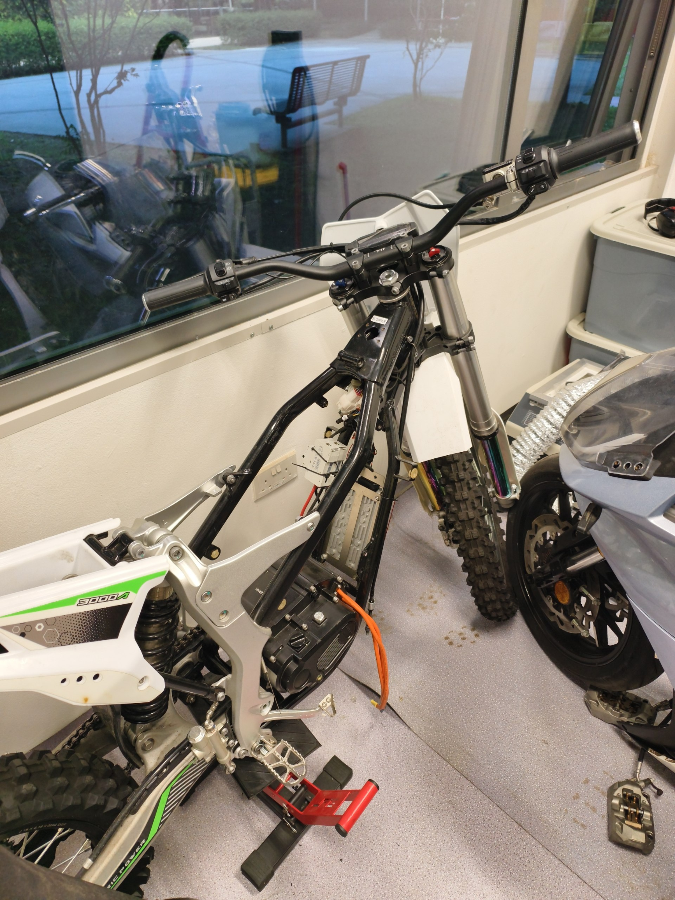
Figure 2.2: Red Dot Mobility electric trail motorcycle with its existing double-cradle frame
Two weighted scoring systems make each choice traceable. Every option is scored from 1 (poor) to 5 (excellent) against weighted criteria, and the weighted sum ranks the options. Materials and manufacturing methods are graded against the criteria in Table 2.1, which reflect a one-off prototype built on a small budget. Options scoring 3.0 or more are carried forward rather than a single winner chosen, so that the final choice rests on structural results. Frame designs are graded against the criteria in Table 2.2, which use the simulation results for structural integrity and the earlier grading for manufacturability and cost.
Table 2.1: Frame material and manufacturing method grading criteria
Criterion | Weightage | Rationale |
Suitability for low production volume | 30% | The frame is a one-off prototype with possible small-batch production, so it must be buildable without dedicated moulds, dies or specialised tooling. |
Low production cost | 30% | The project budget is $3,200 ($800 per member), so material and fabrication costs must stay low. Materials should ideally be available locally to avoid shipping costs and delays. |
Ease of manufacture and assembly | 25% | The frame should be made with processes available at NUS, and be assembled by the team in the NUS workshop using standard tools. |
Weight | 15% | A lighter frame improves acceleration and handling, so frame mass should be kept as low as practical. |
Table 2.2: Frame design grading criteria
Criterion | Weightage | Rationale |
Structural integrity | 35% | Critical importance in ensuring bike frame design is functional |
Weight | 30% | The frame needs to remain light for performance and handling of the bike |
Manufacturability and cost | 20% | Project budget of $3,200 ($800 per member); material must be locally obtainable & must suit the team's in-house tools and joining methods |
Integration | 15% | Ensure that frame can mount both battery and electric motor |
The battery heat load was estimated to size the casing (full calculation in Appendix C). The 72 V, 4.32 kWh pack was assumed to use 31 Ah nickel manganese cobalt pouch cells with an internal resistance of 0.8 mΩ in a 20S2P arrangement, giving a cell-only pack resistance of R = (Ns/Np)Rcell ≈ 8 mΩ. At the YM-160's rated 10 kW and 90 % efficiency, the discharge current is 154.3 A (2.57C), and Joule heating, Q̇ = I²R, gives about 190 W. At the 386 A peak current, the heat rate rises to about 1,190 W, but only for short bursts. Both values are lower bounds: the resistance that governs heat generation can be 2.3-2.8 times the 1 kHz value quoted for the cell, and busbars, tab welds, the battery management system and reversible heat add more. The casing is therefore to be designed for a continuous 190 W with margin for two to three times that value (Table 1.1).
Three materials and four manufacturing methods were reviewed using current electric dirt bikes as examples (Appendix D) and graded against the criteria of Table 2.1.
AISI 4130 chromoly steel is the traditional frame material. It is strong (435 MPa yield when normalised) and stiff (205 GPa), has a fatigue endurance limit and welds easily, but it is dense (7.85 g/cm³), needs corrosion protection and has no local tube supplier, so it would be imported. Aluminium 6061-T6 is used on both light and high-power electric dirt bikes, such as the Sur-Ron Light Bee and the Dirt Goat. It is light (2.70 g/cm³), corrosion resistant, easy to machine and available locally through EDIC vendors, but its modulus is a third of steel's, it has no endurance limit, and welding softens it (Section 3.2). Carbon fibre reinforced polymer (CFRP) is the lightest and strongest per unit mass, but it needs moulds and tooling that are economical only in volume, cannot easily be modified, and delaminates when drilled for rivets. Table 3.1 compares the three:
Table 3.1: Properties of the candidate frame materials (MatWeb, n.d.-a, n.d.-b; CFRP values are typical figures from Ashby, 2005)
Property | 6061-T6 Al | AISI 4130 steel (normalised) | CFRP |
Density (g/cm³) | 2.70 | 7.85 | ~1.55 |
Yield strength (MPa) | 276 | 435 | ~600 (tensile, no yield) |
Young’s modulus (GPa) | 68.9 | 205 | ~70 |
Specific strength (MPa·cm³/g) | 102 | 55 | ~390 |
Relative material cost per kg | Moderate | Low | Very high |
Casting and forging give complex one-piece frames, but their dies are uneconomical even at 1,000 units. CNC machining from billet is precise but costly, because most of the billet becomes swarf; an aftermarket billet Sur-Ron frame sells for US$2,650. TIG welding of tubes is the conventional route, but it softens 6061-T6 in the heat-affected zone (Figure 3.1). AWS D1.2 requires annealed or T4 properties to be assumed there, welded specimens fail in this zone, and the process needs a skilled welder and jigs to control distortion.
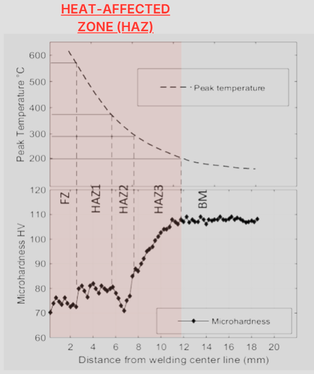
Figure 3.1: Peak temperature and microhardness across the heat-affected zone of a welded 6061-T6 plate (Arhumah & Pham, 2024, CC BY 4.0)
Adhesive bonding with rivets joins tubes and plates with structural epoxy, with rivets at each joint that hold the parts while the epoxy cures and resist peel (Figure 3.2; Beber et al., 2023). It needs no heat, so the T6 temper is kept, and only hand tools are required. The surfaces must, however, be abraded and cleaned carefully, and the joints are permanent.
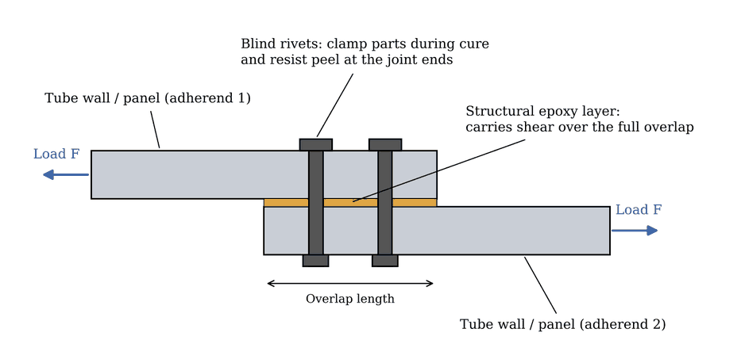
Figure 3.2: Epoxy-bonded and riveted lap joint: the adhesive carries shear over the overlap and the rivets resist peel
Tables 3.2 and 3.3 give the weighted scores. Aluminium 6061-T6 (4.85) and AISI 4130 (3.95) both pass and are carried into the finite element analysis, so that the final material is chosen on structural evidence. CFRP (1.85) is eliminated, because its tooling cost and inflexibility cannot be justified for a one-off prototype; steel scores lower than aluminium on cost because its tube must be imported. Among the joining methods, bonding with rivets (4.85), TIG welding (3.50) and CNC machining (3.25) remain viable, while casting or forging (1.95) is eliminated. Because the finite element models treat every joint as rigid parent metal, the effect of the joining method on joint strength is assessed separately in Section 6.2.
Table 3.2: Weighted scores of the candidate materials
Criterion (weightage) | 6061-T6 Al | 4130 Steel | CFRP |
Low volume suitability (30%) | 5 | 5 | 1 |
Low cost (30%) | 5 | 3 | 1 |
Ease of manufacture/assembly (25%) | 5 | 5 | 2 |
Weight (15%) | 4 | 2 | 5 |
Weighted score | 4.85 | 3.95 | 1.85 |
Table 3.3: Weighted scores of the candidate manufacturing methods
Criterion (weightage) | Bonding + rivets | TIG welding | CNC billet | Casting/forging |
Low volume suitability (30%) | 5 | 5 | 4 | 1 |
Low cost (30%) | 5 | 3 | 1 | 1 |
Ease of manufacture/assembly (25%) | 5 | 2 | 4 | 3 |
Weight (15%) | 4 | 4 | 5 | 4 |
Weighted score | 4.85 | 3.50 | 3.25 | 1.95 |
Because no drawings existed, the redesign, the packaging study and the FEA all needed an accurate digital model of the frame, in particular the positions of the steering head, swingarm pivot and shock mount fixed by the reused parts. The frame tubes curve in more than one plane, so hand measurement across the 1.42 m wheelbase would accumulate errors. The motorcycle was stripped to its bare frame, which took about a week, and the frame was scanned with a Shining 3D EinScan Pro 2X Plus structured-light scanner at the NUS Central Library (Figure 4.1), which is rated at 0.04 mm single-shot and 0.3 mm/m volumetric accuracy.
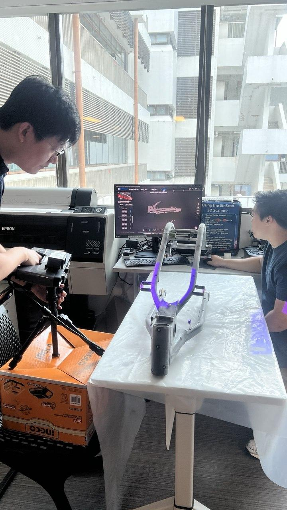 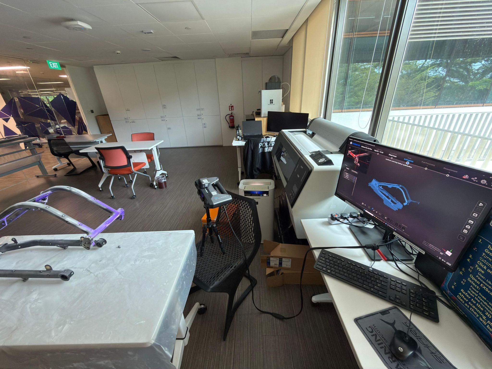
Figure 4.1: Scanning set-up at the NUS Central Library: (a) scanner on a tripod beside the bare frame; (b) repositioning the tripod between scans
The scan met several problems (Appendix E). The first attempt failed because black and shiny surfaces do not scan; dry shampoo was found to be a cheap, non-toxic substitute for scanning spray, and about 20 reference markers were added. Handheld scanning was too unstable and the frame was too large for the turntable, so the tripod-mounted scanner was moved by hand and the partial scans were aligned manually on matching features. Three two-hour sessions were needed.
The meshes were imported into Autodesk Inventor and Fusion 360, and the frame was re-modelled as solid geometry (Figure 4.2). The model was checked in two ways. Against the TYE3000 supplier drawing, scaled to full size from its 154 mm head tube, the key mounting holes agreed within 1-2 mm and the overall dimensions within about 5 mm, most of which comes from manual scan alignment and drawing resolution. Because a scan cannot see wall thickness, the wall thickness was adjusted until the model's mass matched the weighed 8.61 kg main frame; at 3-4 mm the model weighs 8.39 kg, 2.5 % low, the difference being welds, paint and small brackets. These errors only shift the load application points slightly and have a negligible effect on the FEA.
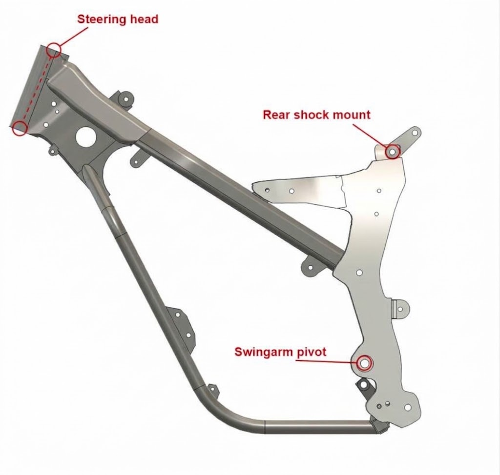
Figure 4.2: Re-modelled existing frame with the mounting points fixed by the reused parts
The model, the scaled drawing and measurements of the physical motorcycle were reduced to a short list of verified dimensions (Table 4.1). The steering and suspension hard points, namely the 21° rake, the 154 mm head tube and the swingarm pivot and rear shock mount positions, fix where the reused fork, swingarm, shock and wheels sit. Every candidate frame is constrained to them, so the donor motorcycle's ride and handling are kept. The reused components and the battery and motor envelopes are listed in Table 4.2.
Table 4.1: Baseline Red Dot frame geometry
Parameter | Value |
Rake angle | 21° |
Wheelbase (axle to axle) | 1420 mm |
Head tube length | 154 mm |
Frame height | 638 mm |
Frame length | 1201 mm |
Frame width (rear, top view) | 235 mm |
Swingarm length | 539 mm |
Front tyre | 80/100-21 (Ø693.4 mm) |
Rear tyre | 110/90-18 (Ø655.2 mm) |
Table 4.2: Carried-over components and critical interface dimensions
Component | Key dimensions |
Rear shock | 365 mm eye-to-eye; Ø12 mm mounting eyes; 24 mm eye width |
Swingarm | Ø15 mm pivot bore; Ø12 mm shock mount; 235 mm overall width at the axle |
Front fork | 250 mm travel; spring rate 4.5 N/mm per leg |
Battery | 310 × 160 × 240 mm (L × W × H) |
Motor | 251.6 × 280 × 180 mm (L × W × H); Ø10.5 mm mounting holes |
Option A adapts the Stark VARG frame. Stark's slim chassis depends on a patented battery and motor package designed together with the frame. A sketch study, confirmed in CAD, showed that the bulkier Red Dot battery and motor fit inside the unmodified Stark frame only if they are mounted too low for ground clearance and mass distribution, while at the intended height the single spine and steering neck intersect the battery. The Stark frame was therefore redesigned around the Red Dot hard points (Appendix F):
•The rake was reduced from 27.3° to 21° to suit the reused fork.
•The spine stays single at the head tube and then splits into twin spars that clear the battery.
•The lower spars were narrowed to restore steering lock after the rake change.
•The lower cradle runs beneath the battery and motor rather than around them, keeping the frame narrow.
•The subframe and the motor and battery mounts were rebuilt around the reused shock and the inserted components.
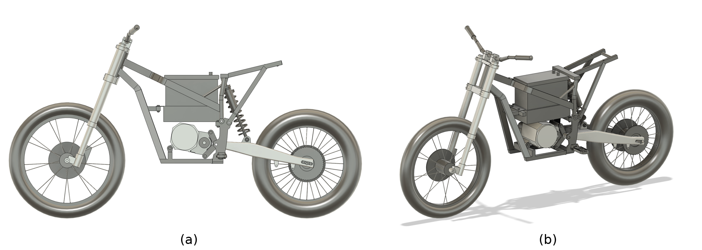
Figure 4.3: Assembled Option A chassis with the carried-over suspension, battery and motor: (a) side view; (b) isometric view
Option B takes the Dirt Goat as its benchmark because its frame is simple: largely straight members forming one continuous structure that encloses and protects the battery, which lifts out vertically. The concept was simplified further for manufacture by replacing curved sections with straight members and combining the main frame and subframe into one structure, with twin top tubes and twin down tubes forming closed side loops. The battery sits on a dedicated tray, the reused Red Dot C-bracket carries the rear motor mounts, and a bolt-on hanging cradle supports the front of the motor. The layout was checked against the hard points, and the battery and motor were installed in CAD to confirm packaging. The battery lifts out vertically and the motor drops out once the hanging cradle is unbolted, so neither requires the frame to be dismantled (Figure 4.4).
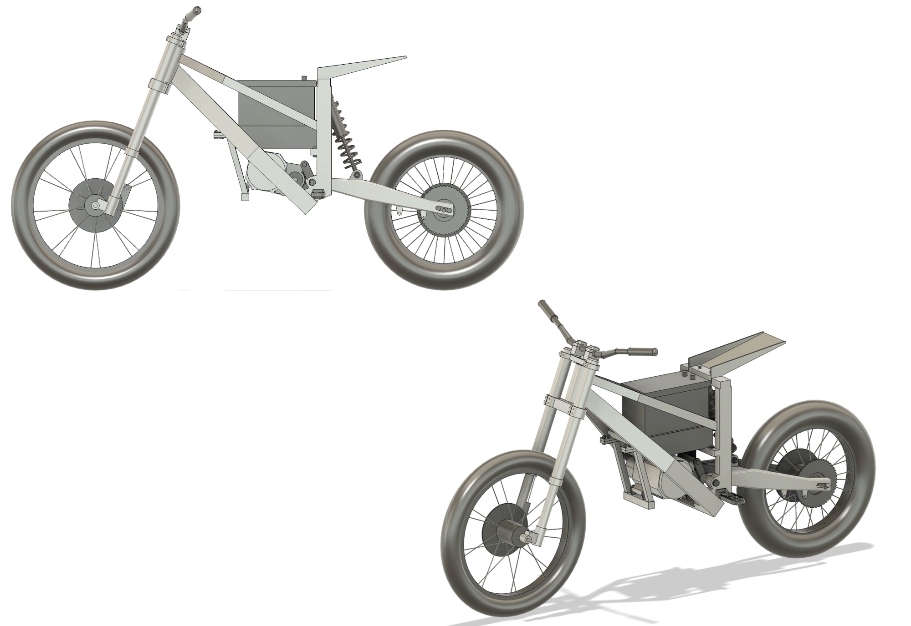
Figure 4.4: Fully assembled Option B motorcycle
Table 4.3 compares the two options. Both keep the hard points and package the battery and motor without clashes, so they cannot be separated on fitment. Their main structural difference is how landing loads reach the swingarm pivot: through one spine at the head tube in Option A, and through twin top tubes and closed side loops in Option B. Both were therefore analysed in both carried-forward materials under identical loads.
Table 4.3: Qualitative comparison of the design options
Criterion | Option A: Modified single-cradle | Option B: Continuous double-cradle |
Benchmark | Stark Varg EX | Dirt Goat 104 |
Battery clearance | Spine splits into twin spars behind the neck | Battery bay enclosed by perimeter frame |
Lower structure | Cradle routed beneath the powertrain | Continuous double cradle with bolt-on hanging motor cradle |
Motor mounting | Integrated mounts built around the motor | Red Dot C-bracket (rear) and hanging cradle (front) |
Battery removal | Vertical, with clearance designed in | Vertical lift, unobstructed |
Construction | Main frame and separate subframe | Main frame and subframe as one body, straight members |
Each frame was analysed by linear static finite element analysis in Autodesk Fusion 360 using equivalent static loads. A transient explicit analysis would capture stress waves and contact, but it needs very small-time steps and long run times. The pseudo-static method instead converts the peak forces of each landing into equivalent forces, so many geometry and material combinations can be compared quickly at the level of the primary load paths. Its limitation is that dynamic amplification is not captured, so the results are representative rather than bounding (Section 6.1). Results are reported as peak von Mises stress, and FoS = σy/σmax, with σy = 275 MPa for 6061-T6 and 435 MPa for normalised AISI 4130.
The matrix combines four load cases, two landing scenarios, two frame designs and two materials. The load cases are at rest (the 1 g reference); a flat landing with both wheels touching down together; front wheel first at 25° nose-down pitch, as in a mistimed jump or ledge drop; and rear wheel first at 25° nose-up pitch. Scenario A is a 1 m vertical drop onto flat ground (impact speed 4.43 m/s). Scenario B is a 1 m drop at 30 km/h onto a 15° downslope; because the velocity is partly aligned with the slope, the slope-normal impact speed falls to 2.12 m/s and the normal impact energy by about 77 %, while tyre drag (μ = 0.10) is added. Study 1.1 serves as the 1 g reference for both scenarios, giving seven studies per frame and material and 28 in total. The main assumptions are a rigid sprung mass with bounce and pitch freedom, full use of the 250 mm wheel travel, suspension and tyre efficiencies of 0.70 and 0.47, and exclusion of the unsprung masses (Appendix G).
The motorcycle and an 80 kg rider were modelled as four lumped masses (rider, battery, motor and frame) totalling 139.06 kg, with the centre of gravity at (551.3, 943.6) mm and a pitch inertia of 20.824 kg·m² (Appendix B). Each peak ground reaction comes from an energy balance in which the impact energy equals the work absorbed by the suspension and tyre, N = [½mVn² + mgn(S + d)]/(ηsS + ηtd). In a single-wheel impact, part of the energy pitches the vehicle, so the striking wheel stops only an effective mass meff = 1/(1/M + d²/I). D'Alembert's principle then converts the accelerations into equivalent forces at the seat or handlebars, footpegs, battery tray and motor mounts, plus a whole-model acceleration, the Linear Global Load (LGL), for the frame's own inertia. Table 5.1 summarises the load factors, which range from 0.64 g to 6.89 g.
Table 5.1: Summary of the impact calculations
Study | Striking wheel(s) | Effective mass (kg) | Peak ground reaction (N) | Load factor n | aCG (m/s²) | α (rad/s²) | Rider posture |
1.1 | Both (static) | - | 1364.2 (1,128.8 through the frame) | 1.00 | 0 | 0 | Seated 70 % / feet on ground 30 % |
1.2 | Both | 53.84, 85.22 | 3746, 5656 | 6.89 | (0, +57.80) | +7.24 | Bars 50 % / pegs 50 % |
1.3 | Front | 47.34 | 3139 | 2.30 | (0, +12.76) | +81.18 | Bars 100 % |
1.4 | Rear | 100.59 | 7718 | 5.66 | (0, +45.69) | -88.70 | Pegs 100 % |
2.2 | Both | 53.84, 85.22 | 1438, 2219 | 2.68 | (-0.09, +16.83) | -15.07 | Bars 50 % / pegs 50 % |
2.3 | Front | 33.39 | 867 | 0.64 | (+1.92, -3.24) | +23.88 | Bars 100 % |
2.4 | Rear | 72.07 | 1,955 | 1.43 | (+1.13, +4.58) | -45.04 | Pegs 100 % |
The applied loads, stress plots and descriptions of all 28 studies are given in Appendix G. Table 5.2 summarises the peak stresses, Table 5.3 the critical regions, and Figures 5.1 and 5.2 the governing hotspots and the full set of peaks against the yield strengths.
In aluminium, the double-cradle frame remains below yield in every study. Its governing case is the 1 m flat landing (237.1 MPa, FoS 1.16), at the junction of the top tube and the rear post beneath the seat, where the upper frame acts as a beam between the head tube and the swingarm pivot. The front-first and rear-first landings load different details, the head-tube base (FoS 2.64) and the footpeg brackets (FoS 2.38), and the slope landings reduce the peak stresses by 47-94 %.
The single-cradle frame is 4.83 kg (28 %) lighter but develops higher stresses in 13 of the 14 studies. In aluminium it yields in the flat landing (357.8 MPa at the backbone section change, FoS 0.77) and in the rear-first landing (321.4 MPa at the footpeg brackets, FoS 0.86).
The steel frames use the same geometry and loads, so they are 2.9 times heavier (about 50.5 kg and 36.4 kg). Their stresses are 3-100 % higher than in aluminium, because the frame's own inertial load scales with density while the applied component loads do not, but the 58 % higher yield strength compensates in most cases: the double-cradle steel frame reaches FoS 1.24 in the flat landing. No variant reaches the FoS 1.5 target in the flat landing. Six results failed the linearity check of Section 6.1 and are excluded from the design decision.
Table 5.2: Peak von Mises stress (MPa), double-cradle versus single-cradle frame under identical applied loads
Study | Load case | Al, double | Al, single | Steel, double | Steel, single |
1.1 | At rest | 49.7 | 118.9 | 61.8 | 133.3 |
1.2 | Flat landing | 237.1 | 357.8 | 350.2 | 401.9 |
1.3 | Front first | 104.2 | 134.4 | 205.4 | 174.0 |
1.4 | Rear first | 115.7 | 321.4 | 135.7 | 321.4 |
2.2 | Slope, flat | 124.5 | 365.2 | 162.0 | 408.3 |
2.3 | Slope, front first | 6.2 | 39.6 | 12.4 | 49.6 |
2.4 | Slope, rear first | 37.4 | 197.3 | 38.5 | 198.0 |
Frame mass (kg) | 17.4 | 12.5 | ≈ 50.5 | ≈ 36.4 | |
Table 5.3: Critical regions of each frame (valid studies only)
Frame | Region | Governing study | σmax Al / steel (MPa) | FoS Al / steel |
Double | Top tube to rear post junction (521, -126, 692) | 1.2 | 237.1 / 350.2 | 1.16 / 1.24 |
Double | Head-tube base | 1.3 | 104.2 / 205.4 | 2.64 / 2.12 |
Double | Footpeg bracket (521.6, -111.5, 366.6) | 1.4 | 115.7 / 135.7 | 2.38 / 3.21 |
Single | Backbone section change (943, -0.9, 844.5) | 1.2 | 357.8 / 401.9 | 0.77 / 1.08 |
Single | Footpeg bracket (503.3, -113.5, 354.5) | 1.4 | 321.4 / 321.4 | 0.86 / 1.35 |
Single | Lower rear rail corner (560.3, -105.5, 340.0) | 1.3 | 134.4 / 174.0 | 2.05 / 2.50 |
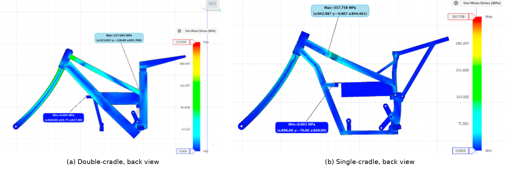
Figure 5.1: Governing hotspots in the flat landing: (a) double-cradle top tube to rear post junction; (b) single-cradle backbone section change
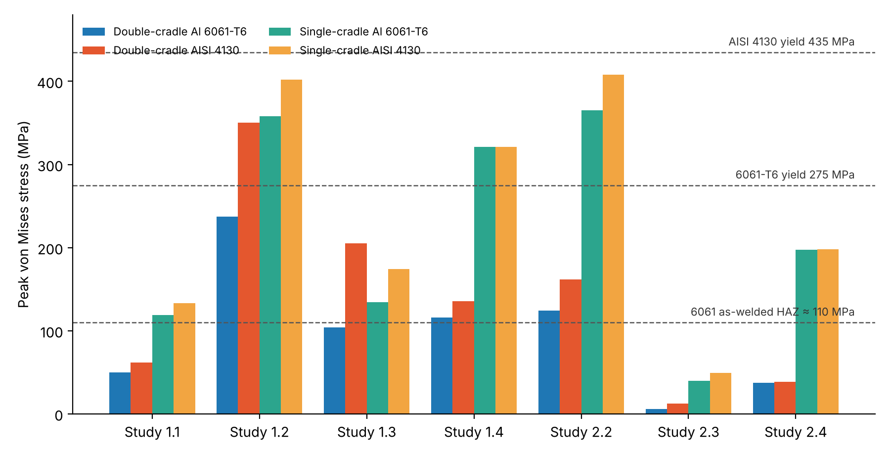
Figure 5.2: Peak von Mises stress in every study for the four frame variants, with the yield strengths of 6061-T6 and AISI 4130 and the as-welded HAZ strength of 6061
Four checks were made, with details in Appendix H.
Equilibrium
For the aluminium double-cradle frame, the resultant of the applied loads, including the LGL acting on its 17.36 kg mass, balances the derived ground reaction to within 0.15 % in every study. The other three frames used the same component loads while the LGL acts on each frame's own mass, so their load sets are not exactly balanced. In the flat landing, the residual is about 0.33 kN for the single-cradle aluminium frame and 2.3 kN for the double-cradle steel frame, and it is carried by the constraints. These load sets will be rebalanced when the studies are re-run in Semester 2 (Table 7.1)
Plausibility
The rear suspension velocity ratio (0.34) and the implied tyre stiffness (98-195 kN/m) lie within, or at the edge of, the ranges. The rider's radius of gyration (0.20 m) lies slightly below the reported 0.23-0.28 m; using that range would raise the single-wheel reactions by 3-11 % but would not affect the governing flat landing.
Linearity
Each slope study should give roughly its load-factor ratio times the stress of its flat-ground counterpart. Six of the twelve pairings behave as expected (Table 6.1). The other six, double-cradle Study 2.3 and single-cradle Studies 2.2 and 2.4 in both materials, do not. Their load tables agree with Appendix B, so the discrepancy lies in how the loads were set up in the solver: most likely a missing fork reaction in double-cradle Study 2.3 and the flat-landing loads remaining active in single-cradle Study 2.2. The single-cradle Study 2.4 result may be genuine, because its footpeg load has a large forward component to which a cantilevered bracket is sensitive. All six are excluded from the decision and are scheduled for re-running.
Table 6.1: Linearity check: ratio of slope-study to flat-study peak stress versus ratio of load factors
Pair | Load-factor ratio n2/n1 | Stress ratio, Al double | Stress ratio, steel double | Stress ratio, Al single | Stress ratio, steel single |
2.2 / 1.2 (flat) | 2.68/6.89 = 0.39 | 0.53 ✓ | 0.46 ✓ | 1.02 ✗ | 1.02 ✗ |
2.3 / 1.3 (front first) | 0.64/2.30 = 0.28 | 0.06 ✗ | 0.06 ✗ | 0.29 ✓ | 0.29 ✓ |
2.4 / 1.4 (rear first) | 1.43/5.66 = 0.25 | 0.32 ✓ | 0.28 ✓ | 0.61 ✗ | 0.62 ✗ |
Limitations. The peaks at unfilleted junctions include a geometric stress concentration, and the peak at the single-cradle lower rear rail corner is a mesh-dependent singularity. The pseudo-static loads do not capture dynamic amplification, and two energy-method assumptions, full use of the suspension travel and exclusion of the unsprung mass, are non-conservative. Fatigue, buckling, stiffness and vibration have not yet been evaluated.
The FEA gives every joint parent-metal strength, yet every governing peak in the aluminium double-cradle frame lies at a joint. TIG welding over-ages 6061-T6 near the weld, and the Aluminum Design Manual gives a minimum as-welded yield strength of about 110 MPa, roughly 60 % below the 275 MPa parent value. At that strength, the double-cradle aluminium frame would yield at its welds in the flat and rear-first landings (Table 6.2), with a flat-landing FoS of only 0.46, equivalent to a safe flat drop of about 0.32 m. Full strength returns only if the whole welded frame is solution-treated and aged again, which needs a large furnace and risks distortion. Welded 4130, by contrast, keeps most of its strength, giving FoS 1.14 against its ER70S-2 filler.
Table 6.2: Double-cradle Al 6061-T6 factor of safety at the welded hotspots, parent metal versus as-welded HAZ
Study | Location | σmax (MPa) | FoS, parent (275 MPa) | FoS, as-welded HAZ (110 MPa) |
1.1 At rest | Junction region | 49.7 | 5.53 | 2.21 |
1.2 Flat landing | Top tube to rear post | 237.1 | 1.16 | 0.46 |
1.3 Front first | Head-tube base | 104.2 | 2.64 | 1.06 |
1.4 Rear first | Footpeg bracket | 115.7 | 2.38 | 0.95 |
Bonding and riveting avoid the heat-affected zone altogether (Table 6.3). In the proposed joints, the tubes meet inside aluminium collars or gusset plates that are bonded with a two-part structural epoxy (3M Scotch-Weld DP460) and fastened with structural blind rivets. Three results define the joint design (Appendix H):
•Section: a collar of the same wall thickness raises the section modulus over the overlap by about 2.3 times for a typical diameter-to-thickness ratio of 15, more than the 1.29 times needed for FoS 1.5, and moves the peak stress to the collar end, where the bending moment is lower.
•Bond: reducing the datasheet overlap shear strength of 31.0 MPa for hot-wet ageing (0.69), stress peaking at the overlap ends and abraded rather than etched surfaces (0.7) give a design shear stress of 7.5 MPa. Carrying 1.5 times the governing stress then needs an overlap of about 47 wall thicknesses, or 24 if the tube is bonded on both faces.
•Rivets: as a fail-safe, the rivets alone must carry the governing stress if the bond is lost; with bearing on the thin aluminium wall governing, this needs about nine 4.8 mm steel rivets at a 30 mm tube junction.
Table 6.3: Joining routes for the double-cradle Al 6061-T6 frame at the top tube to rear post junction (Study 1.2, σ max = 237.1 MPa)
Joining route | Yield strength at the joint (MPa) | FoS at 1 m drop | Flat drop at onset of yield (m) | Section-modulus factor for FoS 1.5 | Main process risk |
TIG-welded, as-welded | 110 (HAZ) | 0.46 | 0.32 | 3.23 | HAZ softening; weld distortion |
TIG-welded, full T6 re-heat-treatment | 275 | 1.16 | 1.20 | 1.29 | Quench distortion of the whole frame; furnace size and cost |
TIG-welded, welds relocated with gussets | 110 at the weld toe; 275 at the peak | Set by the weld-toe stress | - | ≥ 1.29 | Weld-toe stress not yet known; weld distortion |
Bonded with epoxy and riveted | 275 (no HAZ) | 1.16 | 1.20 | 1.29, supplied by the bonded collar | Bond quality depends on surface preparation |
The collars add about 1.6 kg, giving a bonded frame of about 19.0 kg. The method suits the project constraints: it needs only hand tools and a jig, involves no heat treatment, holds the hard-point geometry without weld distortion, and its strength can be measured by the team with ASTM D1002 lap-shear coupons. Its risks are its dependence on surface preparation, weakness in peel, long cure times and the impossibility of inspecting a finished bond. These are controlled by rivets at the overlap ends, a written bonding procedure and witness coupons from each adhesive batch.
The motor and battery mounts are not critical in either frame. The largest front motor mount load, 625 N, gives a FoS of about 45 for an M10 property-class 8.8 bolt in single shear, and the battery mounts give about 44. The weak integration point of the single-cradle frame is its footpeg brackets (FoS 0.86 in aluminium), which would need gussets. On weight, both aluminium designs are lighter than the existing 20.43 kg frame: 12.53 kg for the single cradle, 17.36 kg for the double cradle and about 19.0 kg once the bonded collars are added, subject to confirming the parts included in each weighing (Table 1.1). With the aluminium geometry, the steel frames would add 19-33 kg, which defeats the weight objective; a purpose-designed thin-walled steel frame would be lighter than these figures but still heavier than aluminium of equal stiffness. Because the battery and motor weigh 2.4 times the double-cradle frame, the choice of frame moves the centre of gravity very little.
The four variants and the bonded double-cradle aluminium frame were ranked with the criteria of Table 2.2 (Table 6.4). Each score is anchored to a result: structural integrity to the flat-landing FoS including the joint, weight to frame mass, manufacturability to who can build the frame and whether welding or heat treatment is needed, and integration to the mount results. The ranking was repeated with structural integrity raised to 40 % and weight lowered to 25 %.
Table 6.4: Weighted decision matrix for the frame variants
Criterion (weight) | Double, Al (welded) | Double, Al (bonded + riveted) | Double, 4130 | Single, Al | Single, 4130 |
Structural integrity (35 %) | 2 (FoS 1.16 parent; 0.46 as welded) | 4 (FoS 1.16) | 3 (FoS 1.24; 1.14 at welds) | 1 (yields in 1.2 and 1.4) | 2 (FoS 1.08; ≈ 1.0 at welds) |
Weight (30 %) | 4 (17.4 kg) | 4 (19.0 kg) | 1 (50.5 kg) | 5 (12.5 kg) | 2 (36.4 kg) |
Manufacturability and cost (20 %) | 2 (outsourced Al TIG welding and full-frame heat treatment) | 5 (no welding or PWHT; built and tested by the team) | 3 (outsourced 4130 TIG welding; imported tube) | 2 (outsourced Al TIG welding and heat treatment, with reinforcements) | 3 (outsourced 4130 TIG welding; imported tube) |
Integration (15 %) | 4 (mounts uncritical) | 4 (mounts uncritical; bolted brackets) | 4 (mounts uncritical) | 3 (footpeg brackets critical) | 3 (footpeg brackets critical) |
Weighted score | 2.90 | 4.20 | 2.55 | 2.70 | 2.35 |
The double-cradle layout is preferred in both materials and under both weightings, because it carries the governing bending through two members and closed loops and keeps the footpeg and motor mounts away from the critical stresses. Reinforcing the single cradle to FoS 1.5 would need 1.95 times increase in section modulus at its backbone, which would return much of its 4.8 kg saving. Among the welded frames, the aluminium double cradle (2.90) leads the steel double cradle (2.55), but both are limited by their joints. The bonded and riveted aluminium double cradle scores highest under both weightings (4.20) and is recommended:
•Design: a double-cradle Al 6061-T6 frame joined with DP460 or equivalent structural epoxy and steel structural blind rivets through bonded collars or gusset plates at every tube junction. The collar at the top tube to rear post junction gives at least 1.3 times the bare-tube section modulus, and the demountable interfaces (motor, battery tray, footpegs and the fork and swingarm hard points) are bolted.
•Conditions: lap-shear coupons made with the team's own surface preparation must average at least 22 MPa, the value that leaves 7.5 MPa after the environment and stress-peaking factors; and the flat landing, re-run with the collars modelled, must show FoS ≥ 1.5 at the collar end.
Semester 1 has delivered a reverse-engineered model of the existing frame, two packaged frame concepts, 28 finite element studies and a conditional recommendation. Four analysis tasks remain before the design can be frozen: re-running the six flagged studies with rebalanced load sets; running the existing Red Dot frame under the same seven load cases as a baseline, because that frame is known to survive service; a mesh convergence check at the three governing hotspots; and a hand calculation of top-tube bending in the flat landing to cross-check the solver. Together with the collar analysis, the coupon tests, the build and the battery casing, these form the Semester 2 plan.
Table 7.1 sets the milestones against the NUS academic calendar (National University of Singapore, 2026). Semester 2 runs from 11 January to 16 April 2027 (Week 13), with recess week from 20 to 28 February, and the final assessment is assumed to follow the Semester 1 pattern. Each owner continues their Semester 1 area: Nazhan the analysis, Syaqir the frame design and jig, Jinghong the joining and testing, and Hamizan procurement and the battery casing. Every milestone has an exit criterion that must be met before dependent work starts. Two gates control the main risks: G1 (coupons ≥ 22 MPa, Week 5) decides whether the bonded route proceeds, and G2 (frame reassembled on its hard points, Week 11) decides whether the brake conversion is attempted.
Table 7.1: Semester 2 milestones (AY2026/27)
ID | Milestone and exit criterion | Owner | Due |
M0 | Analysis corrections: six flagged studies re-run with rebalanced loads; existing frame run under the seven load cases; mesh convergence at three hotspots; top-tube hand calculation within 10 % of FEA | Nazhan | Fri 8 Jan 2027 (vacation) |
M1 | Design freeze: final tube sizes and collar drawings; flat landing re-run with collars shows FoS ≥ 1.5 | Syaqir (CAD), Nazhan (FEA) | Fri 22 Jan (Week 2) |
M2 | Procurement: quotes obtained and orders placed; committed spend within Table 7.2 | Hamizan | Fri 29 Jan (Week 3) |
C1 | Battery casing concept selected and thermally sized for 190 W (with 2-3 times margin) | Hamizan | Fri 5 Feb (Week 4) |
M3 / G1 | At least five ASTM D1002 lap-shear coupons with the team's surface preparation; mean ≥ 22 MPa | Jinghong | Fri 12 Feb (Week 5) |
M4 | Sample collar joint tested to at least 1.5 times its design load without failure | Jinghong | Fri 19 Feb (Week 6) |
M5 | Assembly jig built; hard points within ± 2 mm of the scanned model | Syaqir | Fri 26 Feb (recess) |
M6 | Frame bonded, riveted and cured (five-day cure included) | Syaqir, Jinghong | Fri 19 Mar (Week 9) |
C2 | Prototype casing tested with an instrumented heater-pad dummy pack at the rated heat load | Hamizan | Fri 26 Mar (Week 10) |
M7 / G2 | Motorcycle reassembled: fork, swingarm, shock, battery and motor fitted; frame weighed against 20.43 kg | All (lead Syaqir) | Fri 2 Apr (Week 11) |
B1 | Stretch: brake lever-force check and adapter fitted; static braking and return-spring test passed | Nazhan | Fri 9 Apr (Week 12) |
F | Final report, website and presentation | All | Fri 16 Apr (Week 13) |
The secondary objective resumes in Semester 2. The casing must fit the 310 × 160 × 240 mm envelope and the battery tray of the new frame, protect the pack against impact, vibration and debris, and remove a continuous heat load of at least 190 W with margin for two to three times that value (Section 2.3). Concepts will be compared for conduction into the aluminium frame, finned or vented walls and forced air (Chidambaram et al., 2025). The prototype casing will first be tested with a heater-pad dummy pack instrumented with thermocouples at the rated heat load, so that no live cells are put at risk, before any test with the real battery.
The donor motorcycle has an unused clutch lever on the left handlebar, because the electric drivetrain has no clutch, and a foot-operated rear brake. Moving the rear brake to the left lever, through a cable and a lever adapter acting on the existing master cylinder (Appendix I), gives the bicycle-style layout that riders without motorcycle experience already know, and safety and ease of use are among the main concerns of potential electric two-wheeler users (Will et al., 2021). The change costs about SGD 80 and leaves the hydraulic system unchanged. Because it lies outside Red Dot's core requirements and the brake is safety-critical, it is kept as a stretch task: it starts only after gate G2, and it is accepted only if full rear braking needs no more than a comfortable hand force and the original return spring returns the system reliably.
Table 7.2 gives the planned budget. The amounts are planning estimates that will be replaced by supplier quotes at M2; the brake conversion is the first item to be cut if costs rise. Table 7.3 lists the main risks and how each will be handled.
Table 7.2: Planned Semester 2 budget (estimates, SGD)
Item | Estimate |
6061-T6 tubing and plate for the frame | 900 |
Collars and gusset plates (laser-cut or machined by EDIC vendors) | 500 |
Structural epoxy (DP460 cartridges, mixing nozzles, applicator gun) | 450 |
Structural blind rivets, bolts and rivet tool | 250 |
Lap-shear coupons and sample joint material (NUS testing machine) | 100 |
Assembly jig (extrusion, clamps, fixings) | 300 |
Battery casing prototype, heater pads, thermocouples and logger | 400 |
Rear brake conversion (lever, cable, adapter) | 80 |
Contingency (about 7 %) | 220 |
Total | 3,200 |
Table 7.3: Main risks and responses
Risk | Likelihood / impact | Response |
Coupons average below 22 MPa | Medium / high | Improve the surface treatment or bond both tube faces (overlap 24t); otherwise reduce the design drop to 0.7 m with Red Dot's agreement. Decided at G1 (Week 5). |
Collar re-run shows FoS below 1.5 | Medium / high | Lengthen or thicken the collar or add a gusset at the governing junction before M1. |
Re-run of the flagged studies changes the ranking | Low / medium | Re-score Table 6.4 at M0, before design freeze. |
Supplier lead times or imported parts | Medium / medium | Order by Week 3 from local EDIC vendors (Alutech, Prestech); avoid imported items. |
Hard points out of tolerance after bonding | Medium / high | Jig located from scanned coordinates; bolted hard points can be shimmed; check before cure. |
Budget overrun | Low / medium | 7 % contingency; cut the brake conversion first. |
Battery thermal test hazard | Low / high | Heater-pad dummy pack before any live-cell test; no abuse testing of cells. |
Adhesive cure time compresses the schedule | Medium / medium | Bond sub-assemblies in parallel; five-day cure built into M6. |
1.3M. (2018). Surface preparation and pretreatment for structural adhesives [Technical bulletin]. 3M Company. https://multimedia.3m.com/mws/media/933332O
2.3M. (n.d.). 3M Scotch-Weld epoxy adhesive DP460 Off-White and DP460NS: Technical data sheet. 3M Industrial Adhesives and Tapes Division. https://conro.com/downloads/Manuals/3M-Scotch-Weld-DP460-TDS.pdf
3.Akshayanil919. (2018). Yamaha R15 V3.0 [Photograph]. Wikimedia Commons. https://commons.wikimedia.org/wiki/File:Yamaha_R15_V3.0.jpg
4.Alutech. (n.d.). Our products [Product page]. Retrieved October 30, 2026, from https://www.alutech.co.id/our-products/
5.American Welding Society. (n.d.). AWS D1.2/D1.2M: Structural welding code - Aluminum. American Welding Society.
6.Arhumah, Z., & Pham, X.-T. (2024). Microstructure and thermal mechanical behavior of arc-welded aluminum alloy 6061-T6. Journal of Manufacturing and Materials Processing, 8(3), 110. https://doi.org/10.3390/jmmp8030110
7.Arunachalam, M., Singh, A. K., & Karmakar, S. (2022). Exploring the association of riders' physical attributes with comfortable riding posture and optimal riding position. Proceedings of the Institution of Mechanical Engineers, Part D: Journal of Automobile Engineering, 236(1), 185-207. https://doi.org/10.1177/09544070211012553
8.Ashby, M. F. (2005). Materials selection in mechanical design (3rd ed.). Butterworth-Heinemann.
9.ASTM International. (2019). Standard test method for apparent shear strength of single-lap-joint adhesively bonded metal specimens by tension loading (metal-to-metal) (ASTM D1002-10(2019)). ASTM International.
10.Balijepalli, C., Shepherd, S., Crastes dit Sourd, R., Farda, M., Praesha, T., & Lubis, H. A.-R. (2023). Preferences for electric motorcycle adoption in Bandung, Indonesia. Urban, Planning and Transport Research, 11(1), 2238033. https://doi.org/10.1080/21650020.2023.2238033
11.Beber, V. C., Wolter, N., Schneider, B., & Koschek, K. (2023). Effect of aluminium substrate thickness on the lap-shear strength of adhesively bonded and hybrid riveted-bonded joints. Proceedings of the Institution of Mechanical Engineers, Part E: Journal of Process Mechanical Engineering, 237, 607-614. https://doi.org/10.1177/0954408920913434
12.Bernardi, D., Pawlikowski, E., & Newman, J. (1985). A general energy balance for battery systems. Journal of The Electrochemical Society, 132(1), 5-12. https://doi.org/10.1149/1.2113792
13.Bhat, F. A., & Verma, A. (2024). Electric two-wheeler adoption in India - A discrete choice analysis of motivators and barriers affecting the potential electric two-wheeler buyers. Transport Policy, 152, 118-131. https://doi.org/10.1016/j.tranpol.2024.05.004
14.Blackman, R. A., & Haworth, N. L. (2013). Comparison of moped, scooter and motorcycle crash risk and crash severity. Accident Analysis & Prevention, 57, 1-9. https://doi.org/10.1016/j.aap.2013.03.026
15.Calì, M., & Oliveri, S. M. (2017). Application of an effective SIMP method with filtering for topology optimization of motorcycle tubular frame. International Review of Mechanical Engineering, 11(11), 836-844. https://doi.org/10.15866/ireme.v11i11.13770
16.Capone, A., & Romano, G. P. (2021). Effect of windshield configuration and pilot position on motorcycle performances. Journal of Wind Engineering and Industrial Aerodynamics, 218, 104753. https://doi.org/10.1016/j.jweia.2021.104753
17.Charged Cycle Works. (n.d.). KyVex billet frame compatible w/ Surron Light Bee X. Retrieved October 29, 2026, from https://chargedcycleworks.com/products/kyvex-billet-frame-compatible-w-surron-light-bee-x
18.Chidambaram, R. K., Pedapati, P. R., Kanna, P. R., Taler, D., Sobota, T., & Taler, J. (2025). Structural assessment of electric two-wheeler battery enclosure: Thermal and structural study. Journal of Thermal Analysis and Calorimetry, 150, 6939-6958. https://doi.org/10.1007/s10973-024-13458-0
19.CommanderWaterford. (2020). Yamaha X-Max 125, 2017 [Photograph]. Wikimedia Commons. https://commons.wikimedia.org/wiki/File:Yamaha_X-Max_125,_2017.jpg
20.Cossalter, V. (2006). Motorcycle dynamics (2nd ed.). Lulu.com.
21.Cossalter, V., Peretto, M., & Bobbo, S. (2010). Investigation of the influences of tyre-road friction and engine power on motorcycle racing performance by means of the optimal manoeuvre method. Proceedings of the Institution of Mechanical Engineers, Part D: Journal of Automobile Engineering, 224(4), 503-519. https://doi.org/10.1243/09544070JAUTO1312
22.Doria, A., & Taraborrelli, L. (2016). The twist axis of frames with particular application to motorcycles. Proceedings of the Institution of Mechanical Engineers, Part C: Journal of Mechanical Engineering Science, 230(17), 3026-3039. https://doi.org/10.1177/0954406215604862
23.Federal Aviation Administration. (n.d.). Factor of safety (14 C.F.R. § 25.303). Electronic Code of Federal Regulations. https://www.ecfr.gov/current/title-14/section-25.303
24.Foale, T. (2002). Motorcycle handling and chassis design: The art and science (1st ed.). Tony Foale Designs.
25.Frizziero, L., Liverani, A., & Nannini, L. (2019). Design for Six Sigma (DFSS) applied to a new eco-motorbike. Machines, 7(3), Article 52. https://doi.org/10.3390/machines7030052
26.Gardner Business Media. (n.d.). The Lotus Elise: A technological tour de force. https://www.gardnerweb.com/articles/the-lotus-elise-a-technological-tour-de-force
27.Goat Power Bikes. (n.d.). The Dirt Goat 104V. Retrieved October 29, 2026, from https://www.goatpowerbikes.com/products/the-dirt-goat
28.Graba, M., & Grycz, A. (2024). Application of finite element method in industrial design, example of an electric motorcycle design project. Open Engineering, 14(1), Article 20220569. https://doi.org/10.1515/eng-2022-0569
29.Guerra, E. (2019). Electric vehicles, air pollution, and the motorcycle city: A stated preference survey of consumers' willingness to adopt electric motorcycles in Solo, Indonesia. Transportation Research Part D: Transport and Environment, 68, 52-64. https://doi.org/10.1016/j.trd.2017.07.027
30.Hwang, H.-Y., Chen, Y.-S., & Chen, J.-S. (2015). Optimizing the heat dissipation of an electric vehicle battery pack. Advances in Mechanical Engineering, 7(1), Article 204131. https://doi.org/10.1155/2014/204131
31.KTM. (n.d.). 2025 KTM SX-E 3 technical specifications. Retrieved October 28, 2026, from https://www.ktm.com/en-cz/models/motocross/electric/2025-ktm-sx-e-3/technical-specifications.html
32.Kumazawa, Y., Ichikawa, H., Hanazato, M., Suzuki, K., Tezuka, Y., Ueda, S., & Takahashi, K. (2011). Load path U analysis of motorcycle frame structure. Transactions of Society of Automotive Engineers of Japan, 42*(4), 829-834. https://doi.org/10.11351/jsaeronbun.42.829
33.Liu, J. Z., Kubo, M., Aoki, H., Suzuki, T., & Yoshida, A. (1994). Development of size optimum problem on configuration design: Configuration design of motorcycle frame with finite element model. Bulletin of Japanese Society for the Science of Design, 41(3), 9-16. https://doi.org/10.11247/jssdj.41.9_2
34.Lozoya-Santos, J. de J., Cervantes-Muñoz, D., Tudón-Martínez, J. C., & Ramírez-Mendoza, R. A. (2015). Off-road motorbike performance analysis using a rear semiactive EH suspension. Shock and Vibration, 2015, Article 291089. https://doi.org/10.1155/2015/291089
35.Mahdi, E., Eltai, E. O., & Rauf, A. (2014). The impact of metal inert gas welding on the corrosion and mechanical behavior of AA 6061 T6. International Journal of Electrochemical Science, 9(3), 1087-1101.
36.MakeItFrom. (n.d.). Annealed 304 stainless steel. Retrieved October 30, 2026, from https://www.makeitfrom.com/material-properties/Annealed-304-Stainless-Steel
37.MatWeb. (n.d.-a). Aluminum 6061-T6; 6061-T651. Retrieved October 28, 2026, from https://asm.matweb.com/search/SpecificMaterial.asp?bassnum=ma6061t6
38.MatWeb. (n.d.-b). AISI 4130 steel, normalized at 870 °C (1600 °F). Retrieved October 28, 2026, from https://www.matweb.com/search/datasheet_print.aspx?matguid=e1ccebe90cf94502b35c2a4745f63593
39.Metinvest. (n.d.). S275JR steel: Characteristics, properties, analogues. Retrieved October 30, 2026, from https://metinvestholding.com/en/products/steel-grades/s275jr
40.MotoEbikes. (n.d.). Stark VARG MX 1.2 60HP - demo - 300 miles [Product photograph]. https://www.motoebikes.com/products/demo-stark-varg-mx-1-2-60hp-300-miles
41.National University of Singapore. (2026). Academic calendar AY2026/2027. Office of the University Registrar. https://nus.edu.sg/registrar/docs/info/calendar/ay2026-2027.pdf
42.Pandey, P., Ito, M., Sanada, T., Kitani, T., & Tomiyama, K. (2024). Road surface evaluation considering scooter rider safety and comfort. Journal of JSCE, 12(2), Article 24-21038. https://doi.org/10.2208/journalofjsce.24-21038
43.Pinkbike. (n.d.). Scott advert gives a detailed view of the carbon fiber manufacturing process. Retrieved October 29, 2026, from https://www.pinkbike.com/news/Scott-Advert-Gives-a-Detailed-View-of-the-Carbon-Fiber-Manufactu.html
44.Qingdao Edge Power Technology. (n.d.-a). High-strength racing-grade aluminum alloy swingarm flat fork for Tye/Em3000A [Product listing]. Made-in-China.com. Retrieved October 29, 2026, from https://edgemoto.en.made-in-china.com/product/CJopilcyHgUr/China-High-Strength-Racing-Grade-Aluminum-Alloy-Swingarm-Flat-Fork-for-Tye-Em3000A.html
45.Qingdao Edge Power Technology. (n.d.-b). TYE3000 chassis drawing [Technical drawing]. Made-in-China.com. Retrieved October 29, 2026, from https://edgemoto.en.made-in-china.com/
46.RadMoto USA. (n.d.-a). KyVex billet frame for Surron Light Bee X. Retrieved October 28, 2026, from https://radmotousa.com/products/kyvex-billet-frame-for-surron-light-bee-x
47.RadMoto USA. (n.d.-b). Goat Power Dirt Goat 96V. Retrieved October 29, 2026, from https://radmotousa.com/products/goat-power-dirt-goat-96v-the-ultimate-high-performance-electric-dirt-bike
48.Ratcliffe, C. (2010, June 23). An employee applies lubricant to mechanical parts of an Airbus A380 wing [Photograph]. Bloomberg via Getty Images. https://www.gettyimages.com/detail/news-photo/an-employee-applies-lubricant-to-mechanical-parts-of-an-news-photo/102366805
49.Red Dot Mobility. (2026). RDM permanent magnet synchronous motor controller: Harness and control interfaces (Version 1.0) [User guide]. Red Dot Mobility.
50.Revopoint 3D Community. (n.d.-a). 3D scanning spray [Forum thread]. Retrieved October 28, 2026, from https://forum.revopoint3d.com/t/3d-scanning-spray/2027
51.Revopoint 3D Community. (n.d.-b). Scanning hard to see objects [Forum thread]. Retrieved October 28, 2026, from https://forum.revopoint3d.com/t/scanning-hard-to-see-objects/11797
52.Saggittarius A. (2024). Yamaha YZ 450 F - EICMA 2024 [Photograph]. Wikimedia Commons. https://commons.wikimedia.org/wiki/File:Yamaha_YZ_450_F_-_EICMA_2024.jpg
53.Schweiger, H.-G., Obeidi, O., Komesker, O., Raschke, A., Schiemann, M., Zehner, C., Gehnen, M., Keller, M., & Birke, P. (2010). Comparison of several methods for determining the internal resistance of lithium ion cells. Sensors, 10(6), 5604-5625. https://doi.org/10.3390/s100605604
54.Sharma, A., & Khare, S. (2024). Design and failure analysis of motorbike sub-frame using finite element analysis. SAE International Journal of Passenger Vehicle Systems, 17(2), 83-97. https://doi.org/10.4271/15-17-02-0006
55.Shinagawa, A., Nozawa, H., & Uchiyama, Y. (2017). Data analysis of off-road motorcycles in a cross-country race. Transactions of the JSME, 83(854), Article 17-00086. https://doi.org/10.1299/transjsme.17-00086
56.Shining 3D. (n.d.). EinScan Pro 2X / 2X Plus technical specifications [Datasheet]. Retrieved October 28, 2026, from https://www.farnell.com/datasheets/2793625.pdf
57.Shumak, Y. (2024, August 6). Fatigue strength and limit: Formula, symbols & material-specific data. SDC Verifier. https://sdcverifier.com/structural-engineering-101/fatigue-strength-and-limit-understanding-materials-specific-data/
58.SSJF01. (2024). Steel frame building under construction in Taiwan [Photograph]. Wikimedia Commons. https://commons.wikimedia.org/wiki/File:Steel_frame_building_under_construction_in_Taiwan.jpg
59.Stark Future. (n.d.-a). Stark VARG MX 1.2. Retrieved October 19, 2026, from https://starkfuture.com/products/stark-varg
60.Stark Future. (n.d.-b). Stark VARG. Retrieved October 28, 2026, from https://starkfuture.com/hu-HU/products/stark-varg-1
61.Sur-Ron NZ. (n.d.). Surron Light Bee X 2024. Retrieved October 28, 2026, from https://sur-ron.co.nz/products/surron-light-bee-x-2024
62.Surronshop. (n.d.). Sur-Ron Light Bee X frame. Retrieved October 29, 2026, from https://surronshop.world/blogs/surronshop-blog-posts/sur-ron-light-bee-x-frame
63.Szczucka-Lasota, B., Węgrzyn, T., & Jurek, A. (2020). Aluminum alloy welding in automotive industry. Transport Problems, 15(3). https://www.researchgate.net/figure/Frame-welded-with-the-TIG-method-12_fig1_344581351
64.Taobao. (n.d.). 3.7 V 31 Ah high-rate ternary lithium polymer pouch cell [Product listing]. Retrieved October 30, 2026, from https://item.taobao.com/item.htm?id=1027100974802
65.Tarabini, M., Mauri, N., Gaudio, I., Cinquemani, S., Moorhead, A. P., Bongiovanni, R., & Feletti, F. (2020). Hand-arm vibration in motocross: Measurement and mitigation actions. Muscles, Ligaments and Tendons Journal, 10(2). https://doi.org/10.32098/mltj.02.2020.13
66.The Aluminum Association. (2020). Aluminum design manual. The Aluminum Association.
67.Titgemeyer. (2023). Monobolt blind rivets (Catalogue 10033EN). https://www.titgemeyer.com/fileadmin/titgemeyer/downloads/befestigungstechnik/blindniete/katalog/en/10033EN0723_1_Monobolt__Blindniete.pdf
68.Ultimate Motorcycling. (2021, December 25). 2022 KTM 250 SX-F Factory Edition first look: 11 fast facts + 18 photos. https://ultimatemotorcycling.com/2021/12/25/2022-ktm-250-sx-f-factory-edition-first-look-11-fast-facts-18-photos/
69.Vasquez, F., Lot, R., Rustighi, E., & Pegoraro, R. (2021). Tyre forces estimation for off-road motorcycles. Mechanical Systems and Signal Processing, 150, 107228. https://doi.org/10.1016/j.ymssp.2020.107228
70.Visordown. (n.d.). Sur-Ron unveils most powerful Light Bee model. Retrieved October 28, 2026, from https://www.visordown.com/news/sur-ron-unveils-most-powerful-light-bee-model
71.Volkersen, O. (1938). Die Nietkraftverteilung in zugbeanspruchten Nietverbindungen mit konstanten Laschenquerschnitten. Luftfahrtforschung, 15, 41-47.
72.Widyantara, R. D., Zulaikah, S., Juangsa, F. B., Budiman, B. A., & Aziz, M. (2022). Review on battery packing design strategies for superior thermal management in electric vehicles. Batteries, 8(12), 287. https://doi.org/10.3390/batteries8120287
73.Will, S., Luger-Bazinger, C., Schmitt, M., & Zankl, C. (2021). Towards the future of sustainable mobility: Results from a European survey on (electric) powered-two wheelers. Sustainability, 13(13), 7151. https://doi.org/10.3390/su13137151
74.Xu, J., Geier, N., Shen, J., Krishnaraj, V., & Samsudeensadham, S. (2023). A review on CFRP drilling: Fundamental mechanisms, damage issues, and approaches toward high-quality drilling. Journal of Materials Research and Technology, 24, 9677-9707.
75.Yagi, E., Kubota, T., Sakamoto, M., & Yokoyama, S. (2006). Accelerating and jumping motion simulations on a motorcycle-rider system. Transactions of the Japan Society of Mechanical Engineers Series C, 72(715), 816-822. https://doi.org/10.1299/kikaic.72.816
76.Yapparina. (2018). 18-8 stainless steel fork 2 [Photograph]. Wikimedia Commons. https://commons.wikimedia.org/wiki/File:18-8_stainless_steel_fork_2.jpg
77.YMMotor. (n.d.). YM-160 mid motor. Retrieved October 19, 2026, from https://www.ymmotor-e.com/moto/ym-160-mid-motor/
78.Zhu, T., Kirca, M., Zhou, S., Dinh, T., & McGordon, A. (2025). Thermal management for electric motorcycles—Multi-scale modelling and battery thermal design evaluation. Applied Sciences, 15(5), 2713. https://doi.org/10.3390/app15052713
Appendix
Appendix A: Additional CAD and 3D Scanning Images
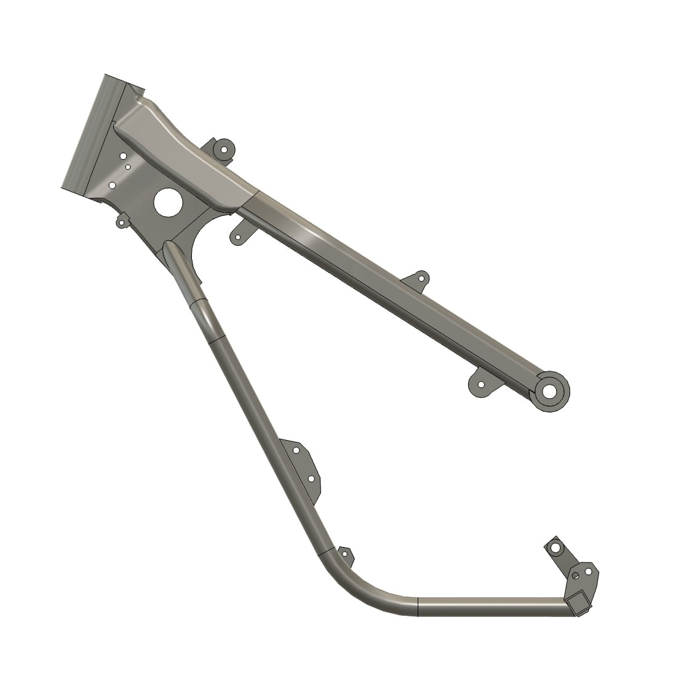
Figure A.1: Re-modelled main frame (side view).
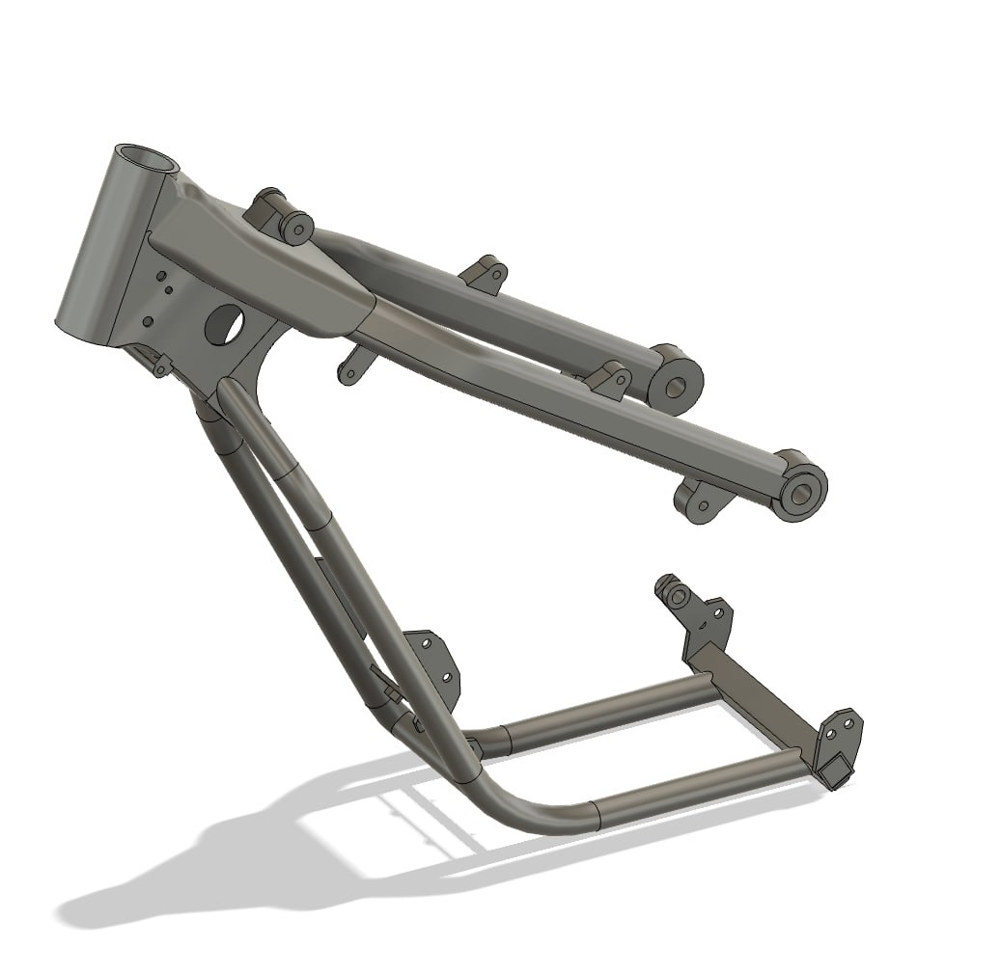
Figure A.2: Re-modelled main frame (isometric view).
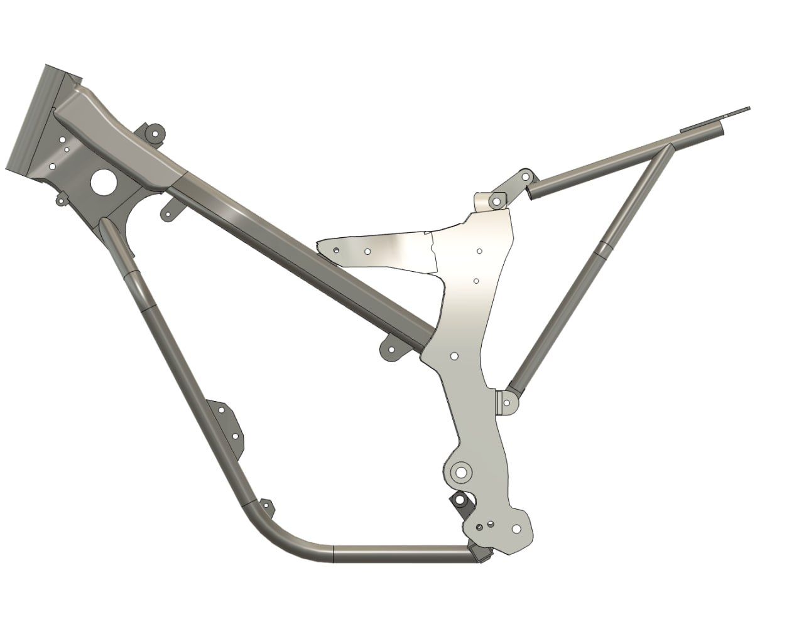
Figure A.3: Frame with one cast aluminium side frame fitted (side view).
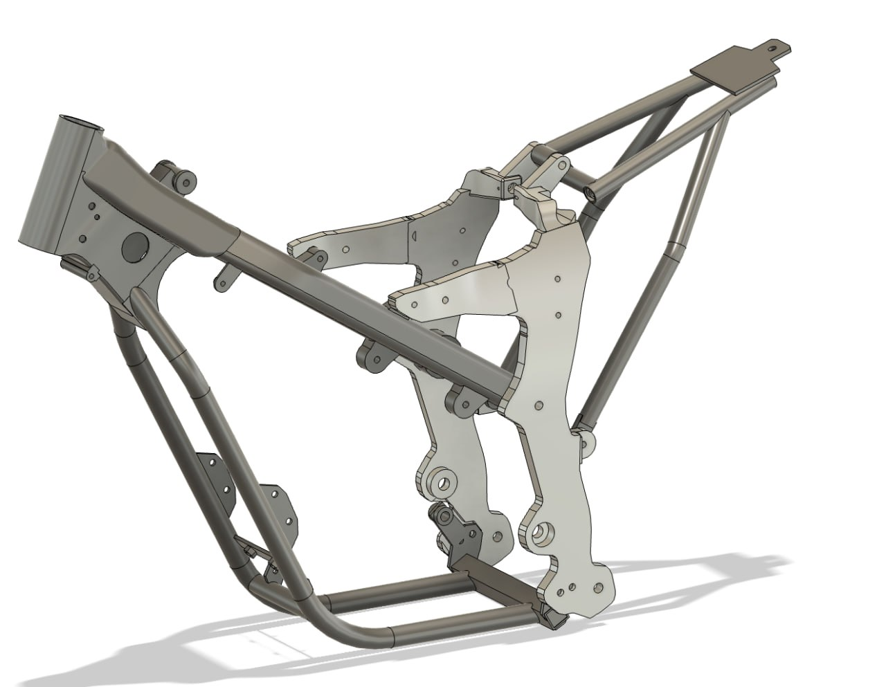
Figure A.4: Frame with both cast aluminium side frames fitted (isometric view).
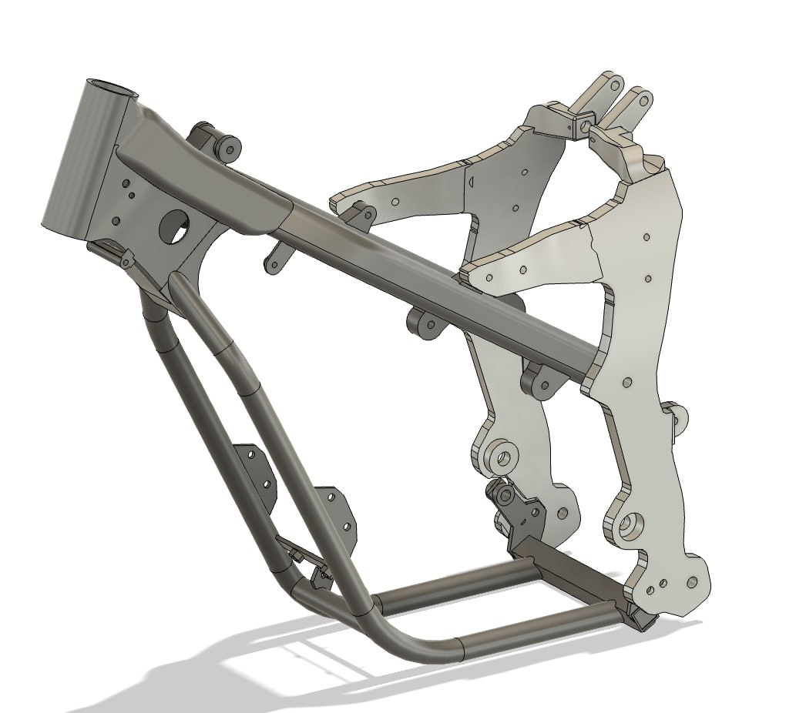
Figure A.5: Frame with side frames and mounting brackets (isometric view).
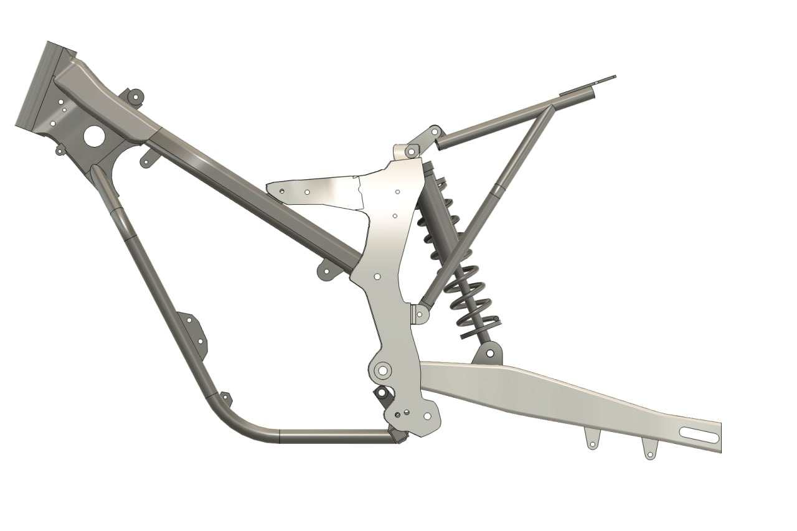
Figure A.6: Frame with side frame and rear shock fitted.
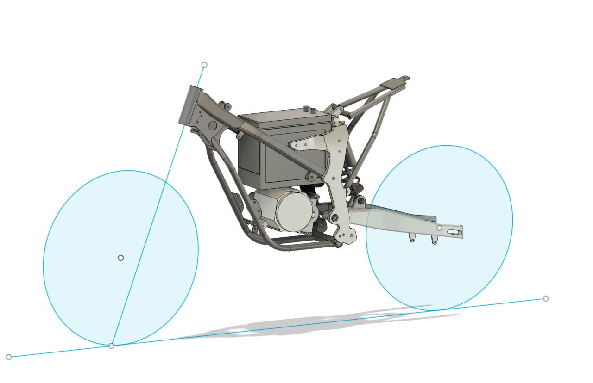
Figure A.7: Frame, battery and motor placed between the wheel positions (isometric view).
Appendix B: Derivation of the Equivalent Static Loads
Two coordinate systems are used. The frame (model) axes are the Fusion 360 global axes: X positive forward with the origin at the rear axle, Y positive to the rider's left, and Z positive upward with the origin at ground level when the motorcycle stands level. All load tables are expressed in these axes, because the frame is fixed in the model. The ground axes are aligned with the landing surface: horizontal/vertical for Scenario A, and slope-tangential (positive down-slope) / slope-normal for Scenario B. Impact forces and accelerations are calculated in the ground axes and then rotated into the frame axes using the pitch angle θ of the frame relative to the ground (positive nose-up):
Fx,frame = Fx,ground·cos θ + Fz,ground·sin θ ; Fz,frame = -Fx,ground·sin θ + Fz,ground·cos θ (B.1)
For example, in Study 1.3 (θ = -25°) a purely vertical ground reaction of 3,138.6 N becomes (-1,326, +2,845) N in frame axes. All loads act in the X-Z plane, so Fy = 0 throughout.
The vehicle and rider are modelled as four lumped masses (Table B.1). The frame mass is the Fusion 360 volume of the frame bodies multiplied by the density of 6061-T6 aluminium and includes the C-brackets and footpegs. The combined centre of gravity of the motorcycle and rider is found by mass-weighted averaging, as illustrated in Figure B.1.
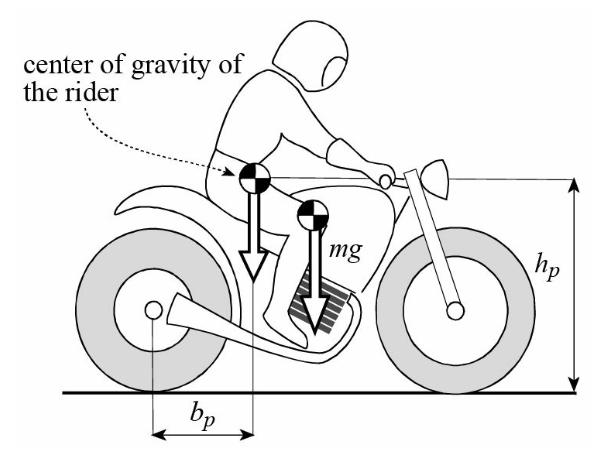
Figure B.1: Centre of gravity of the motorcycle and of the rider (Cossalter, 2006, Fig. 3-7)
Table B.1: Lumped masses and positions (frame axes)
Component | Mass (kg) | x (mm) | z (mm) | Offset from system CG Δx, Δz (mm) |
Rider | 80.00 | 430.0 | 1,180.0 | -121.3, +236.4 |
Battery pack | 23.20 | 684.0 | 710.0 | +132.7, -233.6 |
Electric motor | 18.50 | 698.2 | 472.3 | +146.9, -471.3 |
Frame and structural chassis | 17.36 | 776.7 | 669.0 | +225.4, -274.6 |
System | 139.06 | 551.3 | 943.6 | - |
M = Σmi = 80.0 + 23.2 + 18.5 + 17.36 = 139.06 kg ; W = M·g = 139.06 × 9.81 = 1,364.18 N (B.2)
X̄ = Σ(mixi)/M = 76,669.0/139.06 = 551.3 mm ; Z̄ = Σ(mizi)/M = 131,223.4/139.06 = 943.6 mm (B.3)
The system centre of gravity (CG) is the reference point for all pitch accelerations, inertial moment arms and dynamic load transfers. The CG height of 0.944 m (h/p = 0.66 with rider; 0.44 for the motorcycle alone) is above the 0.5-0.7 m range Cossalter (2006, §3.2.1) gives for road motorcycles with rider. This is expected for a trail motorcycle with a 937 mm seat height and 250 mm of suspension travel; Cossalter notes that all-terrain motorcycles have the highest CG positions.
With the front axle of the CAD model at x = L = 1,424.0 mm (rear axle at x = 0), which matches the measured 1,420 mm wheelbase within the ±5 mm accuracy of the model (Section E.1.6), taking moments about the rear axle (Figure B.2) gives the fraction of the system mass carried by the front wheel:
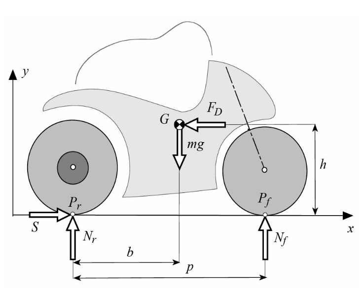
Figure B.2: Weight, wheel reactions, wheelbase p, CG distance b and CG height h (Cossalter, 2006, Fig. 3-10)
xf = X̄/L = 551.34/1,424.0 = 0.3872 (38.7 % front, 61.3 % rear) (B.4)
mfront = 139.06 × 0.3872 = 53.84 kg ; mrear = 139.06 × 0.6128 = 85.22 kg (B.5)
These mass shares are used for the simultaneous (flat) landings, where each axle decelerates its own share of the mass. For the motorcycle alone, b/p = 0.50, within the 0.35-0.51 range reported by Cossalter (2006, §3.2.1). The rider moves the CG rearward to 38.7 % front, a larger shift than on a conventional motorcycle because the rider is 58 % of the total mass.
The pitch moment of inertia is taken about the transverse (y) axis through the system CG (Figure B.3), using the parallel-axis theorem:
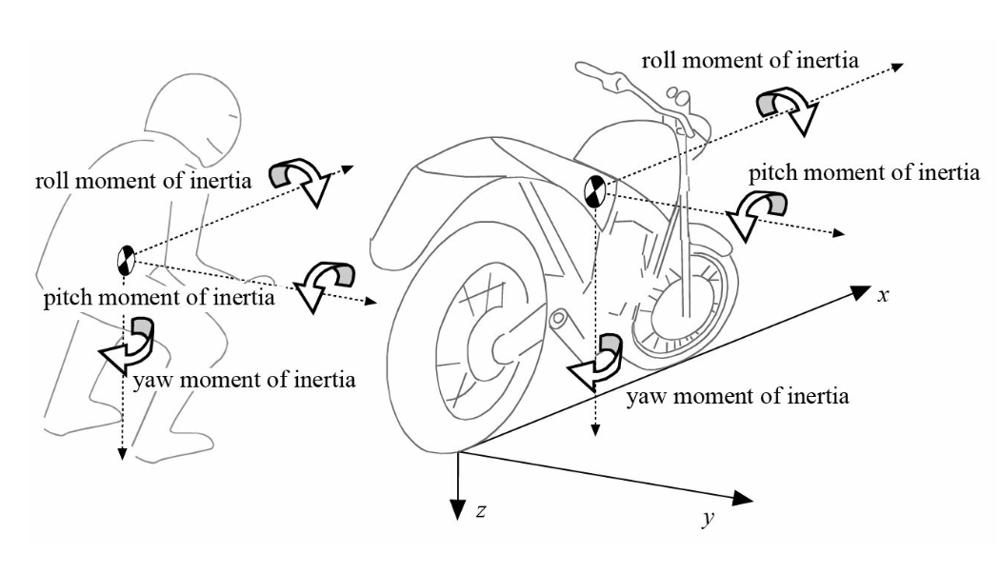
Figure B.3: Roll, pitch and yaw moments of inertia of the motorcycle and rider (Cossalter, 2006, Fig. 3-9)
I = Σ[Ilocal,i + mi(Δxi² + Δzi²)] (B.6)
Table B.2: Pitch moment of inertia about the system CG
Component | Ilocal (kg·m²) | m·r² (kg·m²) | Ii (kg·m²) |
Rider | 3.200 | 5.647 | 8.847 |
Battery pack | 0.297 | 1.675 | 1.972 |
Motor | 0.176 | 4.509 | 4.685 |
Frame assembly | 3.130 | 2.191 | 5.321 |
Total, I | 20.824 |
The pitch inertia quantifies the system's resistance to angular acceleration. A larger I reduces the rotational response during single-wheel impacts and therefore increases the effective mass resisted by the striking tyre (Section B.1.7). The system radius of gyration is ρ = √(I/M) = √(20.824/139.06) = 0.387 m. This is smaller than both b = 0.551 m and p - b = 0.873 m, as Cossalter (2006, §5.6.1) notes is generally the case. It is below the 0.45-0.55 m Cossalter gives for a complete motorcycle (Table 3-1) because the wheels, which lie furthest from the CG, are excluded as unsprung mass. The rider value is discussed in Section G.2.4.
The motor CG lies at x = 698.2 mm. It is carried on three mounts: the front mount H3 at x = 813.2 mm, and the rear mounts H1 (x = 604 mm) and H2 (x = 570 mm), whose mean position is x = 587.0 mm. Static lever equilibrium gives:
H3 share = (698.2 - 587.0)/(813.2 - 587.0) = 111.2/226.2 = 0.491 (49.1 %) (B.7)
H1 share = H2 share = (1 - 0.491)/2 = 0.2545 (25.45 % each) (B.8)
The motor's total static-equivalent force (Section B.1.8) is split in these proportions in every study, in both X and Z.
Following Cossalter (2006, §5.3), each real suspension is replaced by an equivalent vertical spring-damper in series with the tyre, connecting the unsprung wheel to the sprung mass (Figure B.4).
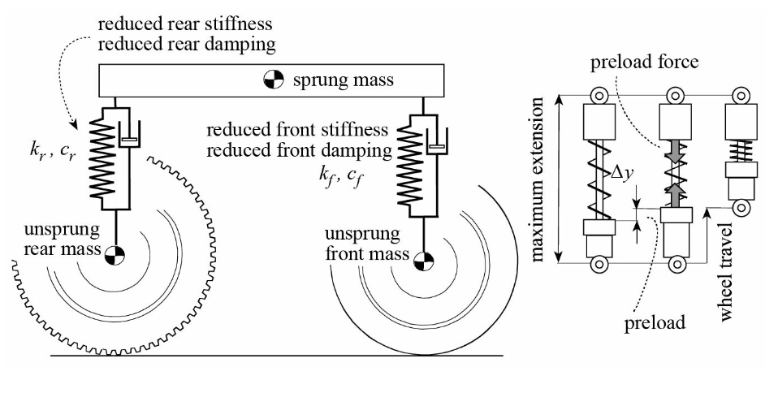
Figure B.4: Equivalent front and rear suspension, in series with the tyre radial stiffness (Cossalter, 2006, Fig. 5-9)
At maximum suspension compression, the kinetic energy at touchdown plus the potential energy lost over the stroke equals the work absorbed by the suspension and tyre:
½·m·Vn² + m·gn·(S + d) = N·(ηs·S + ηt·d) (B.9)
N = [½·m·Vn² + m·gn·(S + d)] / (ηs·S + ηt·d) (B.10)
where m is the mass decelerated by the striking wheel (kg); Vn the impact velocity normal to the ground (m/s); gn the component of gravity normal to the ground (m/s²); S = 0.250·cos φ the ground-normal component of the 250 mm wheel travel, φ being the angle between the travel direction and the ground normal; d the tyre deflection (0.032 m front, 0.0396 m rear); ηs = 0.70 and ηt = 0.47.
At the front, the wheel moves along the fork axis, which is inclined at the head-tube angle ε = 21° (Figure B.5). A displacement s along the fork therefore gives a vertical wheel displacement of s·cos ε; this is the same relation that underlies Cossalter's reduced front stiffness, k = kf·cos²ε (2006, §5.3.1).
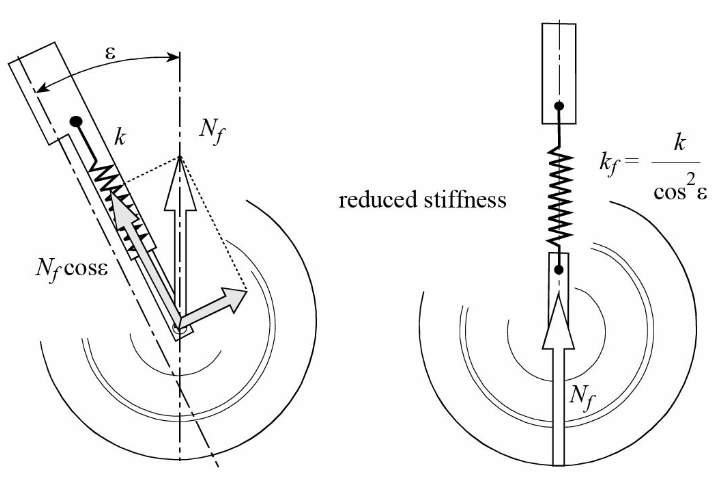
Figure B.5: Telescopic fork inclined at the caster angle ε and its equivalent vertical suspension (Cossalter, 2006, Fig. 5-10)
At the rear, the 84 mm shock stroke is amplified by the 2.98 leverage ratio of the direct-mounted swingarm (Figure B.6). This corresponds to a velocity ratio of 1/2.98 = 0.34, within the 0.25-0.5 range given by Cossalter (2006, §5.3.2). The axle moves perpendicular to the swingarm, which is inclined at tan⁻¹(114/538) = 11.95° between the pivot at (538, 442) mm and the axle at (0, 328) mm.
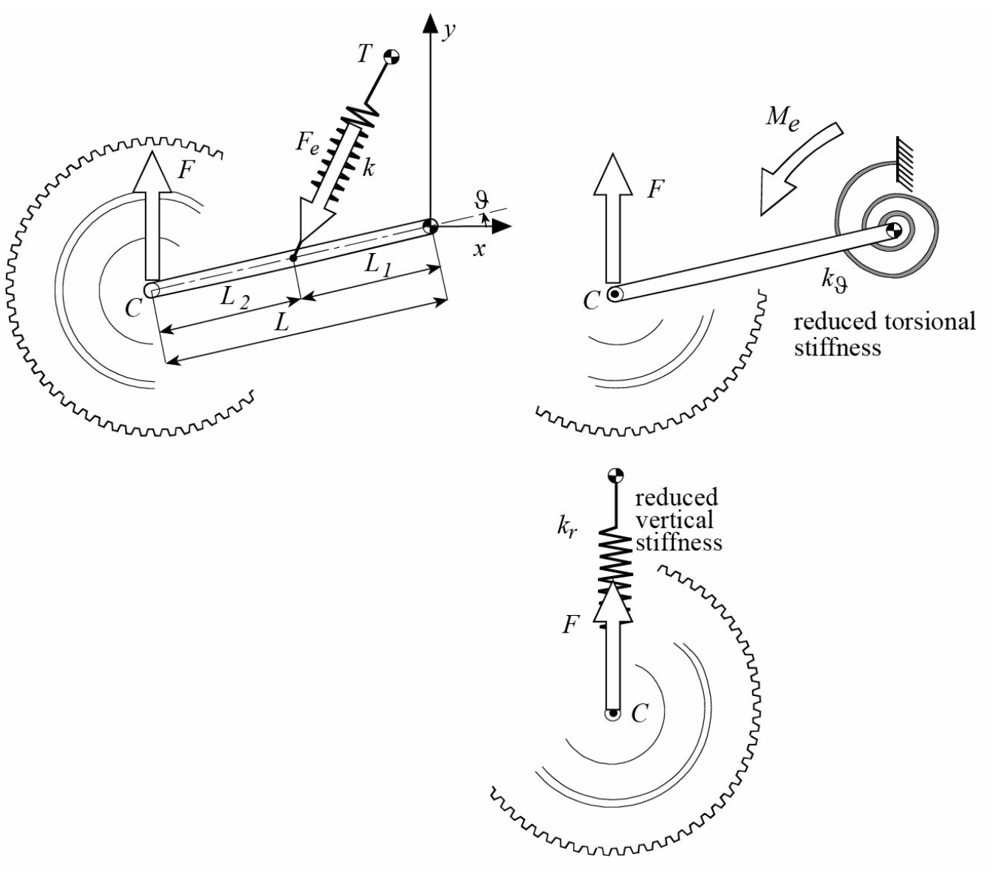
Figure B.6: Swingarm rear suspension and its equivalent vertical stiffness (Cossalter, 2006, Fig. 5-11)
With the frame level, φ = 21° at the front and φ = 11.95° at the rear. The load factor of each study is n = ΣN/W (Section B.4).
When only one wheel strikes, the motorcycle both decelerates and pitches about its CG, so the striking tyre resists less than the full mass. Writing the two in-plane equations of motion of the sprung mass (Figure B.7) for a single force N applied at a horizontal distance dground from the CG gives M·a = N and I·α = N·dground. The acceleration of the contact point is therefore a + α·dground = N(1/M + dground²/I), and the effective mass is:
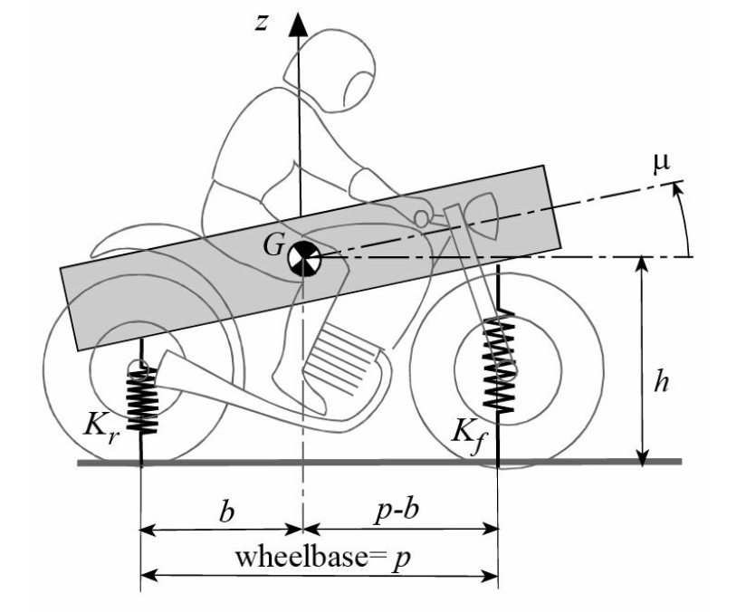
Figure B.7: Two-degree-of-freedom in-plane model: vertical bounce and pitch of the sprung mass about its CG (Cossalter, 2006, Fig. 5-33)
meff = 1 / [1/M + dground²/I] (B.11)
where dground is the ground-tangential distance from the system CG to the contact patch of the striking wheel, measured with the motorcycle at its landing pitch. The contact patch lies one wheel radius (347 mm front, 328 mm rear) below the axle in the ground-normal direction.
Once the ground force is known, d'Alembert's principle converts the accelerations into static-equivalent forces at each mounting point. With all vectors in ground axes and g the gravity vector, (0, -9.81) m/s² for Scenario A and (+2.54, -9.48) m/s² for Scenario B (the slope components g·sin 15° and g·cos 15°; Cossalter, 2006, §3.1.2):
1.Translational acceleration of the CG: aCG = ΣFground/M + g (B.12)
2.Angular (pitch) acceleration, positive nose-up: α = Σ(rxFz - rzFx)/I, r measured from the CG to the point of application (B.13)
3.Acceleration of component i at offset ri from the CG: ai = aCG + α × ri, i.e. ai,x = aCG,x - α·ri,z, ai,z = aCG,z + α·ri,x (B.14)
4.Static-equivalent force on the component's mounts: Fstatic,i = mi·(g - ai), rotated into frame axes with Equation B.1 (B.15)
5.Linear Global Load (LGL) on the frame: LGL = g - aframe, rotated into frame axes (B.16)
The LGL is entered in Fusion 360 as a whole-model acceleration field. Fusion multiplies it by the density of every element, so it applies the frame's own inertial load and self-weight. Because the LGL already contains the gravitational term, the separate Fusion gravity load is not used in Studies 1.2 to 2.4. Each component's force is applied to the faces that carry it in the real assembly: the seat-pan top (seated rider), the head-tube top disc (rider load through the handlebars and steering stem), the footpeg tops (standing rider), the battery-bay floor and the three motor-mount holes.
The rider's weight distribution changes with riding posture and is set per study: seated at rest (70 % seat, 30 % feet on the ground); standing in the "attack" position for a flat landing (50 % handlebars, 50 % pegs); thrown forward onto the handlebars in a front-first landing (100 % handlebars); and driven down through the legs in a rear-first landing (100 % footpegs).
Vz = √(2·g·h) = √(2 × 9.81 × 1.0) = 4.4294 m/s ; Ek = ½·M·Vz² = ½ × 139.06 × 4.4294² = 1,364.2 J (B.17)
Forward speed is zero, so tyre drag is zero.
●Rider weight 80 × 9.81 = 784.8 N: seat 70 % = 549.4 N (applied to the seat pan); feet 30 % = 235.4 N (carried by the rider's feet on the ground, so it bypasses the frame).
●Battery weight 23.2 × 9.81 = 227.6 N (battery-bay floor).
●Motor weight 18.5 × 9.81 = 181.5 N, split by the lever rule into H3 = 0.491 × 181.5 = 89.1 N and H1 = H2 = 0.2545 × 181.5 = 46.2 N.
●Frame self-weight 17.36 × 9.81 = 170.3 N, applied by the 1 g gravity field.
The total vertical load carried by the frame is 549.4 + 227.6 + 181.5 + 170.3 = 1,128.8 N. Taking moments about the rear axle, with the seat load acting at the seat-pan centroid (x = 337 mm):
Nfront = (549.4 × 337 + 227.6 × 684 + 181.5 × 698.2 + 170.3 × 776.7)/1,424 = 421.2 N (37.3 %) ; Nrear = 1,128.8 - 421.2 = 707.6 N (62.7 %) (B.18)
These axle reactions are developed by the model's constraints and are not applied as loads. The front share (37.3 %) is slightly lower than the whole-system fraction xf = 38.7 % because the 235.4 N carried by the rider's feet is excluded. The applied loads are listed in Table G.1.
Ground-normal travel: Sfront = 0.250 cos 21° = 0.2334 m ; Srear = 0.250 cos 11.95° = 0.2446 m.
Table B.3: Study 1.2 energy balance at each wheel (Equation B.10)
Quantity | Front (m = 53.84 kg) | Rear (m = 85.22 kg) |
Ek = ½·m·Vz² | 528.2 J | 836.0 J |
Ep = m·g·(S + d) | 53.84 × 9.81 × (0.2334 + 0.032) = 140.2 J | 85.22 × 9.81 × (0.2446 + 0.0396) = 237.6 J |
ηsS + ηtd | 0.70(0.2334) + 0.47(0.032) = 0.1784 m | 0.70(0.2446) + 0.47(0.0396) = 0.1898 m |
Ground reaction N | 3,746.0 N | 5,655.8 N |
●ΣN = 9,401.8 N, so the load factor is n = 9,401.8/1,364.18 = 6.89 g.
●aCG = (0, 9,401.8/139.06 - 9.81) = (0, +57.80) m/s² (upward deceleration).
●α = (3,746.0 × 0.87266 - 5,655.8 × 0.55134)/20.824 = +7.24 rad/s² (nose-up): the front reaction acts on a longer lever arm about the CG (p - b = 0.873 m versus b = 0.551 m).
●Rider: standing, 50 % handlebars / 50 % footpegs.
Table B.4: Study 1.2 component accelerations and static-equivalent loads (θ = 0°, so ground and frame axes coincide)
Component | ai (x, z) (m/s²) | g - ai (m/s²) | Static-equivalent load (frame axes) |
Rider (80 kg) | (-1.71, +56.92) | (+1.71, -66.73) | (+137, -5,338) N → head tube (+68, -2,669) N and pegs (+68, -2,669) N |
Battery (23.2 kg) | (+1.69, +58.76) | (-1.69, -68.57) | (-39, -1,591) N |
Motor (18.5 kg) | (+3.41, +58.86) | (-3.41, -68.67) | (-63, -1,270) N → H1 = H2 (-16, -323) N; H3 (-31, -624) N |
Frame (LGL) | (+1.99, +59.43) | (-1.99, -69.24) | LGL (-2.0, -69.2) m/s² |
●Front contact patch, frame axes: (1,424 + 347 sin 25°, 347 - 347 cos 25°) = (1,571, 33) mm. This is the source location of the remote force.
●Ground-tangential distance from CG to contact patch: dground = 0.5386 m.
●meff = 1/[1/139.06 + 0.5386²/20.824] = 47.34 kg.
●Fork travel angle to the vertical = 21° - 25° = -4°, so S = 0.250 cos 4° = 0.2494 m.
●Ek = ½(47.34)(4.4294)² = 464.4 J ; Ep = 47.34 × 9.81 × (0.2494 + 0.032) = 130.7 J ; ηsS + ηtd = 0.70(0.2494) + 0.47(0.032) = 0.1896 m.
●Nfront = (464.4 + 130.7)/0.1896 = 3,138.6 N (n = 2.30 g).
●aCG = (0, 3,138.6/139.06 - 9.81) = (0, +12.76) m/s² ; α = 0.5386 × 3,138.6/20.824 = +81.18 rad/s² (strong nose-up angular acceleration as the front is arrested).
●Fork reaction in frame axes (Equation B.1, θ = -25°): (-3,138.6 sin 25°, 3,138.6 cos 25°) = (-1,326, +2,845) N, applied as a Remote Force from the contact patch to the upper and lower head-tube bores.
●Rider: thrown forward, 100 % on the handlebars.
Table B.5: Study 1.3 component accelerations (ground axes) and static-equivalent loads (frame axes)
Component | ai (x, z) (m/s²) | g - ai (m/s²) | Static-equivalent load (frame axes) |
Rider | (-21.55, +11.95) | (+21.55, -21.76) | Head tube (+2,298, -848) N |
Battery | (+21.74, +14.51) | (-21.74, -24.32) | (-219, -724) N |
Motor | (+39.72, +7.40) | (-39.72, -17.21) | (-531, -599) N → H1 = H2 (-135, -152) N; H3 (-261, -294) N |
Frame (LGL) | (+27.94, +19.92) | (-27.94, -29.73) | LGL (-12.8, -38.8) m/s² |
The rider load has a large forward component (+2,298 N) because the nose-up angular acceleration accelerates the upper body backwards relative to the frame; the d'Alembert force therefore pushes the rider forward into the handlebars.
●Rear contact patch, frame axes: (0 - 328 sin 25°, 328 - 328 cos 25°) = (-139, 31) mm.
●Ground-tangential distance from CG to rear contact patch: dground = -0.2393 m.
●meff = 1/[1/139.06 + 0.2393²/20.824] = 100.59 kg.
●Rear travel angle to the vertical = 11.95° + 25° = 36.95°, so S = 0.250 cos 36.95° = 0.1998 m.
●Ek = ½(100.59)(4.4294)² = 986.8 J ; Ep = 100.59 × 9.81 × (0.1998 + 0.0396) = 236.2 J ; ηsS + ηtd = 0.70(0.1998) + 0.47(0.0396) = 0.1585 m.
●Nrear = (986.8 + 236.2)/0.1585 = 7,717.7 N (n = 5.66 g).
●aCG = (0, 7,717.7/139.06 - 9.81) = (0, +45.69) m/s² ; α = -0.2393 × 7,717.7/20.824 = -88.70 rad/s² (strong nose-down angular acceleration, which produces the "second-wheel slap").
●The rear reaction is carried by the rear-axle constraint and is not applied as a load.
●Rider: 100 % on the footpegs, split equally left and right.
Table B.6: Study 1.4 component accelerations (ground axes) and static-equivalent loads (frame axes)
Component | ai (x, z) (m/s²) | g - ai (m/s²) | Static-equivalent load (frame axes) |
Rider | (+14.46, +64.30) | (-14.46, -74.11) | (-3,554, -4,885) N → each peg (-1,777, -2,442) N |
Battery | (-13.80, +26.27) | (+13.80, -36.08) | (-63, -894) N |
Motor | (-32.38, +16.21) | (+32.38, -26.02) | (+340, -690) N → H1 = H2 (+86, -175) N; H3 (+167, -339) N |
Frame (LGL) | (-13.63, +17.28) | (+13.63, -27.09) | LGL (+0.9, -30.3) m/s² |
●Forward speed v = 30 km/h = 8.333 m/s; vertical drop speed vz = 4.4294 m/s.
●Trajectory angle: tan⁻¹(4.4294/8.333) = 28.0° below horizontal. This is steeper than the 15° slope, so the motorcycle lands on the slope rather than overflying it.
●Slope-normal velocity: vn = v sin 15° - vz cos 15° = 2.157 - 4.278 = -2.12 m/s.
●Slope-normal gravity: gn = 9.81 cos 15° = 9.476 m/s². Slope-tangential gravity: gt = 9.81 sin 15° = 2.539 m/s², acting down-slope (Cossalter, 2006, §3.1.2).
●Tyre drag coefficient μ = 0.10, acting up-slope at each contact patch.
The normal impact kinetic energy is (2.12/4.43)² = 23 % of the flat-ground value, a reduction of approximately 77 %.
Study 2.1 was not solved separately. At rest on a 15° slope, the loads have the same magnitudes as in Study 1.1 (1,128.8 N total frame load; 421.2 N front and 707.6 N rear) but are inclined by 15° relative to the frame. Because Study 1.1 shows a factor of safety above 5 in both materials, the level at-rest case (Study 1.1) is taken as the 1 g baseline for both scenarios.
The frame is parallel to the slope, so frame axes and slope axes coincide. Sfront = 0.2334 m and Srear = 0.2446 m, as in Study 1.2.
Table B.7: Study 2.2 energy balance at each wheel (Equation B.10)
Quantity | Front (m = 53.84 kg) | Rear (m = 85.22 kg) |
Ek = ½·m·vn² | ½ × 53.84 × 2.122² = 121.2 J | ½ × 85.22 × 2.122² = 191.8 J |
Ep = m·gn·(S + d) | 53.84 × 9.476 × (0.2334 + 0.032) = 135.4 J | 85.22 × 9.476 × (0.2446 + 0.0396) = 229.5 J |
ηsS + ηtd | 0.1784 m | 0.1898 m |
Ground reaction N | 1,438 N | 2,219 N |
Tyre drag μN | 144 N | 222 N |
●ΣN = 3,658 N, so n = 3,658/1,364.18 = 2.68 g.
●aCG = (-366/139.06 + 2.539, 3,658/139.06 - 9.476) = (-0.09, +16.83) m/s²: tyre drag almost exactly balances the down-slope component of gravity.
●α = (1,438 × 0.8727 - 2,219 × 0.5513 - 366 × 0.9436)/20.824 = -15.07 rad/s² (nose-down). The two normal reactions almost balance about the CG, so the net pitch comes from the 366 N of tyre drag acting 0.944 m below the CG.
●The front-tyre drag (-144, 0) N is applied at the front-axle bore. The rear reaction and rear drag are carried by the rear-axle constraint.
●Rider: standing, 50 % handlebars / 50 % pegs.
Table B.8: Study 2.2 component accelerations and static-equivalent loads (slope axes = frame axes)
Component | ai (x, z) (m/s²) | g - ai (m/s²) | Static-equivalent load (frame axes) |
Rider | (+3.47, +18.66) | (-0.93, -28.13) | (-75, -2,251) N → head tube (-37, -1,125) N and pegs (-37, -1,125) N |
Battery | (-3.61, +14.83) | (+6.15, -24.31) | (+143, -564) N |
Motor | (-7.19, +14.62) | (+9.73, -24.09) | (+180, -446) N → H1 = H2 (+46, -113) N; H3 (+88, -219) N |
Frame (LGL) | (-4.23, +13.43) | (+6.77, -22.91) | LGL (+6.8, -22.9) m/s² |
●Front contact patch, frame axes: (1,424 + 347 sin 15°, 347 - 347 cos 15°) = (1,514, 12) mm.
●Position of the contact patch relative to the CG in slope axes: 0.6884 m ahead (slope-tangential, dground) and 1.149 m below (slope-normal).
●meff = 1/[1/139.06 + 0.6884²/20.824] = 33.39 kg.
●Fork travel angle to the slope normal = 21° - 15° = 6°, so S = 0.250 cos 6° = 0.2486 m.
●Ek = ½(33.39)(2.122)² = 75.2 J ; Ep = 33.39 × 9.476 × (0.2486 + 0.032) = 88.8 J ; ηsS + ηtd = 0.70(0.2486) + 0.47(0.032) = 0.1891 m.
●Nfront = (75.2 + 88.8)/0.1891 = 867 N (n = 0.64 g); front drag = 0.10 × 867 = 86.7 N up-slope.
●aCG = (-86.7/139.06 + 2.539, 867/139.06 - 9.476) = (+1.92, -3.24) m/s². Because n is below gn/g = 0.966, the CG is still accelerating towards the slope at this instant.
●α = (0.6884 × 867 - 1.149 × 86.7)/20.824 = +23.88 rad/s² (nose-up).
●Fork reaction including drag, rotated into frame axes (θ = -15°): (-86.7 cos 15° - 867 sin 15°, -86.7 sin 15° + 867 cos 15°) = (-308, +815) N, applied as a Remote Force from (1,514, 0, 12) mm to the head-tube bores.
●Rider: 100 % on the handlebars.
Table B.9: Study 2.3 component accelerations (slope axes) and static-equivalent loads (frame axes)
Component | ai (x, z) (m/s²) | g - ai (m/s²) | Static-equivalent load (frame axes) |
Rider | (-4.29, -4.58) | (+6.83, -4.90) | Head tube (+629, -237) N |
Battery | (+8.12, -1.62) | (-5.59, -7.85) | (-78, -210) N |
Motor | (+13.70, -2.77) | (-11.16, -6.71) | (-167, -173) N → H1 = H2 (-43, -44) N; H3 (-82, -85) N |
Frame (LGL) | (+9.64, +0.26) | (-7.10, -9.74) | LGL (-4.3, -11.2) m/s² |
Landing nose-down onto a downslope reduces the head-tube reaction to 28 % of the flat-ground front-first value (Study 1.3), showing how sloped terrain mitigates head-tube impact severity.
●Rear contact patch, frame axes: (0 - 328 sin 15°, 328 - 328 cos 15°) = (-85, 11) mm.
●Position of the contact patch relative to the CG in slope axes: 0.3731 m behind (dground = -0.3731 m) and 1.065 m below (slope-normal).
●meff = 1/[1/139.06 + 0.3731²/20.824] = 72.07 kg.
●Rear travel angle to the slope normal = 11.95° + 15° = 26.95°, so S = 0.250 cos 26.95° = 0.2228 m.
●Ek = ½(72.07)(2.122)² = 162.2 J ; Ep = 72.07 × 9.476 × (0.2228 + 0.0396) = 179.2 J ; ηsS + ηtd = 0.70(0.2228) + 0.47(0.0396) = 0.1746 m.
●Nrear = (162.2 + 179.2)/0.1746 = 1,955 N (n = 1.43 g); rear drag = 0.10 × 1,955 = 195.5 N up-slope.
●Rear ground reaction including drag, in frame axes (θ = +15°): (-195.5 cos 15° + 1,955 sin 15°, 195.5 sin 15° + 1,955 cos 15°) = (+317, +1,939) N. It is carried by the rear-axle constraint and is not applied as a load.
●aCG = (-195.5/139.06 + 2.539, 1,955/139.06 - 9.476) = (+1.13, +4.58) m/s².
●α = (-0.3731 × 1,955 - 1.065 × 195.5)/20.824 = -45.04 rad/s² (nose-down).
●Rider: 100 % on the footpegs, split equally left and right.
Table B.10: Study 2.4 component accelerations (slope axes) and static-equivalent loads (frame axes)
Component | ai (x, z) (m/s²) | g - ai (m/s²) | Static-equivalent load (frame axes) |
Rider | (+10.00, +12.61) | (-7.46, -22.09) | (-1,034, -1,553) N → each peg (-517, -777) N |
Battery | (-7.48, -3.91) | (+10.02, -5.56) | (+191, -185) N |
Motor | (-17.66, -7.30) | (+20.20, -2.17) | (+351, -136) N → H1 = H2 (+89, -35) N; H3 (+172, -67) N |
Frame (LGL) | (-8.19, -8.43) | (+10.73, -1.05) | LGL (+10.1, -3.8) m/s² |
The load factor n expresses the peak ground reaction, normal to the landing surface, as a multiple of the total weight of the motorcycle and rider:
n = ΣN / W, W = M·g = 139.06 × 9.81 = 1,364.18 N (B.19)
For the static case (Study 1.1), n = 1.00 by definition, because every mass experiences exactly 1 g. Only 1,128.8 N (0.83 W) passes through the frame in that case, because 235.4 N of the rider's weight goes to the ground through the rider's feet. For the impact cases, dividing Equation B.10 by W shows the parameters that control n:
n = (m/M) × [heff + (gn/g)(S + d)] / (ηs·S + ηt·d) (B.20)
where m/M is the fraction of the total mass that the striking wheel must stop; heff = Vn²/(2g) is the equivalent free-fall height normal to the landing surface (1.000 m in Scenario A and 2.12²/(2 × 9.81) = 0.229 m in Scenario B); (gn/g)(S + d) is the additional height lost while the suspension and tyre compress; and ηs·S + ηt·d is the effective stopping distance. For flat landings, Equation B.20 is evaluated for each wheel and the two contributions are added, since mfront + mrear = M.
Table B.11: Breakdown of the load factor (Equation B.20)
Study | Wheel | m/M | heff (m) | (gn/g)(S + d) (m) | ηsS + ηtd (m) | n |
1.2 | Front + rear | 0.387 + 0.613 | 1.000 | 0.265 / 0.284 | 0.1784 / 0.1898 | 2.75 + 4.15 = 6.89 |
1.3 | Front | 0.340 | 1.000 | 0.281 | 0.1896 | 2.30 |
1.4 | Rear | 0.723 | 1.000 | 0.239 | 0.1585 | 5.66 |
2.2 | Front + rear | 0.387 + 0.613 | 0.229 | 0.256 / 0.275 | 0.1784 / 0.1898 | 1.05 + 1.63 = 2.68 |
2.3 | Front | 0.240 | 0.229 | 0.271 | 0.1891 | 0.64 |
2.4 | Rear | 0.518 | 0.229 | 0.254 | 0.1746 | 1.43 |
The load factor varies between studies for four reasons:
1.Impact energy (scenario). On the 15° downslope, the slope-normal impact speed falls from 4.43 m/s to 2.12 m/s, so the equivalent drop height falls from 1.000 m to 0.229 m. This is the main reason every Scenario B case is far less severe than its Scenario A counterpart (for example, 6.89 g → 2.68 g for the flat landing).
2.Effective mass (which wheel lands first). In a flat landing, both wheels together stop the whole mass (m/M = 1). In a single-wheel landing, part of the impact is converted into pitch rotation, so the striking wheel stops only meff (Equation B.11), which depends on dground²/I. The front contact patch lies 0.539 m ahead of the CG and stops only 34 % of the mass, whereas the rear contact patch lies 0.239 m behind the CG and stops 72 %. This is why the rear-first landing (5.66 g) is more than twice as severe as the front-first landing (2.30 g) for the same drop height. On the slope, the contact patches lie further from the CG along the surface (0.688 m and 0.373 m), so meff/M falls to 24 % and 52 %.
3.Stopping distance (pitch and suspension geometry). Only the component of the 250 mm wheel travel that is normal to the ground absorbs the impact (S = 0.250·cos φ). At 25° nose-up, the rear wheel's travel is 36.95° from the vertical, leaving only 0.200 m of effective stroke compared with 0.245 m when level, which raises the force needed to absorb the same energy. At 25° nose-down, the fork is almost vertical (-4°), so nearly all of its travel is effective.
4.Gravity during compression. The term (gn/g)(S + d) adds about 0.25-0.28 m of equivalent height in every case. In Scenario B it is larger than the impact term heff itself, which is why the Scenario B load factors remain well above what the 77 % energy reduction alone would suggest.
The load factor is related to the normal acceleration of the CG by aCG,n = (n - gn/g)·g. In Study 2.3, n = 0.64 is below cos 15° = 0.966, so the CG is still accelerating towards the slope at the moment of peak force; this is why aCG,z is negative in Table 5.1.
Appendix C: Literature Review and Battery Heat Load - Detail
C.1 Customer Demands
Customer demand for electric motorcycles is primarily influenced by affordability, vehicle performance, charging convenience, and safety. Guerra (2019) identified purchase price, driving range, maximum speed, and charging duration as significant factors influencing consumer preferences. Similarly, Bhat and Verma (2024) found that high purchasing costs and prolonged charging times discourage adoption, while improved driving range and charging accessibility increase consumer interest. Furthermore, Balijepalli et al. (2023) highlighted consumers' preference for rapid charging and battery-swapping solutions, emphasising the importance of practical battery systems. Beyond performance, consumers also express concerns regarding vehicle safety, technological reliability, and suitability for daily transportation (Will et al., 2021). Although reducing motorcycle weight may improve handling and energy efficiency, maintaining affordability and battery performance remains essential. Consequently, manufacturers must balance lightweight construction, structural integrity, battery safety, and operational efficiency to develop electric motorcycles that satisfy consumer expectations and remain competitive in the market. For this project, these demands translate into a lighter frame, secure integration of the battery and motor, and a low build cost, which are reflected in the objectives in Section 1.4.
C.2 Overview of Different Types of Motorcycles
Motorcycles are designed for different riding conditions, making their configurations variably suited to recreational trail riding, which involves uneven surfaces, obstacles, speed changes, and suspension movement (Vasquez et al., 2021). In the case of sport motorcycles [Figure C.1], they prioritise acceleration, braking, cornering, and aerodynamics on paved racing circuits. Cossalter et al. (2010) demonstrated the importance of tyre-road friction and engine power in racing manoeuvres, while Capone and Romano (2021) examined how windscreens and rider position influence racing-motorcycle aerodynamics. These road-oriented priorities offer limited benefit on loose, irregular trails, where changing tyre contact forces and larger suspension motions demand different design considerations (Vasquez et al., 2021).
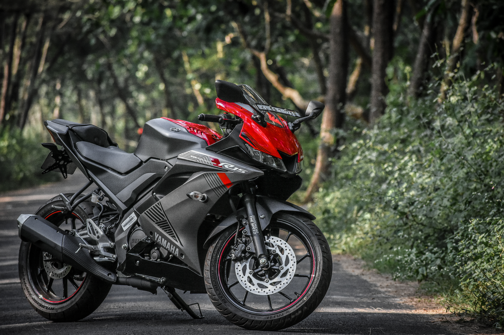
Figure C.1: Yamaha YZF-R15 V3.0 (Akshayanil919, 2018)
Scooters [Figure C.2], by contrast, are commonly configured for practical urban transportation, often incorporating step-through frames, automatic transmissions, and small wheels (Blackman & Haworth, 2013). Their suitability for rough trails is constrained by the importance of road-surface irregularities to scooter vibration and rider comfort: Pandey et al. (2024) observed distinctive vibration responses when a motor scooter traversed different paved surfaces. Consequently, the packaging and comfort priorities of conventional scooters are a less appropriate starting point for a motorcycle intended to negotiate off-road obstacles.
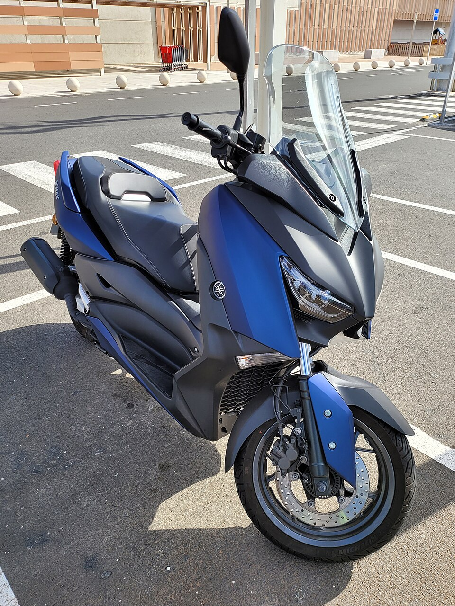
Figure C.2: Yamaha XMAX 125, Model 2017 (2006-2016) (CommanderWaterford, 2020)
Dirt bikes [Figure C.3] require a more nuanced distinction, as their designs vary according to the specific off-road disciplines for which they are intended. Motocross motorcycles are primarily developed for competitive racing, where rapid acceleration, jumps, and repeated landings impose substantial dynamic loads on the motorcycle frame and suspension system (Yagi et al., 2006; Lozoya-Santos et al., 2015). Consequently, these motorcycles prioritise responsive handling, suspension performance, and maintaining tyre contact under demanding track conditions (Vasquez et al., 2021). However, these design priorities may not fully align with those of recreational trail motorcycles, which are intended to navigate varying terrain conditions at potentially lower speeds over prolonged riding periods. For instance, Lozoya-Santos et al. (2015) demonstrated that suspension damping characteristics significantly influence motorcycle handling under different riding conditions. This suggests that suspension systems optimised for motocross racing may require alternative damping and spring settings to improve ride comfort and traction when traversing smaller, irregular obstacles at lower speeds. Additionally, Arunachalam et al. (2022) established that motorcycle riding comfort is strongly influenced by the relationship between rider anthropometry and riding position. Therefore, the seat height, handlebar positioning, and footpeg placement of a recreational trail motorcycle should be evaluated to accommodate comfortable seated riding and controlled standing manoeuvres, rather than simply replicating the configuration of a racing motorcycle (Arunachalam et al., 2022; Vasquez et al., 2021). Moreover, Tarabini et al. (2020) demonstrated that motocross riders experience substantial hand-arm vibration, emphasising the importance of vibration management when considering prolonged riding comfort. Consequently, although motocross motorcycles provide valuable references for off-road structural performance, their racing-oriented configurations may not directly satisfy the suspension and operational requirements of the proposed electric trail motorcycle. These differences justify developing a purpose-specific design that balances structural integrity, weight reduction, rider comfort, and off-road manoeuvrability.
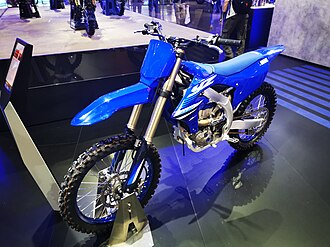
Figure C.3: 2024 Yamaha YZ450F (Saggittarius A, 2024)
For the proposed electric trail motorcycle, the most appropriate approach is to retain off-road capability while prioritising manageable handling, reliable traction, impact resistance, and secure motor-battery integration over road-racing speed or motocross-specific competition performance.
C.2.1 Overview and Definition of Trail Motorcycles
Trail motorcycles are a category of off-road motorcycles designed to operate on unpaved and irregular terrain, including dirt tracks, steep slopes and uneven surfaces. Unlike motorcycles primarily intended for paved roads, they must accommodate variable traction, obstacles and substantial changes in elevation. Shinagawa et al. (2017) demonstrated that surface friction and slope gradients strongly influence off-road motorcycle motion, emphasising the importance of maintaining stability under changing terrain conditions. Consequently, suspension performance is a key design consideration. Lozoya-Santos et al. (2015) highlighted that off-road motorcycles commonly employ long-travel, adjustable suspension systems to improve tyre contact and reduce the effects of terrain-induced impacts on riders. Similarly, Vasquez et al. (2021) found that tyre contact forces vary with track obstacles, demonstrating the dynamic loading experienced during off-road riding. Beyond suspension, the motorcycle frame is responsible for connecting structural components, supporting the rider and vehicle systems, and transferring loads to the suspension. Graba and Grycz (2024) emphasised the use of finite element analysis and structural optimisation to minimise motorcycle frame mass while controlling stress distributions.
Therefore, for our project, we researched and sought inspiration from current trail motorcycles that are available in the market to develop our new frame design. Such measures were taken as the development of trail motorcycles requires careful consideration of weight, structural integrity, suspension performance and handling to ensure safe and reliable operation across demanding terrain, and the current market options represent the best and reliable designs that the industry has to offer. Through an extensive review of existing trail motorcycles and their frame configurations, two prominent structural designs were identified: the single-cradle and double-cradle frames. Consequently, these configurations were selected for further evaluation and comparison in this project.
C.2.2 Single-Cradle Frames
Motorcycle cradle frames are tubular load-bearing structures that support the powertrain and connect major components, including the steering head and rear suspension mounting regions (Frizziero et al., 2019). In a single-cradle configuration, one principal downtube extends downward from the steering head before forming or connecting to a supporting structure beneath the engine or motor (Frizziero et al., 2019), as illustrated in Figure C.4. Theoretically, this relatively simple arrangement can reduce the number of frame members, material consumption, welds and fabrication operations, making it attractive when weight and cost are constrained (Frizziero et al., 2019; Liu et al., 1994). However, fewer load paths may increase the mechanical demands on individual members and joints, while achieving sufficient bending and torsional stiffness could require thicker tubes or additional reinforcement, diminishing potential weight savings (Calì & Oliveri, 2017; Doria & Taraborrelli, 2016).
An example of a trail motorbike adopting a single cradle frame is the Stark VARG MX 1.2. It is a high-performance electric motocross motorcycle developed by Stark Future for competitive off-road riding. Weighing approximately 118 kg, the motorcycle incorporates a redesigned high-strength steel frame that improves structural performance while minimising weight. It features an electric powertrain with adjustable output of up to 80 horsepower and a 7.2 kWh battery, offering approximately 20% greater range than its predecessor (Stark Future, n.d.-a) . Its adjustable KYB suspension (Stark Future, n.d.-a) enhances handling across uneven terrain, while the integrated Arkenstone display (Stark Future, n.d.-a) allows riders to customise power delivery and monitor performance. These characteristics make it a valuable benchmark for single-cradle frame design and component integration in accordance with our project goals.
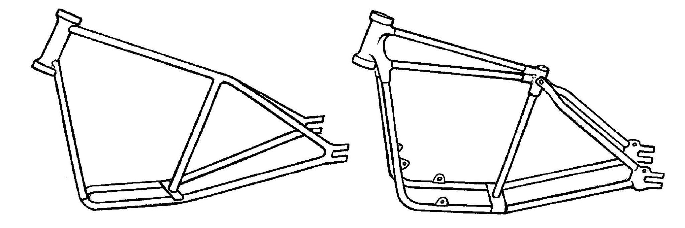
Figure C.4: Single-cradle Frame Design (Foale, 2002)
C.2.3 Double-Cradle Frames
Conversely, a double-cradle frame incorporates two downtubes and paired lower members that surround and support the powertrain (Frizziero et al., 2019). Its theoretical advantages include additional load-transfer paths, greater opportunities to distribute mounting loads and increased potential to tune torsional rigidity through member placement (Kumazawa et al., 2011; Calì & Oliveri, 2017). The arrangement may also provide multiple attachment locations for an electric motor and battery enclosure, although actual accommodation depends on component dimensions and mounting geometry (Frizziero et al., 2019). Its disadvantages include potentially greater mass, additional welded connections and more complicated fabrication and assembly, with joints requiring careful attention to fatigue and manufacturing quality (Liu et al., 1994; Sharma & Khare, 2024). The current Red Dot mobility motorbike utilises a dual-cradle frame, as seen in figure 2.6.
Importantly, neither layout is inherently superior: stiffness, strength and weight depend on tube dimensions, material properties, joint design and loading conditions (Calì & Oliveri, 2017; Doria & Taraborrelli, 2016). Accordingly, both configurations should be evaluated under comparable landing load cases, with their torsional stiffness also considered, before selecting a frame for the proposed electric trail motorcycle.
C.3 Batteries
Electric motorcycles commonly utilise lithium-ion battery packs constructed from cylindrical or pouch cells, each offering distinct advantages and limitations regarding packaging efficiency, structural protection, and thermal management (Widyantara et al., 2022).
Pouch cells consist of stacked electrode layers enclosed within lightweight, flexible laminated packaging, offering greater flexibility in battery arrangement and space utilisation (Widyantara et al., 2022). Their relatively large, flat surfaces facilitate conductive heat transfer when integrated with appropriate cooling plates or thermally conductive materials. Nevertheless, tightly stacked pouch cells may experience difficulties dissipating heat from their interior surfaces, potentially creating temperature gradients and localised hotspots (Widyantara et al., 2022). Additionally, their flexible packaging requires external structural support to accommodate cell expansion and maintain adequate protection. Regardless of cell architecture, effective thermal management is essential to prevent overheating and maintain consistent battery performance (Zhu et al., 2025).
For electric motorcycles, limited installation space and weight constraints further influence the selection of suitable cooling strategies. Chidambaram et al. (2025) investigated the thermal and structural performance of electric two-wheeler battery enclosures, emphasising the importance of integrating mechanical protection with thermal management. Consequently, optimising cell arrangement, spacing, thermal interfaces, and enclosure materials is essential to improve heat dissipation while maintaining battery safety and reliability.
C.4 Battery Casing and Heat Load
Battery casings for electric motorcycles must provide structural protection against vibration, mechanical impacts, and environmental exposure while facilitating effective heat dissipation (Chidambaram et al., 2025). During battery operation, heat is generated through internal electrical resistance and reversible electrochemical reactions, with excessive temperatures potentially accelerating battery degradation (Bernardi et al., 1985; Widyantara et al., 2022). The irreversible component of heat generation can be approximated using Joule's law (Equation C.1), whereby the heat generation rate is proportional to the square of the discharge current and the battery's internal resistance (Hwang et al., 2015):
(C.1)
where H is the heat generated (J), I is the discharge current (A), R is the internal resistance (Ω) and t is the discharge time (s).
To estimate the heat load generated by Red Dot Mobility's existing battery pack, calculations were performed using the battery specifications and the electrical power requirements of the YM-160 motor, which is the motor currently used by Red Dot Mobility. The battery has a nominal voltage of 72 V and an energy capacity of 4,320 Wh, yielding an electrical charge capacity of 60 Ah (4,320 Wh ÷ 72 V). According to YMMotor (n.d.), the motor has a rated mechanical output power of 10 kW and an efficiency of at least 90%. Assuming an operating efficiency of 90%, the electrical power required from the battery was estimated to be 11,111 W (10,000 W ÷ 0.90). Subsequently, dividing this power requirement by the battery's nominal voltage produces an estimated discharge current of 154.3 A (11,111 W ÷ 72 V), equivalent to approximately 2.57C.
The battery's resistive heat generation rate was then calculated using Joule's law, expressed as Q̇ = I²R, where I represents the discharge current and R represents the battery pack's internal resistance (Bernardi et al., 1985).
Red Dot Mobility's battery pack is assumed to be built from nickel manganese cobalt (NMC) lithium-polymer pouch cells similar to the high-rate 31 Ah cell shown in Figure C.5, which has a nominal voltage of 3.7 V, a maximum charge voltage of 4.2 V, a capacity of 31 Ah, an internal resistance of about 0.8 mΩ and an advertised discharge rate of up to 25C (Taobao, n.d.). To reach the pack's nominal voltage of 72 V, 20 cells must be connected in series (20 × 3.7 V = 74 V). When fully charged, this gives 84 V (20 × 4.2 V), the upper limit of the motor controller's 48-84 V input range (Red Dot Mobility, 2026). To reach the pack's 60 Ah capacity, two of these strings must be connected in parallel (2 × 31 Ah = 62 Ah). This 20S2P arrangement of 40 cells stores about 4.59 kWh, slightly above the pack's rated energy of 4.32 kWh. In terms of packaging, the theoretical cells weigh 14.4 kg and can be stood upright in three rows to fit within the existing 310 × 160 × 240 mm envelope. While the cells are lighter than the current battery's measured 23.2 kg, the difference accounts for the housing, wiring, busbars, BMS, and insulation. Since resistance adds in series and divides in parallel, the internal resistance of the pack is approximately:
(C.2)
where Ns and Np are the numbers of cells in series and in parallel, and Rcell is the internal resistance of one cell. With Ns = 20, Np = 2 and Rcell = 0.8 mΩ, the pack resistance is about 8 mΩ. This value covers the cells only. Busbars, welded tab joints and the battery management system (BMS) add further resistance, so it should be treated as a lower bound.
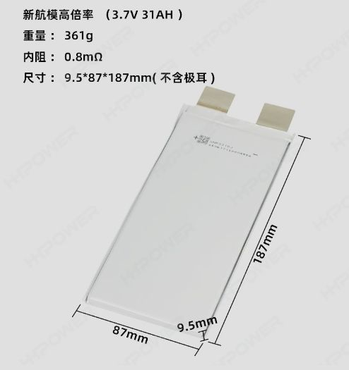
Figure C.5: Representative high-rate 31 Ah NMC pouch cell and its specifications (Taobao, n.d.)
The worst case for heat generation occurs at the motor's peak power, since heat rises with the square of the current. The YM-160 motor has a peak power of 25 kW and a peak current of 386 A at 72 V (YMMotor, n.d.). Substituting this into Q̇ = I²R gives a peak heat generation rate of about 1,190 W (386² × 0.008). A current of 386 A corresponds to about 6.2C per cell (193 A), well within the cell's advertised 25C rate, so the pack can supply the motor's full peak power as the required rate is only about a quarter of the advertised value. Peak power is also drawn only for short bursts, such as hard acceleration or steep climbs.
For the thermal design of the casing, the steady load at the motor’s rated power was used instead. At the rated current of 154.3 A, the quoted cell resistance gives a nominal heat generation rate of about 190 W (154.3² × 0.008).
This value should be treated as a lower estimate. The quoted cell resistance was measured with a 1 kHz AC internal-resistance tester (Taobao, n.d.), whereas Schweiger et al. (2010) found that the resistance governing the energy loss and heat generation of a lithium-ion cell was 2.3 to 2.8 times its 1 kHz AC value. The busbars, welded tab joints and BMS also add resistance, and the reversible electrochemical heating is not included in the simplified calculation (Bernardi et al., 1985). The actual heat load at rated power could therefore be two to three times higher than 190 W. In practice, however, the rated power is rarely sustained for long periods, so the average heat load during normal riding is expected to be lower.
Measuring the actual heat generation of the pack, and confirming the thermal performance of the casing, will be carried out next semester. The casing work continues in Semester 2 (Section 7.3).
Appendix D: Material and Manufacturing Review - Detail
This section first reviews candidate frame materials (Section D.1) and manufacturing methods (Section D.2), using examples from current electric dirt bikes, and then grades them against the project criteria (Section D.3). A single material and manufacturing method is deliberately not selected here. Instead, every option that passes the grading is carried forward, so that the final material can be chosen after the structural testing of the single-cradle and double-cradle frame designs to be more realistic in Section 5.
D.1 Candidate Materials
Steel (AISI 4130). Steel is the traditional material for dirt bike frames. The usual grade is 4130, designated by the American Iron and Steel Institute (AISI), or 25CrMo4 as its European equivalent. KTM uses chromoly frames across its motocross and enduro range (KTM, n.d.), including the model shown in Figure D.2. Stark Future also used a chromoly frame on the original VARG, claiming it was the world’s lightest motocross frame at under 6 kg (Stark Future, n.d.-b).
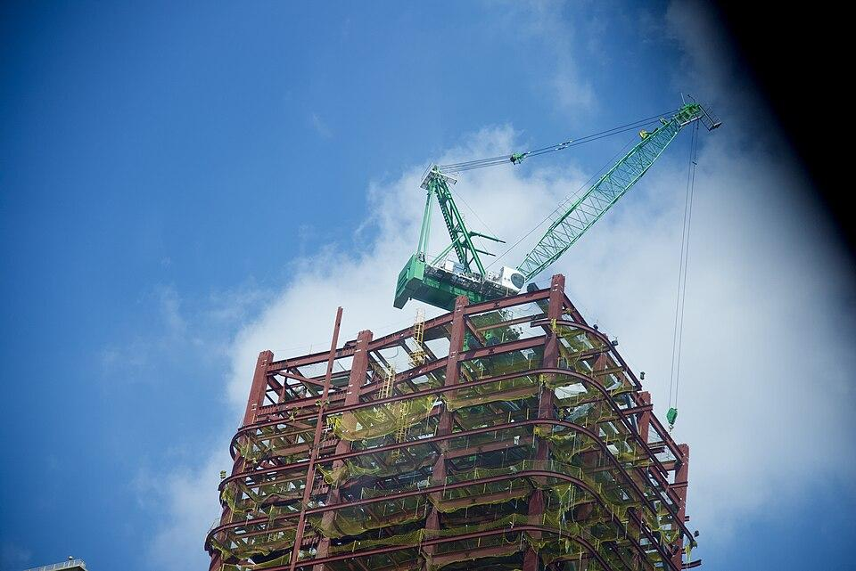
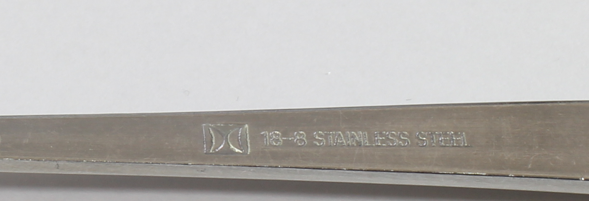
Figure D.1: Examples of other common steels: (a) structural steel framing of a building under construction (SSJF01, 2024); (b) close-up of a stainless steel fork stamped “18-8 STAINLESS STEEL”, the 18% chromium and 8% nickel composition of 304-type stainless steel (Yapparina, 2018).
The main advantages of steel are its high strength and stiffness. 4130 has a yield strength of about 435 MPa when normalised and an elastic modulus of about 205 GPa (MatWeb, n.d.-b). Other common steels such as structural steel (S275) and stainless steel (304) (Figure D.1) have lower yield strengths of 275 MPa and about 230 MPa respectively (Metinvest, n.d.; MakeItFrom, n.d.), so 4130 is used as the steel option in the grading and simulation, as it best shows the advantages of steel. Steel also has a fatigue endurance limit, so it resists repeated loading well (Shumak, 2024), and it can be welded and repaired easily.
The main disadvantage is its high weight, with a density of about 7.85 g/cm³. Carbon and alloy steels such as 4130 and S275 also rust, so they need to be coated or plated. In addition, we could not find a local supplier for 4130 tubes, so it would have to be imported.
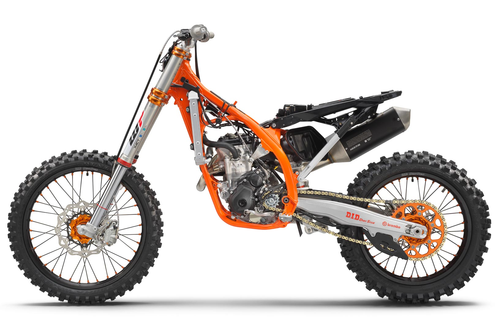
Figure D.2: 2022 KTM 250 SX-F Factory Edition, which uses a chromoly steel central double-cradle frame (Ultimate Motorcycling, 2021).
Aluminium alloy (6061-T6). Aluminium is widely used on light electric off-road bikes. The Sur-Ron Light Bee main frame is pressure-forged aluminium alloy (Sur-Ron NZ, n.d.; Visordown, n.d.). The Dirt Goat from Goat Power Bikes, which inspired our double-cradle concept, uses a 6061 aluminium frame on its 96V model (RadMoto USA, n.d.-b; Figure D.3), and the current Dirt Goat 104V delivers up to 40 kW peak power (Goat Power Bikes, n.d.), showing that aluminium frames are used even on high-power electric dirt bikes.
The main advantage of aluminium is its low weight, with a density of about 2.70 g/cm³. 6061-T6 has a yield strength of about 276 MPa and an elastic modulus of about 69 GPa (MatWeb, n.d.-a). It forms a natural oxide layer, so it does not rust and needs no coating. It also cuts and drills easily with workshop tools, and extrusions (Figure D.4) can be bought locally from Engineering Design and Innovation Centre (EDIC) credit-term vendors such as Alutech Singapore and Prestech Industrial Automation.
The main disadvantage is its lower stiffness: its Young's modulus is about 69 GPa, roughly one third that of 4130 steel at about 205 GPa (MatWeb, n.d.-a, n.d.-b), so larger tube sections or thicker walls are needed to keep the frame stiff. Aluminium also has no fatigue endurance limit, so a frame under repeated loading has a finite fatigue life (Shumak, 2024). In addition, welding 6061-T6 removes much of its strength when welded (Section D.2).
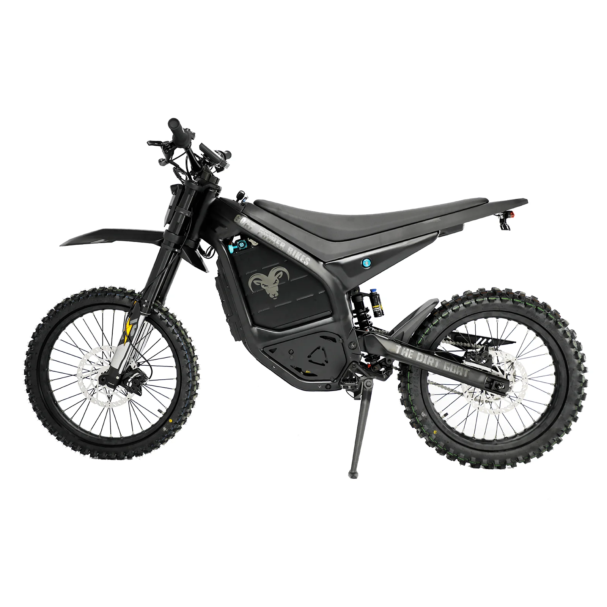
Figure D.3: Dirt Goat electric dirt bike by Goat Power Bikes (Goat Power Bikes, n.d.).
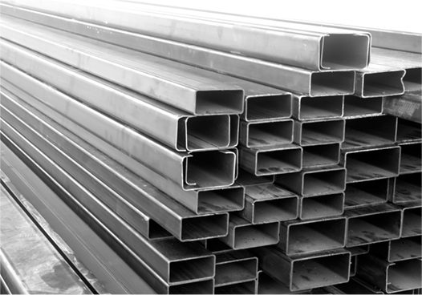
Figure D.4: Aluminium rectangular hollow extrusions (Alutech, n.d.).
Carbon fibre reinforced polymer (CFRP). CFRP is used in high-end frames and racing components. Such as shown in Figure D.5.
Its main advantages are very low weight and high strength, with a density of about 1.55 g/cm³ and a tensile strength of about 600 MPa (Ashby, 2005). Its stiffness and strength can also be tailored by changing the direction of fibre layup, and fiber types.
The main disadvantage is cost. CFRP frames need moulds and layup tooling (Figure D.6), which are only economical at volume, and the material itself is expensive. A frame cannot easily be modified once it is cured. Drilling rivet holes in CFRP also risks delamination and fibre pull-out, which reduce joint strength, and needs specialised tooling and drilling parameters (Xu et al., 2023). Locally, CFRP is only available through specialist suppliers.
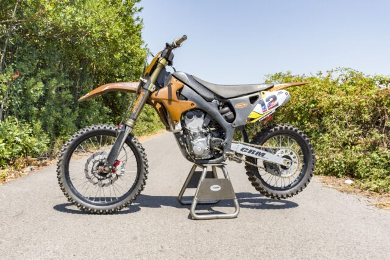
Figure D.5: Carbon fibre dirt bike frame CRM-SCF-450
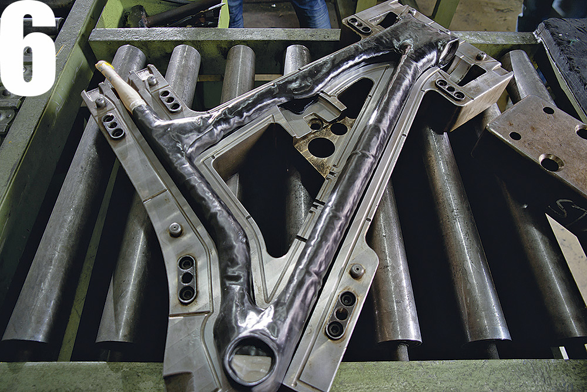
Figure D.6: Carbon fibre bicycle frames and their moulds during manufacture.
Although shown for a bicycle, the same mould-and-layup process would apply to a motorcycle frame (Pinkbike, n.d.).
D.1.1 Material Properties
The values in Table 3.1, and the specific strengths compared in Figure D.7, are for the raw materials. How strong and heavy a finished frame is also depends on the tube section, wall thickness, frame geometry and joints.
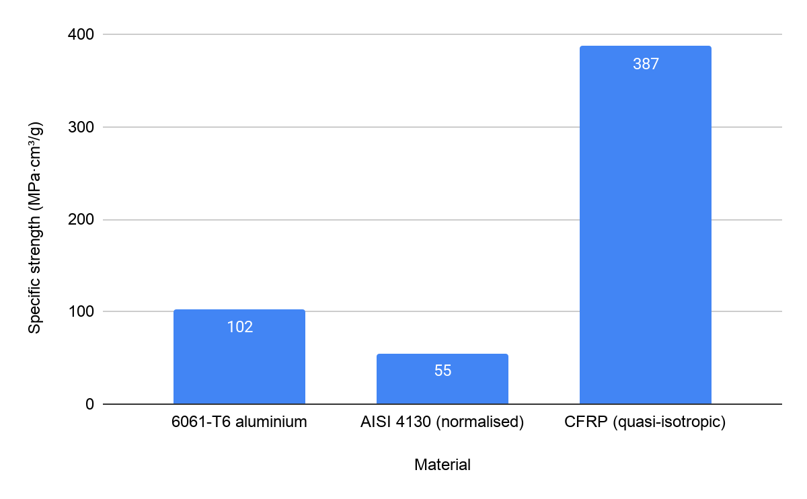
Figure D.7: Specific strength (yield strength ÷ density) of candidate frame materials, calculated from the values in Section D.1.1. CFRP uses its typical tensile strength, as it has no yield point.
D.2 Candidate Manufacturing Methods
Four manufacturing methods were considered. Because both aluminium and steel are carried forward to testing, each method is assessed for thin-walled metal extrusions in general.
Casting or forging. Production frames are often cast or forged, as on the Sur-Ron Light Bee (Figure D.8). These methods give complex one-piece shapes, but the dies and moulds are only economical at large batch sizes, die casting of aluminium, for example, is not economical even at 1,000 units (Ashby, 2005). Therefore, this is not suitable for a one-off production.
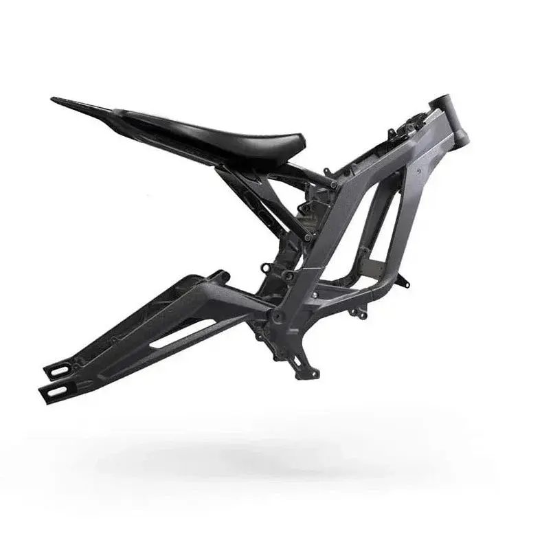
Figure D.8: Sur-Ron Light Bee X forged aluminium main frame (Surronshop, n.d.).
Computer numerical control (CNC) machining from billet. A whole frame can be machined from billet with the use of just a cnc machine with very good precision and consistency. Aftermarket billet frames for the Sur-Ron (Figure D.9) are sold at a regular price of US$2,650 (RadMoto USA, n.d.-a), This is expensive due to the cost of machining large parts from a billet. So despite the part’s low final material volume it is still expensive as most of the billet ends up as swarf. Therefore, CNC is more well suited to small, complex parts.
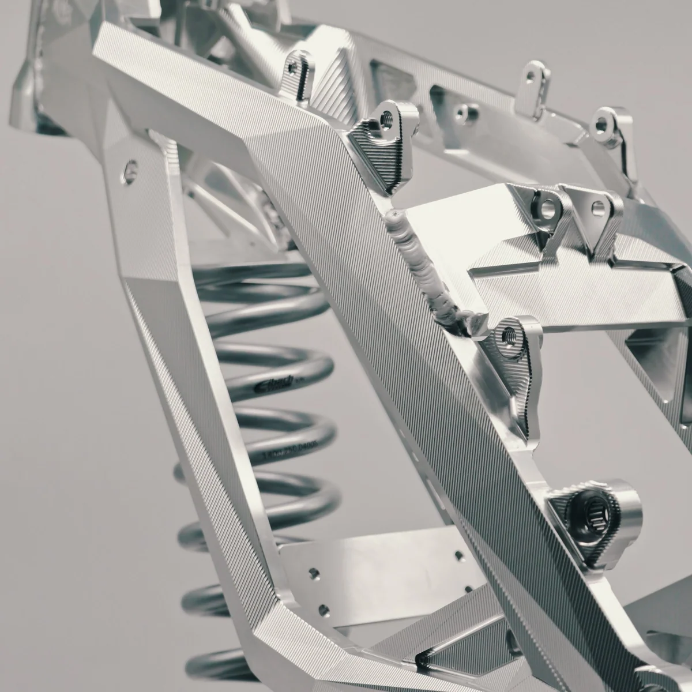
Figure D.9: KyVex CNC-machined billet aluminium frame for the Sur-Ron Light Bee X (Charged Cycle Works, n.d.).
Tungsten inert gas (TIG) welding of extrusions. This is the conventional way to build frames, and is the most common way aluminium bicycle frames are built (Figure D.10). However, welding 6061-T6 significantly reduces strength in the heat-affected zone (Figure 3.1) unless the whole frame is heat-treated again after welding which may cause unwanted distortion. The American Welding Society (AWS) D1.2 standard requires T4 or O-temper properties to be assumed in the heat-affected zone of as-welded 6061-T6 (American Welding Society, n.d.), and welded 6061-T6 specimens have been shown to fail in this zone with yield strength reduced by almost 50% (Mahdi et al., 2014). It also needs a skilled welder and jigs to control distortion, which is expensive and time consuming.
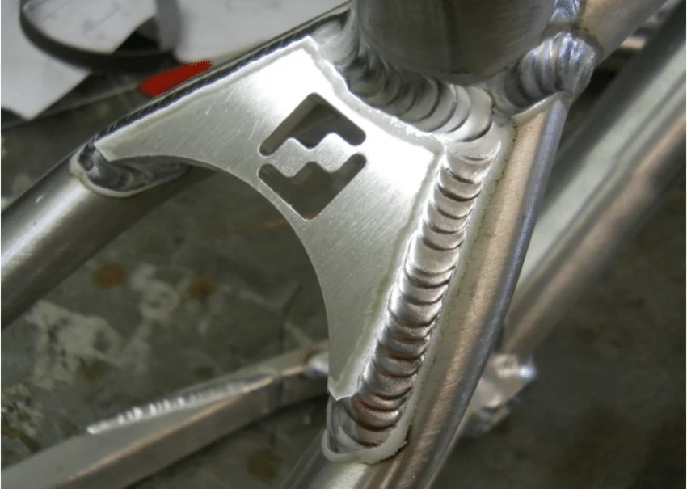
Figure D.10: Aluminium bicycle frame joints welded with the TIG method (Szczucka-Lasota et al., 2020).
Adhesive bonding with rivets. Extrusions and laser-cut panels are joined with structural epoxy, and rivets are added at each joint (Figure 3.2). This hybrid rivet-bonding method has been tested on epoxy-bonded aluminium lap joints (Beber et al., 2023). The main advantages are that no heat is needed, so the T6 temper is kept, and the epoxy spreads load over a large area. The rivets hold the parts in place while the epoxy cures and resists peel loads. Only simple hand tools are needed, so it can be done in-house. The main disadvantages are that bonded joints are weak in peel without the rivets, and the surfaces must be abraded and solvent-cleaned before bonding (3M, 2018). The epoxy also needs time to cure, the overlapping joints add some weight, and the joints cannot easily be taken apart once bonded.
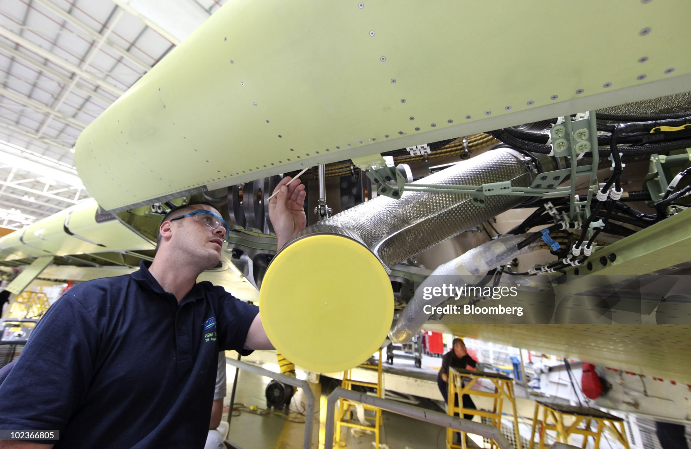
Figure D.11: Assembly of an Airbus A380 aluminium wing during production, with riveted panels (Ratcliffe, 2010).
D.3 Grading of Materials and Manufacturing Methods
The candidates in Sections D.1 and D.2 were graded using the scoring system in Section 2.2. Each option was scored from 1 (poor) to 5 (excellent) against each criterion, and the weighted scores, highlighted in green, were summed. Rather than choosing a single winner, options scoring above 3 (pass) are carried forward, and the rest are not tested further.
D.3.1 Selection Criteria
The frame is a one-off prototype for Red Dot Mobility to test its motor and controller, with possible small-batch production later. Materials and manufacturing methods were therefore graded against the four weighted criteria defined in Section 2.2 and summarised in Table 2.1:
D.3.2 Material Grading
Each material was scored from 1 (poor) to 5 (excellent) against each criterion. The weighted scores, highlighted in green, decide which options are carried forward: any option scoring below 3.0 is not tested further.
As shown in Table 3.2, aluminium 6061-T6 (4.85) and steel (3.95) both score above 3.0, so neither is eliminated at this stage. Both are carried forward to the finite element analysis (FEA) in Section 5, where each is tested on the single-cradle and double-cradle frame designs, so that the final material is chosen from structural results rather than from this grading alone. CFRP (1.85) is not carried forward, because its tooling cost and difficulty of modification cannot be justified for a one-off prototype despite its weight advantage.
D.3.3 Manufacturing Method Grading
As shown in Table 3.3, adhesive bonding with rivets (4.85), TIG welding (3.50) and CNC machining (3.25) all score above 3.0 and remain viable, while casting or forging (1.95) is ruled out for a one-off prototype. A single manufacturing method is deliberately not chosen at this stage. The FEA in Section 5 models every joint in the aforementioned main frame as fully rigid with parent-metal properties, so the effect of the joining method on joint strength is assessed separately in Sections H.3.3 and H.3.4.
Appendix E: Reverse Engineering of the Existing Frame - Detail
E.1 CAD Model of the Existing Frame
E.1.1 Available Frame Data
Red Dot Mobility provided only the physical prototype bike and its motor power rating, with no engineering drawings, CAD files or dimensional data. Basic specifications such as mass, wheelbase, tyre sizes and battery and motor masses were therefore measured by the team (Section E.2), but the frame geometry itself was unknown.
An online search was therefore carried out for a similar bike. The closest match found was the TYE3000 electric dirt bike from Qingdao Edge Power Technology. Its listings give only basic specifications, such as 21-inch front and 18-inch rear wheels and the motor and battery models, and no CAD files were available (Qingdao Edge Power Technology, n.d.-a). The seller was also contacted through the Alibaba listing to request the frame drawings, but declined, stating that they were confidential company information.
The supplier’s listing provided a dimensioned chassis drawing of the TYE3000 (Figure E.1). However, it gives only overall dimensions, such as the 1,201 mm frame length, 638 mm frame height and 539 mm swingarm length, and not the positions of the mounting points, tube angles or tube sections needed to model the frame. Once the drawing was scaled to full size, however, the positions of the mounting holes and other features shown on it could be measured directly, so it was used to check the scanned CAD model (Section E.1.5).
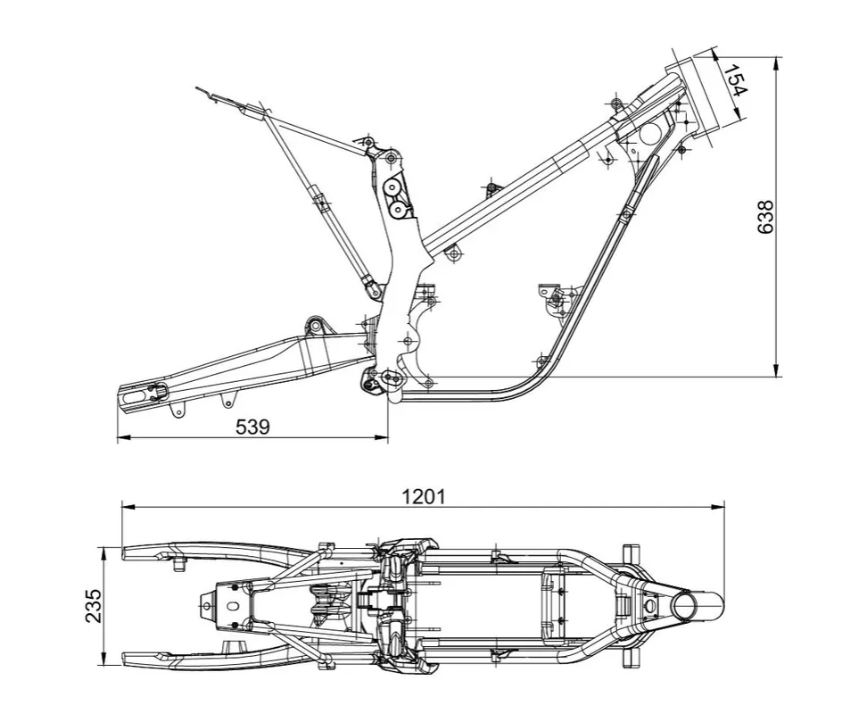
Figure E.1: Chassis drawing of the TYE3000 electric dirt bike, showing its overall dimensions in mm (Qingdao Edge Power Technology, n.d.-b).
E.1.2 Need for 3D Scanning
The redesign, the packaging of the battery and motor, and the FEA in Section 5 all require an accurate digital model of the frame. In particular, the positions of the steering head, swingarm pivot, shock mount and footpeg mounts must be known, because these interfaces are fixed by the bought-in parts (front fork, swingarm, rear shock and wheels) that Red Dot Mobility did not want changed.
A reverse-engineering approach was therefore adopted. The physical frame was 3D scanned, and the resulting mesh was used as a reference to rebuild the frame as a parametric CAD model in Autodesk Inventor and Fusion 360. This model then served as the baseline for the packaging study, the frame redesign and the load simulations.
Measuring the frame by hand was not practical. The frame tubes curve in more than one plane and meet at compound angles, so their geometry cannot be captured with a tape measure or ruler. What matters most for the redesign is not the length of individual tubes but the relative 3D positions of the mounting points, and these are spread across a wheelbase of 1,420 mm. Due to our limited instruments and proper measuring equipment such as a coordinate measuring machine, height gauge or measuring arm, small errors in each hand measurement would build up across the frame. A 3D scan captures the whole frame in a single coordinate system, so curves, angles and mounting point positions can all be measured from one consistent model.
The frame was scanned first, rather than the motor or battery, because it was the only major component whose geometry was both unknown and impractical to measure by hand. The motor and battery are bought-in parts with simple, box-like shapes, and their envelopes were already known: 251.6 × 280 × 180 mm for the motor, with its Ø10.5 mm mounting holes, and 310 × 160 × 240 mm for the battery. The frame, by contrast, has curved tubes meeting at compound angles, and it fixes both the mounting points and the space available for the powertrain. Since the motor and battery must be packaged within the frame, the frame model was needed before any packaging study could begin. With scanner access limited to 2-hour sessions, the frame was also the best use of the limited scanning time.
E.1.3 Scanning Process
The frame was scanned at the NUS Central Library with a Shining 3D EinScan Pro 2X Plus structured-light scanner and the manufacturer’s EXScan Pro software (Figure 4.1). In fixed scan mode, the scanner is rated to a single-shot accuracy of 0.04 mm, and to a volumetric accuracy of 0.3 mm/m when reference markers are used for alignment (Shining 3D, n.d.).
To give the scanner a clear view of the frame, the bike was first stripped down to its bare frame, which consists of a black main frame and shiny cast aluminium side frames (Figure E.2). Stripping the bike took about 1 week. Because the frame itself is not perfectly aligned, several bolts sat at awkward angles and were very hard to remove.
Figure E.2: Actual photo of mainframe
Structured-light scanners work by projecting a light pattern onto the object and reading how it deforms. Dark surfaces absorb this pattern and shiny surfaces reflect it, leaving gaps in the scan, and this frame had both. A thin matte coating is normally applied with a commercial 3D scanning spray, but this was expensive and difficult to obtain. Instead, dry shampoo was used as a low-cost alternative, since it leaves a fine white powder film that can be removed afterwards.
This workaround was found on 3D-scanning user forums, where users report dry shampoo and talcum powder as cheap substitutes for scanning spray (Revopoint 3D Community, n.d.-a, n.d.-b). Two cans were used over the three sessions. The coating stuck well, wiped off easily with wet tissue after scanning and, unlike commercial scanning spray, is non-toxic. About 20 adhesive reference markers were also stuck onto the frame so that the software could track the scanner’s position and align the separate scans.
E.1.4 Difficulties During Scanning
●Failed first attempt. The first scanning attempt failed because the team did not yet know that black and shiny surfaces cannot be scanned without a coating. While a solution was being found, time was spent building a CAD model from hand measurements instead. Only after further research was dry shampoo found to work, and scanning could resume.
●Handheld scanning was not possible. In handheld mode, even the smallest hand movement disrupted the scan, so the scanner had to be fixed on a tripod instead.
●The frame was too large for the turntable. Fixed scan mode is designed to be used with a turntable, which rotates the object automatically so that the software knows how each scan relates to the last. The frame was far too large and heavy for the small turntable provided, so the scanner and tripod had to be moved by hand around the frame for each new section. As a result, the software had no record of how the scanner had moved, and most of the time it could not align the scans correctly.
●Small field of view. A single scan covers at most 312 × 204 mm (Shining 3D, n.d.), only a small part of the frame, so the frame had to be captured in many partial scans that were then merged.
●Alignment had to be done by hand. Because the partial scans could not be aligned automatically, matching points had to be picked by hand on identifiable features in each scan (Figure E.3). Even then, the software often failed to line the scans up, and aligning them took about an hour of repeated attempts. One of the two initial side scans also came out completely wrong and had to be deleted and rescanned.
●Dark and reflective surfaces. Even with the dry shampoo coating, the black main frame and shiny aluminium side frames needed extra markers to scan reliably. These markers kept falling off the curved tube sections, and the coating wore off between sessions and had to be reapplied once.
●Limited scanner access. The scanner could only be booked in 2-hour sessions, at least one week in advance. Three sessions were needed, and two of them over ran by an hour. The last two sessions were only possible on back-to-back days through special permission from the librarian.
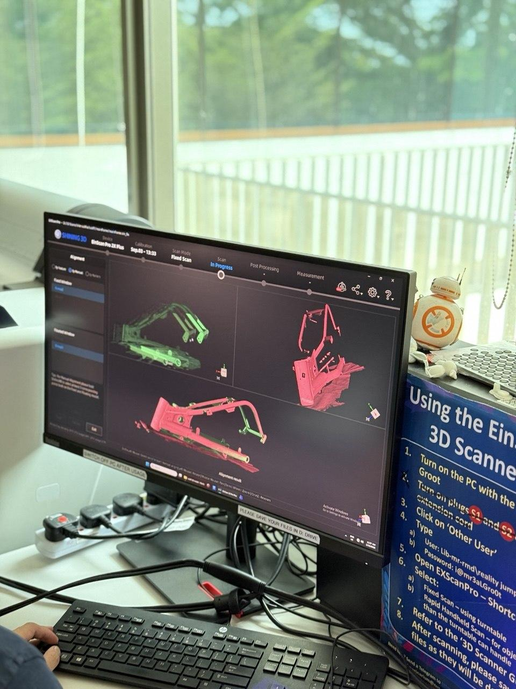
Figure E.3: Alignment in EXScan Pro: matching points picked by hand on two partial scans (shown in green and red); the final successful alignment attempt
Overall, lessons learned are that any dark or shiny surfaces should be coated and fitted with reference markers before scanning. Second, for a part too large for the turntable, the scan should be planned in advance, with enough markers placed and each partial scan overlapping the last, so that the software can track the scanner and align the scans automatically. With this preparation, the frame could likely have been scanned in fewer sessions, and the same approach would apply to scanning any large component in future.
E.1.5 CAD Re-modelling
Once scanning was complete, the separate meshes of the main frame and side frame were exported as watertight .obj models and imported into Autodesk Inventor and Fusion 360 (Figure E.4). Key dimensions and mounting point positions were measured from these meshes, and the frame was re-modelled by hand as solid CAD geometry (Figure E.5). Because the final mesh was very large and slow to work with, re-modelling took about 1 week in total. Only the parts of the frame needed for the redesign were scanned and modelled. The model was then checked against the supplier’s chassis drawing (Figure E.1). The drawing was scaled to 1:1 using the 154 mm head tube length marked on it, so that other dimensions could be measured from it and compared with the model (Figure E.7). The model was also placed between the measured wheel positions and the ground line to check its wheelbase and overall geometry (Figure E.6). Further views of the CAD model are given in Appendix A.
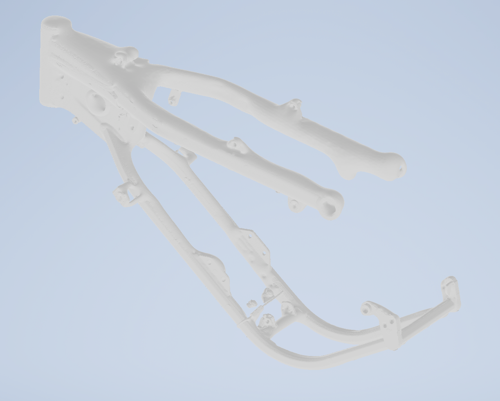 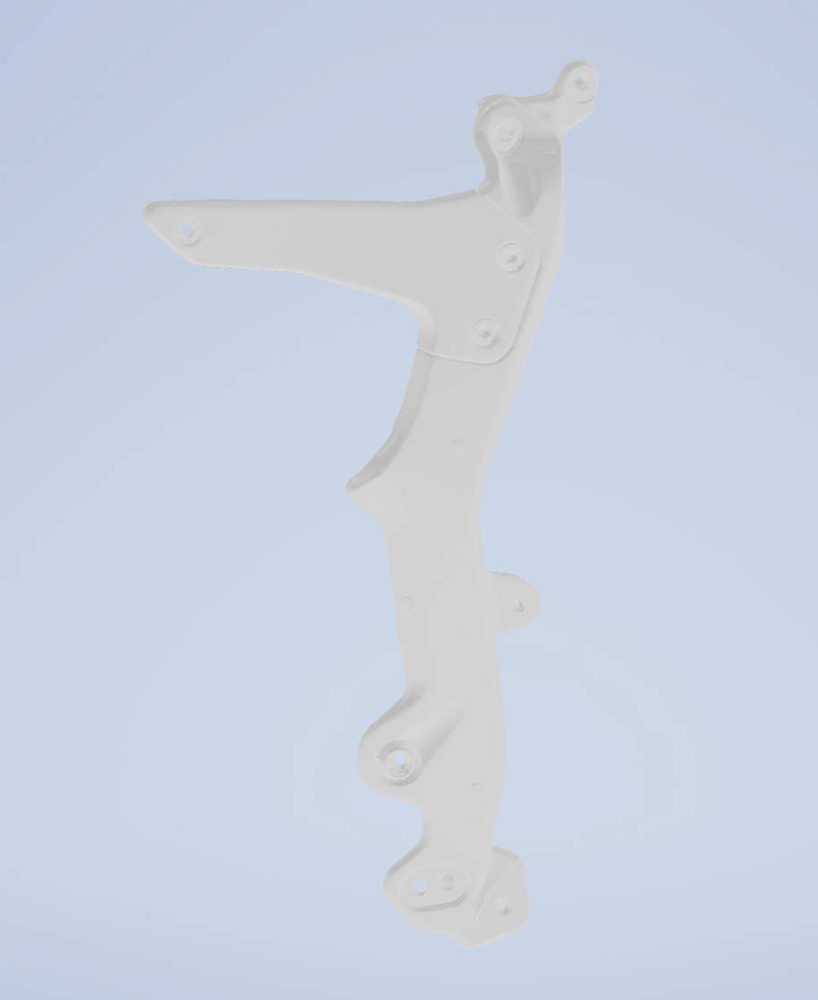
Figure E.4: Scanned meshes (.obj) opened in Autodesk Inventor: (a) main frame; (b) cast aluminium side frame.
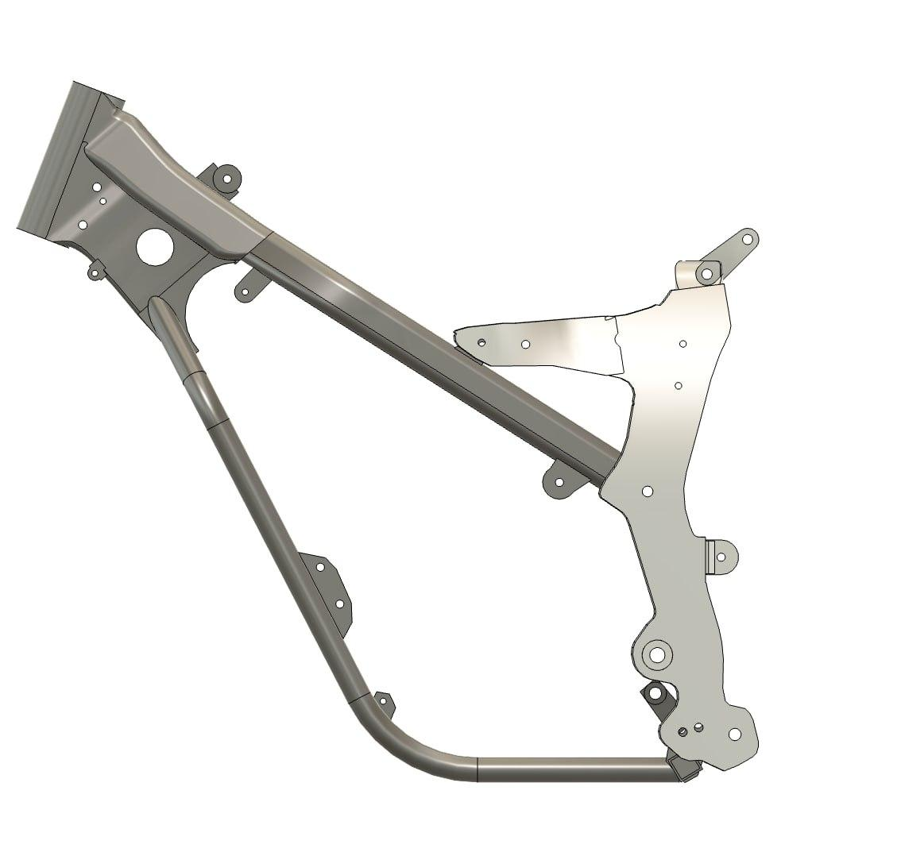
Figure E.5: Bare frame re-modelled in CAD from the scanned mesh.
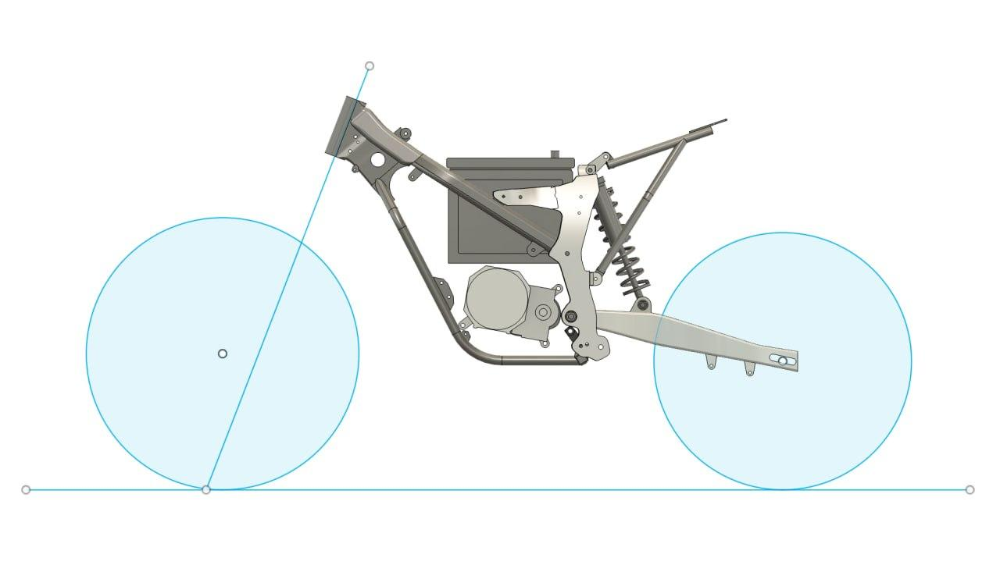
Figure E.6: Re-modelled frame placed between the wheel positions and the ground line to check the wheelbase and overall geometry.
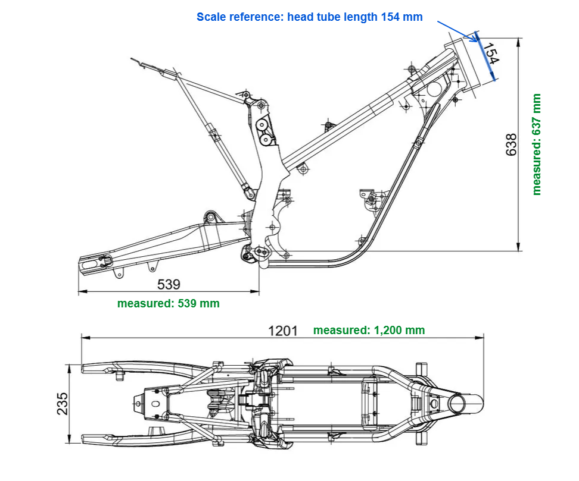
Figure E.7: Scale check of the TYE3000 chassis drawing (Qingdao Edge Power Technology, n.d.-b). The drawing was scaled to 1:1 using the 154 mm head tube length (blue), and the dimensions measured from the scaled drawing (green) agree with the labelled values to within 1 mm.
E.1.6 Mounting Points and Model Accuracy
The main output of the CAD model is the set of mounting points that the new frame must keep. As explained in Section E.1.2, these are fixed by the bought-in parts: the steering head, swingarm pivot and rear shock mount (Figure 4.2). Their positions were measured from the scanned meshes and carried into the CAD model, where they define the fixed interfaces for the frame redesign. The accuracy of these positions, and of the model as a whole, is limited by the following:
●When checked against the scaled drawing, the key mounting holes in the model were within about 1~2 mm of their positions on the drawing.
●Overall dimensions also differed from the scaled drawing by up to about 5 mm. This error comes mainly from the manual alignment of the partial scans rather than from the scanner itself: at the rated volumetric accuracy of 0.3 mm/m, the scanner error over the 1.42 m wheelbase would be under 0.5 mm (Shining 3D, n.d.). In addition, measuring from an enlarged drawing also adds some error, since its accuracy is limited by the line thickness and resolution of the image. Since part of the 5 mm difference may come from the drawing rather than the model, the actual error of the scanned model may be smaller than this.
●Since a scanner only captures outer surfaces, the main frame tube wall thickness could not be measured directly. Instead, it was found by trial and error: the wall thickness in the CAD model was changed until the mass calculated in Autodesk Fusion 360 is close to the measured mass of the main frame, 8.61 kg. This gave a wall thickness of 3 to 4 mm, at which the model weighed 8.39 kg, about 2.5 % below the measured mass. The small remaining difference is likely due to the welds, paint and small brackets that were not modelled.
Figure E.8: Mass check used to estimate the tube wall thickness: (a) the physical frame weighed on a Sartorius CP34001S scale, reading 8,605.7 g; (b) mass of the CAD model at 3 to 4 mm wall thickness, calculated in Autodesk Inventor as 8.39 kg.
These limitations have a very low effect on the FEA. The 5 mm uncertainty in overall dimensions has a small effect, as it only shifts slightly where the loads are applied. With these limitations noted, the mounting point positions are carried into the frame redesign and the FEA in Section 5 as the fixed interfaces that the new frame must keep.
Although the 3D-scanned CAD model of the existing frame (Section E.1) gives a complete digital reference, its key dimensions were still measured and checked against the scaled TYE3000 supplier drawing and the physical bike before being used to constrain the redesign. The scanner itself is accurate, but the CAD model built from it is not a direct copy of the frame. The partial scans were aligned by hand, every tube was traced manually from the mesh, and the overall dimensions differed from the scaled TYE3000 drawing by up to about 5 mm (Section E.1.6). The redesign depends on only a small set of hard points: the rake angle, the wheelbase, the head tube length and the positions of the swingarm pivot and rear shock mounts. These fix where the carried-over fork, swingarm, rear shock and wheels sit. An error in any of them would carry into every candidate frame and into the FEA load points in Section 5 and could change the steering geometry and suspension behaviour that the redesign is meant to keep. Taking these values from the CAD model and comparing them with the scaled TYE3000 drawing and the physical bike therefore confirms that the model is correct where it matters most. It also reduces the full scanned geometry to a short list of verified dimensions (Table 4.1) that every design option can be checked against.
The redesign retains the suspension, powertrain and steering components of the donor “Red Dot” electric dirt bike (Figure E.9), so only the main frame is replaced. The baseline geometry was first established from the scaled TYE3000 supplier drawing (Figure E.1) and from direct measurement of the physical bike. The key dimensions were annotated in sketch form before any CAD modelling began (Figures E.10-E.12).
Figure E.9: Donor Red Dot electric dirt bike used as the design baseline.
Figure E.10: Red Dot side-view layout showing the 21° rake angle, the 1420 mm wheelbase and the tyre sizes.
Figure E.11: Front view of the stacked battery and motor arrangement within the Red Dot frame.
Figure E.12: Red Dot overall frame dimensions: (a) side view showing head tube length, frame height and swingarm length; (b) top view showing frame length and width.
The overall envelope sets the dimensional reference for the new frame. The head tube length (154 mm) is retained exactly. The frame height (638 mm) and length (1201 mm) are held as closely as packaging allows.
E.2.3 Suspension Hard Points
The steering and rear suspension hard points matter more than the overall envelope (Figure E.13). These are the 21° rake angle, the 583.96 mm distance from the head tube to the rear shock top mount, and the 833.96 mm distance from the rear shock mount to the base of the head tube. All candidate frames are constrained to these points. As a result, the carried-over front fork, rear shock and swingarm sit at almost the same positions as on the Red Dot, and the ride and handling characteristics of the donor bike are kept.
Figure E.13: Key suspension hard-point geometry (rake angle, head-tube-to-shock-mount distances and rear shock length) held constant across all design options.
The components in Table 4.2 are reused without modification. Their critical dimensions (Figures E.14-E.16) were recorded so that they could be modelled accurately and inserted into each candidate frame to verify fitment.
Figure E.14: Carried-over suspension components: (a) rear shock; (b) swingarm.
Figure E.15: Carried-over front fork suspension, showing spring rate and travel.
Figure E.16: Carried-over powertrain envelopes: (a) battery; (b) motor, with mounting hole positions.
Appendix F: Frame Design Development - Detail
The Stark Varg was selected as the single-cradle benchmark (Figure F.1). Stark’s design depends on a patented battery and motor package developed together with the frame. The powertrain is shaped around the chassis, which gives the bike its slim, minimal profile. The aim of this option was to adapt the single-cradle concept to the bulkier, off-the-shelf Red Dot battery and motor.
Figure F.1: Stark Varg benchmark: (a) production motorcycle; (b) chassis.
The Stark frame was re-modelled from a reference 3D model to extract its rake angle and steering geometry (Figure F.2). The comparison with the Red Dot is summarised in Table F.1. The Stark frame is 46 mm taller and 184 mm shorter, and has a rake 6.3° larger.
Table F.1: Stark Varg and Red Dot frame comparison
Parameter | Stark Varg | Red Dot |
Rake angle | 27.3° | 21° |
Head tube length | 145 mm | 154 mm |
Frame height | 684.4 mm | 638 mm |
Frame length | 1017.6 mm | 1201 mm |
Frame width | 235.6 mm | 235 mm |
Figure F.2: Stark Varg reference geometry: (a) side layout with integrated powertrain and 27.3° rake; (b) side-view dimensions; (c) top-view dimensions.
A preliminary packaging study was first carried out in sketch form (Figure F.3). It identified two constraints on fitting the Red Dot powertrain inside the unmodified Stark frame:
1.To clear the spine, the battery and motor must sit too low in the frame.
2.At the intended mounting height, the spine occupies the space required by the battery.
Figure F.3: Preliminary packaging study of the Red Dot battery and motor in the Stark frame: (a) components to be fitted; (b) low placement required for clearance; (c) battery obstructed by the spine at the intended height.
Both constraints were confirmed in CAD. In the low configuration (Figure F.4), the battery and motor fit within the frame but sit well below their intended positions, which is unacceptable for ground clearance and mass distribution. At the intended height (Figure F.5), the single spine and steering neck intersect the battery volume. Because the Stark chassis relies on its proprietary, stressed-member powertrain, the unmodified single-cradle architecture cannot accommodate the Red Dot components.
Figure F.4: CAD packaging check (low placement): the battery and motor fit beneath the spine but sit too low. (a) side; (b) isometric; (c) front.
Figure F.5: CAD packaging check (intended height): the single spine and neck obstruct the battery. (a) side; (b) isometric; (c) front.
The Stark frame was redesigned to accept the carried-over components with proper mounting points while preserving the Red Dot hard points (Figure F.6). The modifications are summarised below.
Figure F.6: Basis of the redesign: the Stark frame layout combined with the Red Dot key hard-point geometry.
•Rake angle. The rake was reduced from 27.3° to 21° to match the Red Dot (Figure F.7). This retains the steering behaviour that the carried-over fork was set up for.
•Hybrid spine (neck redesign). The frame is single-spine at the head tube and then splits into twin spars. The split clears the battery so it can sit at its intended height without obstruction from the neck (Figure F.8).
•Lower spar redesign. Steering lock is limited by contact between the fork assembly and the lower spars. After the rake change, the lower spars were narrowed relative to the original Stark layout to restore steering-lock clearance without tyre contact (Figure F.9).
•Lower cradle routing. The lower cradle runs beneath the battery and motor instead of wrapping around them laterally. This keeps the overall frame width down.
•Subframe and mounts. The subframe was simplified and redesigned so that the carried-over rear shock and mounts fit. Motor mounts and battery enclosure fixtures were then built around the inserted components, with clearance kept for removal (Figure F.10).
Figure F.7: Rake angle reduced from 27.3° (Stark) to 21° (Red Dot).
Figure F.8: Neck redesign (top view): transition from a single spine to split twin spars to clear the battery.
Figure F.9: Lower spar redesign (front view): narrowed spar layout to preserve steering lock.
Figure F.10: Subframe redesign and lower cradle routed beneath the battery and motor.
Figure F.11 compares the original and redesigned frames. The assembled chassis with all carried-over components is shown in Figure 4.3.
Figure F.11: Stark frame before and after redesign: (a) top view, original; (b) top view, redesigned; (c) front view, original; (d) front view, redesigned; (e) side view, original; (f) side view, redesigned.
The Dirt Goat 104 was selected as the double-cradle benchmark (Figure F.12) because its chassis is simple. It is made largely of straight members with no complex geometry, and the frame is one continuous welded structure. The frame fully encloses the battery and motor, which protects both, and the battery is removed by lifting it vertically (Figure F.13).
Figure F.12: Dirt Goat 104 electric dirt bike used as the double-cradle benchmark.
Figure F.13: Dirt Goat 104 frame: (a) single-piece double-cradle layout; (b) top-access battery bay allowing vertical removal.
The benchmark frame was simplified further for manufacture. Curved and angled sections were replaced with straight members, and the main frame and subframe were combined into one continuous structure (Figure F.14). The frame width was set to suit the battery and motor envelopes.
Figure F.14: Simplified double-cradle concept with the main frame (blue) and subframe (red) combined into one body: (a) side view; (b) top view; (c) front view.
The battery and motor were then placed inside the concept frame, and the mounting interfaces were developed around them (Figure F.15):
•Rear motor mount: the carried-over Red Dot C-bracket is reused.
•Front motor mount: a bolt-on lower hanging cradle supports the lower front of the motor and carries the associated shear loads.
•Battery: a dedicated battery tray provides a rigid mounting interface.
Figure F.15: Motor and battery mounting concept: battery tray and lower hanging motor cradle (side and dimetric views).
The concept was then checked against the Red Dot key hard points so that the carried-over components would assemble correctly (Figure F.16).
Figure F.16: Verification of the Option B layout against the Red Dot key hard-point geometry.
The main frame body was modelled in CAD (Figure F.17), and the lower hanging cradle was integrated as the front motor mount (Figure F.18). The battery and motor were installed to confirm packaging and component integration (Figure F.19).
Figure F.17: Option B main frame CAD model (side, top and isometric views).
Figure F.18: Integration of the lower hanging cradle for front motor mounting.
Figure F.19: Battery and motor installed in the Option B frame: (a) side view; (b) isometric view.
Both the battery and the motor can be removed without dismantling the chassis (Figure F.20):
1.Battery: lifted vertically out of the frame, with no fasteners or frame members obstructing it.
2.Motor: the lower hanging cradle is unbolted and lowered, the motor mounting bolts are then removed, and the motor is withdrawn downward and out of the frame.
This removal sequence supports routine maintenance and component replacement without major disassembly.
Figure F.20: Battery and motor removal sequence: (a) removal directions; (b) isometric view of the removal sequence.
Appendix G: FEA Assumptions, Applied Loads and Results of All 28 Studies
In the structural validation of motor vehicle chassis and frame architectures, engineers must choose between two primary computational methodologies: dynamic transient explicit analysis and equivalent static (pseudo-static) load analysis. For the structural evaluation of this electric trail motorcycle conversion, Pseudo-Static Load Analysis using Equivalent Static Load Factors (ESLF) was selected as the core analytical framework. This decision is grounded in several principles of structural mechanics and computational efficiency:
●Computational efficiency and accelerated design iteration: Explicit dynamic transient FEA requires integrating non-linear equations of motion over very small time increments (microseconds) to capture stress-wave propagation, contact interactions and material damping. This demands substantial computational resources and run times. In contrast, pseudo-static analysis converts transient peak kinetic-energy states into equivalent steady-state force vectors. This enables rapid, repeatable solving across multiple geometric configurations (single versus double cradle) and material selections (Aluminium 6061-T6 versus AISI 4130 steel) without sacrificing structural fidelity at the level of the primary load paths.
●Peak-force loading: Transient dynamic impacts exhibit instantaneous peak forces that decay rapidly due to damping and structural compliance. By capturing the theoretical peak dynamic force and applying it as a sustained static load, the pseudo-static method develops the full static stress of the peak force. Dynamic amplification is not captured, so the results are representative rather than bounding (Section 6.1).
●Focus on structural yielding and primary load paths: The primary goal of the frame FEA is to prevent plastic deformation at high-stress geometric junctions, specifically the steering head tube, swingarm pivot, motor-mounting C-brackets and shock-absorber mounts. Pseudo-static equilibrium analysis isolates peak stress fields and the primary force-transfer paths across the main frame, avoiding the noise of transient stress waves through non-structural fairings or minor brackets.
To assess structural integrity across the expected operating envelope, a multi-variable test matrix was constructed combining four load cases, two operational scenarios, two frame geometries and two structural alloys.
1.At Rest (static baseline): Represents the gravitational equilibrium state of the motorcycle supporting the static mass of the rider, battery, electric motor and frame. It is the 1 g reference against which all impact load factors are measured.
2.Flat Landing (both wheels at the same time): Simulates a level touchdown in which both tyres contact the ground at the same instant. The kinetic energy is absorbed by both suspension systems, producing a predominantly vertical deceleration and maximum downward bending across the central frame.
3.Front Wheel Lands First (front-heavy impact): Simulates a pitch-down nose impact (e.g. a mistimed jump landing or a steep ledge drop). The whole impact reaction is initially carried by the front fork, creating bending moments and shear concentrated at the head tube, while the rider is thrown forward onto the handlebars.
4.Rear Wheel Lands First (rear-heavy landing): Simulates a pitch-up touchdown in which the rear wheel strikes first. The chassis decelerates and rotates about the rear contact, driving compressive loads through the swingarm pivot, shock mounts, footpegs and frame backbone.
●Scenario A - 1 m straight vertical drop (zero forward speed): Represents an unmitigated free-fall onto flat, horizontal ground. Gravitational potential energy (Ep = m·g·h) is converted into vertical kinetic energy (Ek = ½·m·Vz²), so the suspension and tyres must absorb the maximum normal impact velocity, Vz = 4.43 m/s.
●Scenario B - 1 m drop at 30 km/h onto a 15° downslope: Simulates realistic off-road riding. When a vehicle travelling at 30 km/h (8.33 m/s) drops 1 m onto a 15° landing ramp, its velocity vector (inclined at 28.0° below horizontal) is partially aligned with the slope. Resolving the velocity into slope-normal and slope-tangential components reduces the normal impact speed from 4.43 m/s to 2.12 m/s, which reduces the normal impact kinetic energy by approximately 77 %. Forward speed on a sloped landing therefore mitigates impact severity, while introducing tangential tyre drag forces.
●Single versus double cradle geometries: The single-cradle architecture uses one central backbone tube connecting the head tube to the main frame. This gives good side clearance but exposes the single tube to high torsional and bending stresses. The double-cradle configuration uses twin top tubes and twin down tubes that form closed side loops. The wider structural base increases torsional rigidity and distributes frontal impact forces across two load paths, reducing stress concentration at the head-tube junction.
●Aluminium 6061-T6 versus AISI 4130 steel: Aluminium 6061-T6 has a low density (2,700 kg/m³), giving a substantial weight saving, but has a lower yield strength (275 MPa), lower ultimate tensile strength and a modest elastic modulus (≈ 69 GPa). AISI 4130 (normalised) is much denser (7,850 kg/m³) but has a higher yield strength (435 MPa), higher ultimate tensile strength, a much higher elastic modulus (≈ 205 GPa) and better fatigue resistance.
●Main-frame focus: The main frame is the chassis that holds the seat, motor, battery and VCU together with its internal wiring, cables and lines. Although the whole frame assembly (including a stand-in fork tube) is simulated, data extraction and discussion are restricted to the main frame.
●No air resistance: Aerodynamic forces do not stress the primary frame members to a degree that could cause structural failure.
●Forward speed and drag: Scenario A has zero forward speed, so the tyres do not scrub across the ground and tyre drag is zero. In Scenario B, tyre drag is modelled as Fdrag = μ·N with μ = 0.10.
●Single impact: Only the first wheel touchdown is evaluated; the subsequent "second-wheel slap" after pitch rotation is not modelled.
●Rigid bodies: The motorcycle and 80 kg rider are treated as a single rigid sprung mass with two in-plane degrees of freedom (vertical bounce and pitch about the centre of gravity), following the in-plane model of Cossalter (2006, §5.6-5.7). The rider is braced on the motorcycle rather than acting as a flexible mass. The swingarm, footpegs, rear shock and front fork are treated as rigid links with 100 % load transfer.
●Zero initial pitch rate: The motorcycle is assumed to have no angular velocity at touchdown, so centripetal (ω²r) terms vanish and local accelerations follow from the translational and angular accelerations only.
●Full travel utilisation: 100 % of the 250 mm wheel travel (front fork; rear shock 84 mm × 2.98 leverage ratio) is used during the impact.
●Suspension efficiency (ηs): 0.70, representing a damped motocross strut between a pure spring (0.5) and a well-metered hydraulic damper (0.8).
●Tyre efficiency (ηt) and deflection (δ): ηt = 0.47 (standard pneumatic-tyre practice), with maximum tyre deflection set to 40 % of tyre section height (32 mm front, 39.6 mm rear) before rim contact. For the Scenario A impacts, this deflection at the calculated peak loads implies a tyre radial stiffness of 98-195 kN/m, consistent with the 100-350 kN/m range reported by Cossalter (2006, §2.5.6). In the lower-energy Scenario B cases the tyre would deflect less than this; recalculating with a 150 kN/m tyre raises the Scenario B ground reactions by only 1.5-2 %, so the simplification is retained.
●Rider pitch inertia: The rider's local pitch moment of inertia is taken as 3.2 kg·m² (radius of gyration ρ = 0.20 m). This is below the 0.23-0.28 m range reported by Cossalter (2006, Table 3-1). Using that range would increase the single-wheel impact reactions (Studies 1.3, 1.4, 2.3 and 2.4) by 3-11 %; it does not affect the flat-landing cases (Studies 1.2 and 2.2), which include the governing load case.
●Unsprung mass: Unsprung masses (wheels, tyres, brakes, lower fork legs and swingarm) are excluded from the energy calculation, in line with Cossalter's observation that the unsprung masses have little influence on the low-frequency in-plane motion of the sprung mass (2006, §5.7).
G.3.1 Load Case Derivation
The static-equivalent loads for each study were derived from the mass properties of the motorcycle and rider. Their full derivation is given in Appendix B. The vehicle was modelled as four lumped masses (rider, battery, motor and frame) totalling 139.06 kg, with a combined centre of gravity at (551.3, 943.6) mm and a pitch moment of inertia of 20.824 kg·m². Each peak ground reaction was found from an energy balance in which the impact energy at touchdown equals the work absorbed by the suspension and tyre, N = [½mVn² + mgn(S + d)]/(ηsS + ηtd), with ηs = 0.70 and ηt = 0.47 (Cossalter, 2006). For single-wheel impacts, an effective mass M(eff) = 1/(1/M + d²/I) was used. d’Alembert’s principle then converted the resulting accelerations into static-equivalent forces at each mounting point, plus a Linear Global Load for the frame’s own inertia. Two scenarios were analysed. Scenario A is a 1 m vertical drop onto flat ground, giving load factors of 6.89 g (flat landing), 2.30 g (front wheel first) and 5.66 g (rear wheel first). Scenario B is a 1 m drop onto a 15° downslope at 30 km/h, which reduces the normal impact energy by about 77 %.
Each study was solved as a linear static stress analysis in Autodesk Fusion 360 using the loads in Tables G.1 to G.7. Results are reported as von Mises stress, and the factor of safety against yield is FoS = σy/σmax, with σy = 275 MPa for Aluminium 6061-T6 and 435 MPa for AISI 4130 (normalised). Each result figure shows an isometric view followed by front, right, back and left orthographic views, with the maximum and minimum stresses probed in global coordinates (mm). The derivation of the applied loads is given in Appendix B, and further views of the re-modelled existing frame, whose hard points both designs retain, are given in Appendix A.
Figure G.1: Von Mises stress, Al 6061-T6 double-cradle frame, Study 1.1 (at rest, 1 g)
Table G.1: Applied loads, Study 1.1
Load name | Face | Fx (N) | Fy (N) | Fz (N) |
Seat | Seat pan top (Area ≈ 58,294 mm²) | 0 | 0 | -549 |
Battery | Battery bay floor top (Area ≈ 59,400 mm²) | 0 | 0 | -228 |
Lower M Mount (H1) | Lower C-bracket M10 hole, both sides | 0 | 0 | -46 |
Upper M Mount (H2) | Upper C-bracket M10 hole, both sides | 0 | 0 | -46 |
Front M Mount (H3) | Front cradle tab M10 holes, both sides | 0 | 0 | -89 |
Under 1 g static loading the frame is lightly stressed. The peak von Mises stress is 49.7 MPa and the minimum is 4.1 × 10⁻⁴ MPa, giving a factor of safety of 5.5 against yield. The highest stresses occur in the rear seat structure, where the seat-pan cross-member joins the two vertical rear posts and the seated-rider load (549 N) is transferred into the top tubes. The curved fork stand-in tube shows a moderate, uniform bending stress (≈ 15-20 MPa) from the front-axle reaction. The battery bay, lower cradle rails and motor-mount brackets remain below about 10 MPa. This study confirms the expected primary load path, seat → rear posts → top tubes and down tubes → head tube and swingarm pivot, and provides the 1 g reference against which the impact cases are compared.
Figure G.2: Von Mises stress, Al 6061-T6, Study 1.2 (1 m flat landing, n = 6.89 g): (a) isometric, (b) front, (c) right, (d) back, (e) left
Table G.2: Applied loads, Study 1.2
Load name | Face | Fx (N) | Fy (N) | Fz (N) |
Head tube - rider (50 % of rider) | Head tube top disc (Ø45 mm) | +68 | 0 | -2,669 |
Footpegs (50 % of rider, both pegs in one load) | Both peg tops | +68 | 0 | -2,669 |
Battery | Battery bay floor top | -39 | 0 | -1,591 |
Lower M Mount (H1) | Lower C-bracket hole | -16 | 0 | -323 |
Upper M Mount (H2) | Upper C-bracket hole | -16 | 0 | -323 |
Front M Mount (H3) | Front cradle tab holes | -31 | 0 | -624 |
Linear Global Load (m/s²) | Whole model | -2.0 | 0 | -69.2 |
Study 1.2 produces the highest stress of all the aluminium studies and is the governing load case. The peak von Mises stress is 237.1 MPa at (521.1, -126.0, 691.8) mm, on the right-hand side of the frame at the junction where the top tube meets the vertical rear post beneath the seat. The factor of safety is 1.16. The same junction on the left-hand side shows a near-identical contour, confirming the symmetry of the loading.
The front and back views show a clear bending pattern along both top tubes: stress is highest at their rear ends (green to yellow, ≈ 140-190 MPa) and decreases towards mid-span, with a second green band (≈ 120-140 MPa) where the top tubes enter the head tube. The curved fork stand-in tube shows green outer fibres and a blue neutral axis along its length, which is characteristic of bending under the 3,746 N front reaction. The down tubes, lower cradle rails, battery bay and motor-mount brackets remain predominantly blue (below ≈ 50 MPa), indicating that the vertical inertial loads are carried mainly by the top-tube-rear-post frame rather than the lower cradle. The minimum stress, 0.004 MPa at (940.0, 63.8, 637.9) mm, is on an unloaded bracket tab beneath the left down tube.
Figure G.3: Von Mises stress, Al 6061-T6, Study 1.3 (front wheel first, n = 2.30 g): (a) isometric, (b) front, (c) right, (d) back, (e) left
Table G.3: Applied loads, Study 1.3
Load name | Type and target | Fx (N) | Fy (N) | Fz (N) |
Head tube - fork reaction | Remote Force on the top and bottom head tube bores (Radius 23.50 mm), source location X 1571, Y 0, Z 33 mm | -1,326 | 0 | +2,845 |
Head tube - rider (100 % of rider) | Force on head tube top disc | +2,298 | 0 | -848 |
Battery | Battery bay floor top | -219 | 0 | -724 |
Lower M Mount (H1) | Lower C-bracket hole | -135 | 0 | -152 |
Upper M Mount (H2) | Upper C-bracket hole | -135 | 0 | -152 |
Front M Mount (H3) | Front cradle tab holes | -261 | 0 | -294 |
Linear Global Load (m/s²) | Whole model | -12.8 | 0 | -38.8 |
The peak von Mises stress is 104.2 MPa at (1,114.7, 8.8, 853.0) mm, at the base of the head tube where the fork stand-in enters the lower steering-bearing seat and the remote fork reaction is introduced. The factor of safety is 2.64.
The stress field is concentrated at the front of the frame. The fork stand-in tube carries the highest stresses along its full length (green to yellow, ≈ 60-85 MPa), with a blue neutral axis indicating bending under the inclined fork reaction. The front ends of the top tubes and down tubes, where they join the head tube, show cyan contours (≈ 20-40 MPa) as they carry the head-tube moment back into the frame. The rear posts, seat pan and lower cradle remain blue, which is consistent with the rider being entirely on the handlebars and the rear wheel being off the ground. The minimum stress, 0.001 MPa at (485.0, 291.5, 393.0) mm, is at the tip of the left footpeg, which carries no load in this case.
Figure G.4: Von Mises stress, Al 6061-T6, Study 1.4 (rear wheel first, n = 5.66 g): (a) isometric, (b) front, (c) right, (d) back, (e) left
Table G.4: Applied loads, Study 1.4
Load name | Face | Fx (N) | Fy (N) | Fz (N) |
Left footpeg | Left peg top | -1,777 | 0 | -2,442 |
Right footpeg | Right peg top | -1,777 | 0 | -2,442 |
Battery | Battery bay floor top | -63 | 0 | -894 |
Lower M Mount (H1) | Lower C-bracket hole | +86 | 0 | -175 |
Upper M Mount (H2) | Upper C-bracket hole | +86 | 0 | -175 |
Front M Mount (H3) | Front cradle tab holes | +167 | 0 | -339 |
Linear Global Load (m/s²) | Whole model | +0.9 | 0 | -30.3 |
The peak von Mises stress is 115.7 MPa at (521.6, -111.5, 366.6) mm, at the lower rear corner of the right-hand cradle where the footpeg bracket is bolted to the frame (bracket bolts at x = 505 and 521 mm). The factor of safety is 2.38.
The stress field is concentrated around the footpeg mounts and rear posts, which carry the full rider load (2 × 3,020 N resultant) under the rear-first impact. The right and left views show cyan to green contours (≈ 30-60 MPa) at both footpeg-bracket mountings and up the lower half of the rear posts, with a matching contour at the corresponding left-hand location. The top tubes show light cyan bending contours, while the head tube, fork stand-in and front of the frame remain blue. The minimum stress, 5.7 × 10⁻⁴ MPa at (1,425.2, -44.1, 339.3) mm, is at the front-axle end of the fork stand-in, which is unloaded because the front wheel is off the ground. The footpeg-bracket junction is therefore the critical detail for rear-first landings.
Figure G.5: Von Mises stress, Al 6061-T6, Study 2.2 (flat landing on 15° slope, n = 2.68 g): (a) isometric, (b) front, (c) right, (d) back, (e) left
Table G.5: Applied loads, Study 2.2
Load name | Face | Fx (N) | Fy (N) | Fz (N) |
Head tube - rider (50 % of rider) | Head tube top disc (Ø45 mm) | -37 | 0 | -1,125 |
Footpegs (50 % of rider, both pegs in one load) | Both peg tops | -37 | 0 | -1,125 |
Battery | Battery bay floor top face | +143 | 0 | -564 |
Lower M Mount (H1) | Lower C-bracket M10 hole, both sides | +46 | 0 | -113 |
Upper M Mount (H2) | Upper C-bracket M10 hole, both sides | +46 | 0 | -113 |
Front M Mount (H3) | Front cradle tab M10 holes, both sides | +88 | 0 | -219 |
Front drag | Front axle hole wall | -144 | 0 | 0 |
Linear Global Load (m/s²) | Whole model | +6.8 | 0 | -22.9 |
The peak von Mises stress is 124.5 MPa at (522.1, -126.0, 692.3) mm, at the same top-tube-rear-post junction that governs Study 1.2. The factor of safety is 2.21.
The stress distribution has the same pattern as the level flat landing but at about 53 % of its magnitude, consistent with the reduced load factor (2.68 g versus 6.89 g) offset partly by the front-tyre drag. Green bands (≈ 75-100 MPa) appear at the rear ends of both top tubes and where the top tubes enter the head tube. The fork stand-in tube shows a stronger bending contour (green, ≈ 75-90 MPa) than its load share alone would suggest, because the 144 N rearward drag at the front axle acts on a long lever arm to the head tube. The down tubes, battery bay and lower cradle remain blue. The minimum stress, 0.001 MPa at (940.0, -60.0, 642.9) mm, is on the unloaded bracket tab beneath the right down tube.
Figure G.6: Von Mises stress, Al 6061-T6, Study 2.3 (front wheel first on 15° slope, n = 0.64 g): (a) isometric, (b) front, (c) right, (d) back, (e) left
Table G.6: Applied loads, Study 2.3
Load name | Type and target | Fx (N) | Fy (N) | Fz (N) |
Head tube - fork reaction | Remote Force on the top and bottom head tube bores, source location X 1514, Y 0, Z 12 mm | -308 | 0 | +815 |
Head tube - rider (100 % of rider) | Force on head tube top disc | +629 | 0 | -237 |
Battery | Battery bay floor top | -78 | 0 | -210 |
Lower M Mount (H1) | Lower C-bracket hole | -43 | 0 | -44 |
Upper M Mount (H2) | Upper C-bracket hole | -43 | 0 | -44 |
Front M Mount (H3) | Front cradle tab holes | -82 | 0 | -85 |
Linear Global Load (m/s²) | Whole model | -4.3 | 0 | -11.2 |
This is the least severe of the impact studies. The peak von Mises stress is only 6.2 MPa at (864.2, -64.0, 620.1) mm, at the right-hand front support strut of the battery bay, close to the front battery-tray mounting. The factor of safety is approximately 44. This result is one of the six later flagged by the linearity check; it is excluded from the design decision and scheduled for re-running in Semester 2 (Section H.1.3).
With a load factor of only 0.64 g, the whole frame lies in the lower part of a 0-6.2 MPa scale. The relatively highest contours (green to yellow) are on the inclined struts that support the front of the battery bay and on the battery-bay floor, which carry the forward inertial load of the battery (-78 N) and motor. The head tube, top tubes and down tubes show light cyan contours, and the fork stand-in, rear posts and seat structure are blue. The minimum stress, 1.6 × 10⁻⁴ MPa at (1,444.8, 50.0, 355.3) mm, is at the front-axle end of the fork stand-in.
Figure G.7: Von Mises stress, Al 6061-T6, Study 2.4 (rear wheel first on 15° slope, n = 1.43 g): (a) isometric, (b) front, (c) right, (d) back, (e) left
Table G.7: Applied loads, Study 2.4
Load name | Face | Fx (N) | Fy (N) | Fz (N) |
Left footpeg | Left peg top | -517 | 0 | -777 |
Right footpeg | Right peg top | -517 | 0 | -777 |
Battery | Battery bay floor top | +191 | 0 | -185 |
Lower M Mount (H1) | Lower C-bracket hole | +89 | 0 | -35 |
Upper M Mount (H2) | Upper C-bracket hole | +89 | 0 | -35 |
Front M Mount (H3) | Front cradle tab holes | +172 | 0 | -67 |
Linear Global Load (m/s²) | Whole model | +10.1 | 0 | -3.8 |
The peak von Mises stress is 37.4 MPa at (538.1, -141.5, 385.0) mm, on the right-hand side at the lower edge of the swingarm-pivot plate, just below the pivot (x = 538 mm, z = 442 mm) and adjacent to the footpeg mounting. The factor of safety is 7.4.
The stress pattern mirrors Study 1.4 at about one-third of its magnitude: both footpeg-bracket mountings and the lower rear cradle show cyan to green contours (≈ 15-30 MPa), and the inner vertical members of the battery-bay cage show green bands (≈ 20-25 MPa) in the right view as they carry the forward-acting battery and motor inertial loads (+191 N and +351 N). The top tubes show light cyan contours, and the head tube and fork stand-in are blue. The minimum stress, 1.8 × 10⁻⁴ MPa at (1,424.0, -50.0, 333.6) mm, is at the unloaded front-axle end of the fork stand-in.
Table G.8: Summary of results, Al 6061-T6 double-cradle frame (σy = 275 MPa)
Study | Load case | n (g) | σmax (MPa) | Location of σmax | FoS |
1.1 | At rest | 1.00 | 49.7 | Seat-pan cross-member / rear-post junction | 5.5 |
1.2 | Flat landing | 6.89 | 237.1 | Top tube / rear post, right (521, -126, 692) | 1.16 |
1.3 | Front first | 2.30 | 104.2 | Head-tube base / lower bearing (1,115, 9, 853) | 2.64 |
1.4 | Rear first | 5.66 | 115.7 | Footpeg bracket / lower rear cradle, right (522, -112, 367) | 2.38 |
2.2 | Slope, flat | 2.68 | 124.5 | Top tube / rear post, right (522, -126, 692) | 2.21 |
2.3 | Slope, front first | 0.64 | 6.2 | Battery-bay front strut, right (864, -64, 620) | 44 |
2.4 | Slope, rear first | 1.43 | 37.4 | Swingarm-pivot plate, right (538, -142, 385) | 7.4 |
All aluminium studies remain below yield. The governing case is the 1 m flat landing (Study 1.2), where the top-tube-rear-post junction reaches 86 % of the yield strength (FoS 1.16). The rear-first and front-first cases load different details (the footpeg-bracket junction and the head-tube base respectively), so the frame has three distinct critical regions. Landing on a 15° downslope at 30 km/h reduces the peak stress by 47-94 % relative to the corresponding flat-ground case.
The steel studies use the same geometry, constraints and applied loads as the aluminium studies (Tables G.1 to G.7); only the material assignment is changed. This load-matched approach isolates the effect of the material, so any difference in the results can be attributed to the material properties alone. The mapping is summarised in Table G.9.
Table G.9: Load inputs for the AISI 4130 studies
Steel study | Load case | Applied loads |
1.1 | At rest | As Table G.1 (Study 1.1, aluminium) |
1.2 | Flat landing | As Table G.2 |
1.3 | Front wheel first | As Table G.3 |
1.4 | Rear wheel first | As Table G.4 |
2.2 | Slope, flat landing | As Table G.5 |
2.3 | Slope, front first | As Table G.6 |
2.4 | Slope, rear first | As Table G.7 |
Two consequences of this approach should be noted when interpreting the results:
1.The frame's own inertia is captured automatically. The Linear Global Load is an acceleration, which Fusion 360 multiplies by the element density. The steel frame (≈ 50.5 kg, compared with 17.36 kg in aluminium) therefore receives about 2.9 times the self-weight and inertial load of the aluminium frame in every study. In a linear elastic model of a single material, stresses produced by applied forces do not depend on the elastic modulus, so the difference in stress between the two materials comes mainly from this extra frame inertia (with a minor contribution from Poisson's ratio). The higher modulus of steel reduces deflection by a factor of about 3, but not stress.
2.The external loads are not re-derived for a heavier vehicle. A steel-framed motorcycle would weigh 172.2 kg instead of 139.1 kg, which would move the CG forward and downward and raise the pitch inertia to 30.2 kg·m². Repeating the derivation of Section G.3 with these properties (Table G.10) changes the applied loads by less than 3.5 % in the two flat-landing cases. In the single-wheel cases, the effective mass rises, so the wheel and fork reactions would increase by 13-48 % and the rider handlebar load by 14-18 %, while the battery and motor loads would fall by 4-15 %. The steel results for Studies 1.3, 1.4, 2.3 and 2.4 should therefore be read as a material comparison under identical events, not as the absolute design loads of a steel-framed motorcycle.
Table G.10: Sensitivity of the applied loads to a steel frame (loads recalculated with M = 172.2 kg, I = 30.2 kg·m²)
Study | Load factor n (Al → steel) | Wheel / fork reaction | Rider load | Battery | Motor (H1-H3) |
1.2 | 6.89 → 6.90 | applied by constraints | -0.1 % | -0.5 % | -0.5 % |
1.3 | 2.30 → 2.65 | +42.5 % | +14.4 % | -6.2 % | -12.0 % |
1.4 | 5.66 → 5.15 | +12.8 % (by constraint) | +0.7 % | -0.3 % | -4.3 % |
2.2 | 2.68 → 2.68 | applied by constraints | +0.6 % | +2.5 % | +0.9 % |
2.3 | 0.64 → 0.76 | +47.9 % | +18.2 % | -4.0 % | -9.1 % |
2.4 | 1.43 → 1.35 | +16.6 % (by constraint) | +3.2 % | -5.3 % | -15.4 % |
Figure G.8: Von Mises stress, AISI 4130 double-cradle frame, Study 1.1 (at rest, 1 g; loads as Table G.1)
The peak von Mises stress is 61.8 MPa and the minimum is 4.3 × 10⁻⁴ MPa, giving a factor of safety of 7.0. The stress distribution is the same as for aluminium (Figure G.1), with the highest contours at the junction of the seat-pan cross-member and the rear posts and a uniform bending contour along the fork stand-in. The peak is 24 % higher than in aluminium because the steel frame's self-weight (495 N) is 2.9 times that of the aluminium frame (170 N), while the applied component loads are identical.
Figure G.9: Von Mises stress, AISI 4130, Study 1.2 (1 m flat landing; loads as Table G.2): (a) isometric, (b) front, (c) right, (d) back, (e) left
The peak von Mises stress is 350.2 MPa at (521.1, -126.0, 691.8) mm, at exactly the same top-tube-rear-post junction as in aluminium. The factor of safety is 1.24. The stress pattern matches Figure G.2: high bending stresses at the rear ends of both top tubes (yellow to orange), green bands where the top tubes meet the head tube, and a strong bending contour along the fork stand-in. The peak is 48 % higher than in aluminium. With identical applied loads, this increase comes from the frame's own inertial load under the 69.2 m/s² LGL, which rises from about 1.2 kN in aluminium to about 3.5 kN in steel. The minimum stress, 0.005 MPa at (938.3, 69.6, 637.9) mm, is on the unloaded bracket tab beneath the left down tube.
Figure G.10: Von Mises stress, AISI 4130, Study 1.3 (front wheel first; loads as Table G.3)
The peak von Mises stress is 205.4 MPa and the minimum is 0.002 MPa. The factor of safety is 2.12. As in aluminium, the stress is concentrated in the front of the frame: the fork stand-in tube carries the highest stresses, with yellow-to-red contours over its lower half towards the front axle, and the head-tube junctions with the top and down tubes show cyan to green contours. The rear posts, seat pan and lower cradle remain blue. The higher peak than aluminium (104.2 MPa) again reflects the larger frame inertial load under the same applied forces.
Figure G.11: Von Mises stress, AISI 4130, Study 1.4 (rear wheel first; loads as Table G.4): (a) isometric, (b) front, (c) right, (d) back, (e) left
The peak von Mises stress is 135.7 MPa at (521.6, -111.5, 366.6) mm, at the same right-hand footpeg-bracket junction on the lower rear cradle as in aluminium. The factor of safety is 3.21. The distribution matches Figure G.4: cyan to green contours at both footpeg mountings and the lower rear posts, light cyan bending in the top tubes, and a blue front end. The minimum stress, 0.002 MPa at (1,427.3, -47.0, 336.4) mm, is at the unloaded front-axle end of the fork stand-in. The peak is 17 % higher than in aluminium, a smaller increase than in Study 1.2 because the LGL in this study is less than half as large (30.3 m/s²).
Figure G.12: Von Mises stress, AISI 4130, Study 2.2 (flat landing on 15° slope; loads as Table G.5)
The peak von Mises stress is 162.0 MPa and the minimum is 0.001 MPa. The factor of safety is 2.69. The isometric view shows the same pattern as aluminium Study 2.2: green to yellow bands at the rear ends of the top tubes and at the top-tube-head-tube junctions, and a green bending contour along the fork stand-in driven by the front-tyre drag. The battery bay and lower cradle remain blue. The peak is 30 % higher than in aluminium (124.5 MPa).
Figure G.13: Von Mises stress, AISI 4130, Study 2.3 (front wheel first on 15° slope; loads as Table G.6)
The peak von Mises stress is 12.4 MPa and the minimum is 4.6 × 10⁻⁴ MPa. The factor of safety is approximately 35. As in aluminium, the highest relative contours lie on the battery-bay floor and its front support struts, with light cyan contours on the top tubes and around the head tube; the fork stand-in and rear structure are blue. The peak is double the aluminium value (6.2 MPa), reflecting the larger share of frame inertia in this lightly loaded case. This result is one of the six later flagged by the linearity check; it is excluded from the design decision and scheduled for re-running in Semester 2 (Section H.1.3).
Figure G.14: Von Mises stress, AISI 4130, Study 2.4 (rear wheel first on 15° slope; loads as Table G.7)
The peak von Mises stress is 38.5 MPa and the minimum is 3.6 × 10⁻⁴ MPa. The factor of safety is approximately 11. The isometric view shows cyan contours on the lower rear cradle around the footpeg and swingarm-pivot mountings and along the top tubes, with a blue front end, matching the aluminium result (37.4 MPa) closely. The near-equal peaks indicate that the forward-acting LGL (+10.1, -3.8 m/s²) adds little stress at the critical rear detail, which is governed by the identical footpeg loads.
Table G.11: Peak von Mises stress and factor of safety, Al 6061-T6 versus AISI 4130 (identical applied loads)
Study | Load case | Al σmax (MPa) | Al FoS (σy = 275) | Steel σmax (MPa) | Steel FoS (σy = 435) | Change in σmax |
1.1 | At rest | 49.7 | 5.5 | 61.8 | 7.0 | +24 % |
1.2 | Flat landing | 237.1 | 1.16 | 350.2 | 1.24 | +48 % |
1.3 | Front first | 104.2 | 2.64 | 205.4 | 2.12 | +97 % |
1.4 | Rear first | 115.7 | 2.38 | 135.7 | 3.21 | +17 % |
2.2 | Slope, flat | 124.5 | 2.21 | 162.0 | 2.69 | +30 % |
2.3 | Slope, front first | 6.2 | 44 | 12.4 | 35 | +100 % |
2.4 | Slope, rear first | 37.4 | 7.4 | 38.5 | 11 | +3 % |
Under identical applied loads, the steel frame develops 3-100 % higher peak stresses than the aluminium frame, because its own inertial load is 2.9 times larger. Its 58 % higher yield strength more than compensates in every case except the two front-first studies (1.3 and 2.3), where the larger share of frame inertia makes the factor of safety slightly lower in steel. In the governing flat-landing case, the steel frame gives a factor of safety of 1.24 against 1.16 for aluminium, at the cost of roughly 33 kg of additional frame mass (≈ 50.5 kg versus 17.4 kg). Because the single-wheel loads for a steel-framed vehicle would be higher than those applied here (Table G.10), the steel front-first margins should be regarded as upper bounds.
The second frame design is a single-cradle architecture. As described in Section F.1.3, the frame is single-spine at the head tube and then splits into twin spars that clear the battery, while the lower cradle runs beneath the battery and motor rather than around them. The frame was designed to fit the same rolling chassis and powertrain as the double-cradle frame, so the wheelbase (1,420 mm), head-tube angle (21°), swingarm pivot, shock mounts, battery bay and motor-mount positions are unchanged. Modelled in Al 6061-T6 with the same body set as the double-cradle frame (main frame including the fork stand-in tube, seat plate, footpegs and motor C-bracket), the single-cradle frame has a mass of 12.53 kg, 4.83 kg (27.8 %) lighter than the double cradle, with its centre of gravity at (779.4, 624.4) mm.
The frame is a different design, so the values entered in the simulation could in principle be slightly different, even though the rider, battery, motor and landing events are the same: the frame is part of the mass whose deceleration generates the loads in Section G.3. However, all the inputs that dominate the loads (the 80 kg rider, battery, motor, drop height, slope, suspension geometry and tyres) are identical. Repeating the derivation of Section G.3 with the single-cradle frame's mass properties changes the total ground reactions by only -2 % to -7 % (Table G.12), and the flat-landing load factors not at all.
The equivalent static loads derived in Section G.3 are therefore applied unchanged to the single-cradle frame, and only their points of application move to the corresponding features of the new frame. This keeps the comparison between the two frame designs load-matched: any difference in stress can be attributed to the frame geometry rather than to the inputs. Because the Linear Global Load is an acceleration field, Fusion 360 still applies the single-cradle frame's own (smaller) self-weight and inertia automatically.
Table G.12: Effect of re-deriving the Section G.3 loads with the single-cradle frame properties (not applied; for justification only)
Study | n, double cradle (applied) | n, single cradle (re-derived) | Change in total ground reaction |
1.2 Flat landing | 6.89 | 6.89 | -3.5 % |
1.3 Front first | 2.30 | 2.23 | -6.5 % |
1.4 Rear first | 5.66 | 5.74 | -2.2 % |
2.2 Slope, flat | 2.68 | 2.68 | -3.5 % |
2.3 Slope, front first | 0.64 | 0.61 | -6.9 % |
2.4 Slope, rear first | 1.43 | 1.45 | -2.6 % |
Since every re-derived ground reaction is lower, the applied Section G.3 loads are slightly conservative for the single-cradle frame.
Each load is applied to the face that carries the corresponding component in the real assembly. Table G.13 lists what each load represents, where it acts on the single-cradle frame, and how its position compares with the double-cradle frame (global axes: X forward from the rear axle, Y to the rider's left, Z up from the ground).
Table G.13: Load application points, single-cradle versus double-cradle frame
Load name | What it represents | Target face on the single-cradle frame | Location, single cradle (x, y, z) (mm) | Location, double cradle (x, y, z) (mm) | Difference |
Seat | Seated rider, 70 % of rider weight (Study 1.1) | Seat plate top face (3 mm plate), ≈ 38,697 mm², inclined 14.8° | (301.5, 0, 904.4) | (337, 0, 937); seat pan, ≈ 58,294 mm², inclined 7.5° | 36 mm rearward and 33 mm lower; 34 % smaller face |
Head tube - rider | Rider load transmitted through the handlebars and steering stem | Head tube top face, ≈ 693 mm² | (1,083.6, 0, 993.2) | (1,080, 0, 1,003) | 10 mm lower; smaller bearing face |
Head tube - fork reaction | Front-wheel ground reaction (Remote Force from the contact patch) | Upper and lower head-tube bores, radius 23.5 mm | (1,085.8, 0, 987.6) and (1,136.6, 0, 855.0) | Same | Unchanged (same steering geometry) |
Footpegs | Standing rider's weight through the legs | Top faces of the left and right footpegs | (504.8, ±192.2, 392.7) | (513, ±212, 394) | 8 mm rearward and 20 mm inboard |
Battery | Battery-pack inertia | Battery-bay floor top face, 59,400 mm² | (684.0, 0, 580.0) | Same | Unchanged |
Lower M Mount (H1) | Motor rear-lower mount, 25.45 % of motor load | Lower C-bracket M10 hole, both sides | (604.2, ±43, 373.0) | Same | Unchanged |
Upper M Mount (H2) | Motor rear-upper mount, 25.45 % of motor load | Upper C-bracket M10 hole, both sides | (570.2, ±43, 512.6) | Same | Unchanged |
Front M Mount (H3) | Motor front mount, 49.1 % of motor load | Front cradle tab M10 holes, both sides | (813.2, -37 / +45, 418.9) | (813.2, ±41, 418.9) | Unchanged |
Front drag | Front-tyre drag on the slope (Study 2.2) | Front axle hole wall, radius 7.5 mm | (1,424.0, 0, 346.7) | Same | Unchanged |
Linear Global Load | Frame self-weight and inertia | Whole model | - | - | Acts on a 12.53 kg frame instead of 17.36 kg |
The motor, battery, steering and axle load points are unchanged because the single-cradle frame retains the same mounting interfaces. Only the rider contact points (seat and footpegs) and the head-tube top face move, by up to 36 mm.
Each study was solved with the same constraints, mesh settings and results presentation as the double-cradle studies (Section G.4). The factor of safety is FoS = σy/σmax with σy = 275 MPa. As for the double-cradle frame, Study 2.1 is not solved separately; Study 1.1 is the 1 g baseline for both scenarios.
Figure G.15: Von Mises stress, Al 6061-T6 single-cradle frame, Study 1.1 (at rest, 1 g)
Table G.14: Applied loads, single-cradle Study 1.1
Load name | Face | Fx (N) | Fy (N) | Fz (N) |
Seat | Seat plate top (Area ≈ 38,697 mm²) | 0 | 0 | -549 |
Battery | Battery bay floor top (Area ≈ 59,400 mm²) | 0 | 0 | -228 |
Lower M Mount (H1) | Lower C-bracket M10 hole, both sides | 0 | 0 | -46 |
Upper M Mount (H2) | Upper C-bracket M10 hole, both sides | 0 | 0 | -46 |
Front M Mount (H3) | Front cradle tab M10 holes, both sides | 0 | 0 | -89 |
The peak von Mises stress is 118.9 MPa at (560.3, -105.5, 340.0) mm, at the lower rear corner of the right-hand cradle rail where it joins the swingarm-pivot plate. The minimum, 1.4 × 10⁻⁴ MPa at (504.8, 271.5, 373.7) mm, is at the tip of the unloaded left footpeg. The factor of safety is 2.31.
Apart from the lower rear corner, the frame is lightly stressed: the backbone, seat rails and the junctions around the seat-plate support show cyan contours (≈ 20-45 MPa), and the battery bay, down tube and fork stand-in remain mostly blue. The peak is 2.4 times that of the double-cradle frame at rest (49.7 MPa), even though the applied loads are identical and the frame is lighter. The seat and battery loads now reach the lower structure through a single backbone and one pair of rails, so the lower rear corner collects load that the double cradle shared between two upper load paths.
Figure G.16: Von Mises stress, Al 6061-T6 single-cradle frame, Study 1.2 (1 m flat landing, n = 6.89 g): (a) isometric, (b) front, (c) right, (d) back, (e) left
Table G.15: Applied loads, single-cradle Study 1.2
Load name | Face | Fx (N) | Fy (N) | Fz (N) |
Head tube - rider (50 % of rider) | Head tube top face (≈ 693 mm²) | +68 | 0 | -2,669 |
Footpegs (50 % of rider, both pegs in one load) | Both peg tops | +68 | 0 | -2,669 |
Battery | Battery bay floor top | -39 | 0 | -1,591 |
Lower M Mount (H1) | Lower C-bracket hole | -16 | 0 | -323 |
Upper M Mount (H2) | Upper C-bracket hole | -16 | 0 | -323 |
Front M Mount (H3) | Front cradle tab holes | -31 | 0 | -624 |
Linear Global Load (m/s²) | Whole model | -2.0 | 0 | -69.2 |
Study 1.2 is the governing case for the aluminium single-cradle frame. The peak von Mises stress is 357.8 MPa at (943.0, -0.9, 844.5) mm, on the upper surface of the single backbone tube at the section change about 150 mm behind the head tube. This exceeds the 275 MPa yield strength (FoS 0.77), so local plastic deformation of the backbone is predicted for a 1 m flat landing.
The front and back views show the backbone working as the frame's main bending member: a green-to-yellow band runs along its upper surface from the head tube to the section change, where the contours peak. The single down tube shows cyan to green contours along its upper half, and the curved fork stand-in shows green outer fibres with a blue neutral axis, characteristic of bending under the front reaction. The rear subframe, seat rails and battery bay remain predominantly blue. The minimum stress, 0.003 MPa at (896.0, -70.0, 669.0) mm, is on the unloaded battery-bay front support tab.
Compared with the double-cradle frame (237.1 MPa), the peak is 51 % higher. Without the second upper tube of the double cradle, the head-tube rider load and the frame's vertical inertia must be carried in bending by one backbone of the same section.
Figure G.17: Von Mises stress, Al 6061-T6 single-cradle frame, Study 1.3 (front wheel first, n = 2.30 g): (a) isometric, (b) front, (c) right, (d) back, (e) left
Table G.16: Applied loads, single-cradle Study 1.3
Load name | Type and target | Fx (N) | Fy (N) | Fz (N) |
Head tube - fork reaction | Remote Force on the top and bottom head tube bores (Radius 23.50 mm), source location X 1571, Y 0, Z 33 mm | -1,326 | 0 | +2,845 |
Head tube - rider (100 % of rider) | Force on head tube top face | +2,298 | 0 | -848 |
Battery | Battery bay floor top | -219 | 0 | -724 |
Lower M Mount (H1) | Lower C-bracket hole | -135 | 0 | -152 |
Upper M Mount (H2) | Upper C-bracket hole | -135 | 0 | -152 |
Front M Mount (H3) | Front cradle tab holes | -261 | 0 | -294 |
Linear Global Load (m/s²) | Whole model | -12.8 | 0 | -38.8 |
The peak von Mises stress is 134.4 MPa at (560.3, -105.5, 340.0) mm, at the same lower rear corner of the right-hand cradle rail as in Study 1.1. The factor of safety is 2.05. The minimum, 5.7 × 10⁻⁴ MPa at (504.8, 271.5, 373.7) mm, is at the unloaded left footpeg tip.
The remainder of the frame is moderately stressed: the backbone shows cyan contours at its section change and near the head tube, the lower bend of the down tube is cyan (≈ 30-50 MPa), and the seat structure, battery bay and fork stand-in are blue. The head-tube region, which governed the double-cradle frame in this case (104.2 MPa), is well below the peak, so the critical detail in a front-first landing moves from the head tube to the lower rear corner of the cradle.
Figure G.18: Von Mises stress, Al 6061-T6 single-cradle frame, Study 1.4 (rear wheel first, n = 5.66 g): (a) isometric, (b) front, (c) right, (d) back, (e) left
Table G.17: Applied loads, single-cradle Study 1.4
Load name | Face | Fx (N) | Fy (N) | Fz (N) |
Left footpeg | Left peg top | -1,777 | 0 | -2,442 |
Right footpeg | Right peg top | -1,777 | 0 | -2,442 |
Battery | Battery bay floor top | -63 | 0 | -894 |
Lower M Mount (H1) | Lower C-bracket hole | +86 | 0 | -175 |
Upper M Mount (H2) | Upper C-bracket hole | +86 | 0 | -175 |
Front M Mount (H3) | Front cradle tab holes | +167 | 0 | -339 |
Linear Global Load (m/s²) | Whole model | +0.9 | 0 | -30.3 |
The peak von Mises stress is 321.4 MPa at (503.3, -113.5, 354.5) mm, at the right-hand footpeg-bracket mounting on the lower rear cradle. This exceeds yield (FoS 0.86). The minimum, 0.001 MPa at (755.4, -33.9, 577.0) mm, is on the underside of the battery-bay floor.
The stress is highly localised. Apart from the footpeg-bracket mountings and the lower part of the swingarm-pivot plates, which show cyan to green contours, the entire frame is blue (below ≈ 65 MPa) on this scale. The full rider load (2 × 3,020 N) enters the frame through the two small footpeg-bracket connections, so the bracket-to-rail joint is the critical detail for rear-first landings. The peak is 2.8 times the double-cradle value (115.7 MPa) at the corresponding location, showing that the single-cradle bracket joint is considerably less stiff and strong than the double-cradle equivalent.
Figure G.19: Von Mises stress, Al 6061-T6 single-cradle frame, Study 2.2 (flat landing on 15° slope, n = 2.68 g): (a) isometric, (b) front, (c) right, (d) back, (e) left
Table G.18: Applied loads, single-cradle Study 2.2
Load name | Face | Fx (N) | Fy (N) | Fz (N) |
Head tube - rider (50 % of rider) | Head tube top face (≈ 693 mm²) | -37 | 0 | -1,125 |
Footpegs (50 % of rider, both pegs in one load) | Both peg tops | -37 | 0 | -1,125 |
Battery | Battery bay floor top face | +143 | 0 | -564 |
Lower M Mount (H1) | Lower C-bracket M10 hole, both sides | +46 | 0 | -113 |
Upper M Mount (H2) | Upper C-bracket M10 hole, both sides | +46 | 0 | -113 |
Front M Mount (H3) | Front cradle tab M10 holes, both sides | +88 | 0 | -219 |
Front drag | Front axle hole wall | -144 | 0 | 0 |
Linear Global Load (m/s²) | Whole model | +6.8 | 0 | -22.9 |
The peak von Mises stress is 365.2 MPa at (560.3, -105.5, 340.0) mm, at the lower rear corner of the right-hand cradle rail. This exceeds yield (FoS 0.75). The minimum, 0.003 MPa at (896.0, -70.0, 669.0) mm, is on the battery-bay front support tab. This result is one of the six later flagged by the linearity check; it is excluded from the design decision and scheduled for re-running in Semester 2 (Section H.1.3).
The distribution elsewhere follows the level flat landing at a reduced level: the backbone section change shows a green band (≈ 150-220 MPa), the upper half of the down tube is cyan to green, and the fork stand-in shows a green bending contour from the front-tyre drag. The applied loads in this study are about 42 % of those in Study 1.2, so the backbone stress falls as expected, but the local peak at the lower rear corner exceeds the Study 1.2 maximum. This indicates that the corner is sensitive to the horizontal load components in this study (front-tyre drag and the forward-acting battery and motor inertia), which the level flat landing does not contain.
Figure G.20: Von Mises stress, Al 6061-T6 single-cradle frame, Study 2.3 (front wheel first on 15° slope, n = 0.64 g): (a) isometric, (b) front, (c) right, (d) back, (e) left
Table G.19: Applied loads, single-cradle Study 2.3
Load name | Type and target | Fx (N) | Fy (N) | Fz (N) |
Head tube - fork reaction | Remote Force on the top and bottom head tube bores, source location X 1514, Y 0, Z 12 mm | -308 | 0 | +815 |
Head tube - rider (100 % of rider) | Force on head tube top face | +629 | 0 | -237 |
Battery | Battery bay floor top | -78 | 0 | -210 |
Lower M Mount (H1) | Lower C-bracket hole | -43 | 0 | -44 |
Upper M Mount (H2) | Upper C-bracket hole | -43 | 0 | -44 |
Front M Mount (H3) | Front cradle tab holes | -82 | 0 | -85 |
Linear Global Load (m/s²) | Whole model | -4.3 | 0 | -11.2 |
This is the least severe study. The peak von Mises stress is 39.6 MPa at (894.5, -61.8, 643.9) mm, on the right-hand front support bracket of the battery bay where it joins the down tube. The factor of safety is 6.94. The minimum, 1.7 × 10⁻⁴ MPa at (504.8, 271.5, 373.7) mm, is at the unloaded left footpeg tip.
The upper half of the down tube and the battery-bay support brackets show cyan to green contours as they carry the forward-acting battery inertia and the head-tube reaction, and the backbone shows cyan at its section change. The rear structure and fork stand-in are blue. The peak is 29 % of the level front-first value (Study 1.3), in line with the 28 % ratio of the applied head-tube reactions.
Figure G.21: Von Mises stress, Al 6061-T6 single-cradle frame, Study 2.4 (rear wheel first on 15° slope, n = 1.43 g): (a) isometric, (b) front, (c) right, (d) back, (e) left
Table G.20: Applied loads, single-cradle Study 2.4
Load name | Face | Fx (N) | Fy (N) | Fz (N) |
Left footpeg | Left peg top | -517 | 0 | -777 |
Right footpeg | Right peg top | -517 | 0 | -777 |
Battery | Battery bay floor top | +191 | 0 | -185 |
Lower M Mount (H1) | Lower C-bracket hole | +89 | 0 | -35 |
Upper M Mount (H2) | Upper C-bracket hole | +89 | 0 | -35 |
Front M Mount (H3) | Front cradle tab holes | +172 | 0 | -67 |
Linear Global Load (m/s²) | Whole model | +10.1 | 0 | -3.8 |
The peak von Mises stress is 197.3 MPa at (503.3, -113.5, 354.5) mm, at the same right-hand footpeg-bracket mounting that governs Study 1.4. The factor of safety is 1.39. The minimum, 2.7 × 10⁻⁴ MPa at (896.0, 21.9, 668.3) mm, is on the battery-bay front support tab. This result is one of the six later flagged by the linearity check; it is excluded from the design decision and scheduled for re-running in Semester 2 (Section H.1.3).
The pattern mirrors Study 1.4: cyan to green contours are confined to the footpeg-bracket mountings and the lower swingarm-pivot plates, and the rest of the frame is blue. The peak is 61 % of the Study 1.4 value, a smaller reduction than the 68 % drop in footpeg load would suggest. This shows that the forward-acting battery and motor inertia in this study adds to the stress at the same rear detail.
Table G.21: Summary of results, Al 6061-T6 single-cradle frame (σy = 275 MPa)
Study | Load case | n (g) | σmax (MPa) | Location of σmax | FoS |
1.1 | At rest | 1.00 | 118.9 | Lower rear corner of right cradle rail (560, -106, 340) | 2.31 |
1.2 | Flat landing | 6.89 | 357.8 | Backbone section change (943, -1, 844) | 0.77 |
1.3 | Front first | 2.30 | 134.4 | Lower rear corner of right cradle rail (560, -106, 340) | 2.05 |
1.4 | Rear first | 5.66 | 321.4 | Right footpeg-bracket mounting (503, -114, 355) | 0.86 |
2.2 | Slope, flat | 2.68 | 365.2 | Lower rear corner of right cradle rail (560, -106, 340) | 0.75 |
2.3 | Slope, front first | 0.64 | 39.6 | Battery-bay front support bracket (895, -62, 644) | 6.94 |
2.4 | Slope, rear first | 1.43 | 197.3 | Right footpeg-bracket mounting (503, -114, 355) | 1.39 |
The aluminium single-cradle frame exceeds its yield strength in three of the seven studies: the 1 m flat landing (Study 1.2), the 1 m rear-first landing (Study 1.4) and the slope flat landing (Study 2.2). Three critical details emerge:
●the section change of the single backbone, which governs the level flat landing;
●the lower rear corner of the cradle rail, which carries the peak in four studies (1.1, 1.3, 2.2 and, in steel, 2.3) regardless of load case, indicating a geometric stress concentration that would benefit from a gusset and from local mesh refinement;
●the footpeg-bracket mountings, which govern both rear-first landings.
In its current form, the aluminium single-cradle frame is therefore not suitable for the 1 m drop scenarios.
As for the double-cradle frame (Section G.6.1 of the double-cradle analysis), the steel single-cradle studies use the same geometry, constraints and applied loads as the aluminium studies; only the material is changed. The mapping is summarised in Table G.22.
Table G.22: Load inputs for the AISI 4130 single-cradle studies
Steel study | Load case | Applied loads |
1.1 | At rest | As Table G.14 |
1.2 | Flat landing | As Table G.15 |
1.3 | Front wheel first | As Table G.16 |
1.4 | Rear wheel first | As Table G.17 |
2.2 | Slope, flat landing | As Table G.18 |
2.3 | Slope, front first | As Table G.19 |
2.4 | Slope, rear first | As Table G.20 |
The Linear Global Load is an acceleration, so Fusion 360 applies it to the steel frame's own mass. In steel, the single-cradle frame weighs about 36.4 kg (2.9 times the aluminium frame), so its self-weight and inertial load are 2.9 times larger in every study. Because stresses from applied forces in a linear elastic model of one material do not depend on the elastic modulus, the differences between the steel and aluminium results come mainly from this extra frame inertia. The higher stiffness of steel reduces deflection by a factor of about three.
Figure G.22: Von Mises stress, AISI 4130 single-cradle frame, Study 1.1 (at rest, 1 g; loads as Table G.14)
The peak von Mises stress is 133.3 MPa at (560.3, -105.5, 340.0) mm, at the lower rear corner of the right-hand cradle rail, and the minimum is 1.4 × 10⁻⁴ MPa at the unloaded left footpeg tip (504.8, 271.5, 373.7). The factor of safety is 3.26. The distribution matches the aluminium result (Figure G.15), with cyan contours on the backbone and around the seat-plate supports. The peak is 12 % higher than in aluminium because of the steel frame's larger self-weight (about 357 N against 123 N).
’
Figure G.23: Von Mises stress, AISI 4130 single-cradle frame, Study 1.2 (1 m flat landing; loads as Table G.15): (a) isometric, (b) front, (c) right, (d) back, (e) left
The peak von Mises stress is 401.9 MPa at (943.0, -0.9, 844.5) mm, at the same backbone section change as in aluminium. The factor of safety is 1.08. The distribution matches Figure G.16: a green-to-yellow bending band along the backbone between the head tube and the section change, cyan to green contours on the down tube and a green bending contour along the fork stand-in, with the rear subframe and battery bay blue. The minimum, 0.004 MPa at (890.5, -47.8, 669.8) mm, is on the battery-bay front support tab. The peak is 12 % higher than in aluminium; with 58 % higher yield strength, steel keeps the backbone elastic in this governing case.
Figure G.24: Von Mises stress, AISI 4130 single-cradle frame, Study 1.3 (front wheel first; loads as Table G.16): (a) isometric, (b) front, (c) right, (d) back, (e) left
The peak von Mises stress is 174.0 MPa at (560.3, -105.5, 340.0) mm, at the lower rear corner of the right-hand cradle rail, and the minimum is 5.7 × 10⁻⁴ MPa at the unloaded left footpeg tip. The factor of safety is 2.50. The backbone section change and the lower bend of the down tube show cyan contours, while the head tube, seat structure and battery bay are blue. The peak is 29 % higher than in aluminium, the largest material difference among the impact cases, because the frame's inertia makes up a larger share of the loading when only the front wheel strikes.
Figure G.25: Von Mises stress, AISI 4130 single-cradle frame, Study 1.4 (rear wheel first; loads as Table G.17): (a) isometric, (b) front, (c) right, (d) back, (e) left
The peak von Mises stress is 321.4 MPa at (503.3, -113.5, 354.5) mm, at the right-hand footpeg-bracket mounting. The factor of safety is 1.35. The minimum, 0.003 MPa at (820.5, -41.3, 577.0) mm, is on the underside of the battery-bay floor. The peak is virtually identical to the aluminium value (321.4 MPa), and the stress is again confined to the footpeg-bracket mountings and lower pivot plates. The footpeg loads, which are the same in both materials, govern this detail, and the frame's own inertia contributes almost nothing to it.
Figure G.26: Von Mises stress, AISI 4130 single-cradle frame, Study 2.2 (flat landing on 15° slope; loads as Table G.18): (a) isometric, (b) front, (c) right, (d) back, (e) left
The peak von Mises stress is 408.3 MPa at (943.0, -0.9, 844.5) mm, at the backbone section change, and the minimum is 0.006 MPa at (890.5, -47.8, 669.8) mm on the battery-bay front support tab. The factor of safety is 1.07, the lowest of the steel studies. The distribution follows Study 1.2: a bending band along the backbone, cyan to green contours on the down tube and a green bending contour on the fork stand-in. Unlike the aluminium result, in which the lower rear corner governed, the peak in steel lies on the backbone; it is 12 % above the aluminium peak. This result is one of the six later flagged by the linearity check; it is excluded from the design decision and scheduled for re-running in Semester 2 (Section H.1.3).
Figure G.27: Von Mises stress, AISI 4130 single-cradle frame, Study 2.3 (front wheel first on 15° slope; loads as Table G.19): (a) isometric, (b) front, (c) right, (d) back, (e) left
The peak von Mises stress is 49.6 MPa at (560.3, -105.5, 340.0) mm, at the lower rear corner of the right-hand cradle rail, and the minimum is 1.7 × 10⁻⁴ MPa at the unloaded left footpeg tip. The factor of safety is 8.77. The backbone section change, the down tube and the battery-bay supports show light cyan contours, and the rest of the frame is blue. The peak is 25 % above the aluminium value and moves from the battery-bay bracket to the lower rear corner, because the heavier steel frame adds inertial load to the rear structure.
Figure G.28: Von Mises stress, AISI 4130 single-cradle frame, Study 2.4 (rear wheel first on 15° slope; loads as Table G.20): (a) isometric, (b) front, (c) right, (d) back, (e) left
The peak von Mises stress is 198.0 MPa at (503.3, -113.5, 354.5) mm, at the right-hand footpeg-bracket mounting, and the minimum is 9.4 × 10⁻⁴ MPa at (896.0, -43.8, 669.0) mm on the battery-bay front support tab. The factor of safety is 2.20. As in Study 1.4, the result is almost identical to aluminium (197.3 MPa), confirming that the footpeg-bracket detail is governed by the applied footpeg loads rather than by the frame's own inertia. This result is one of the six later flagged by the linearity check; it is excluded from the design decision and scheduled for re-running in Semester 2 (Section H.1.3).
Table G.23: Peak von Mises stress and factor of safety, single-cradle frame, Al 6061-T6 versus AISI 4130 (identical applied loads)
Study | Load case | Al σmax (MPa) | Al FoS (σy = 275) | Steel σmax (MPa) | Steel FoS (σy = 435) |
1.1 | At rest | 118.9 | 2.31 | 133.3 | 3.26 |
1.2 | Flat landing | 357.8 | 0.77 | 401.9 | 1.08 |
1.3 | Front first | 134.4 | 2.05 | 174.0 | 2.50 |
1.4 | Rear first | 321.4 | 0.86 | 321.4 | 1.35 |
2.2 | Slope, flat | 365.2 | 0.75 | 408.3 | 1.07 |
2.3 | Slope, front first | 39.6 | 6.94 | 49.6 | 8.77 |
2.4 | Slope, rear first | 197.3 | 1.39 | 198.0 | 2.20 |
Table G.23 compares aluminium and steel for the single-cradle frame under identical applied loads, so that any difference in stress comes from the material alone. Only the frame’s own inertial load changes, and because the steel frame is about 2.9 times heavier, it develops the same or up to 29 % higher peak stresses. The two rear-first studies are unchanged, as they are governed by the footpeg loads. Steel’s 58 % higher yield strength more than compensates in every study. The steel frame stays below yield throughout (minimum FoS 1.07 in Study 2.2), whereas the aluminium frame yields in Studies 1.2, 1.4 and 2.2. However, steel still falls short of the target FoS of 1.5 (Table 1.1) in these three studies, and adds roughly 24 kg of frame mass (about 36.4 kg against 12.5 kg). Changing material alone therefore does not solve the single-cradle frame’s high landing stresses, which come from its geometry.
The single-cradle frame saves 4.8 kg in aluminium (28 %), but it develops higher peak stresses than the double-cradle frame in 13 of the 14 studies. The only exception is the steel front-first landing (Study 1.3). The largest increases occur in the rear-first landings, where the footpeg-bracket mounting reaches 2.8 times the double-cradle stress, and in the level flat landing, where the single backbone carries the bending that the double cradle shares between two upper tubes. In aluminium, the double-cradle frame survives every load case (minimum FoS 1.16), whereas the single-cradle frame yields in three (Studies 1.2, 1.4 and 2.2, the last of which is flagged in Section H.1.3). The single-cradle design would therefore need reinforcement of the backbone section change, the lower rear rail corner and the footpeg-bracket mountings before it could match the double-cradle frame. Its mass advantage is otherwise offset by its lower structural margin.
Appendix H: Supplementary Analysis
Before the results are used to compare designs, their validity is checked in four ways: (i) whether the applied loads are in equilibrium, (ii) whether the load magnitudes are physically plausible, (iii) whether the stress results respond to the loads as a linear static model should, and (iv) what the model leaves out.
In a linear static study the applied forces, including the Linear Global Load (LGL) acting on the frame's own mass, must balance the ground reaction that the constraints represent. Table H.1 compares the resultant of all applied loads with the ground reaction derived in Section G.3, resolved in the frame axes.
Table H.1: Equilibrium check of the applied loads (aluminium double-cradle frame, frame mass 17.36 kg)
Study | Resultant of applied loads incl. LGL × frame mass, (Fx, Fz) (N) | Ground reaction in frame axes (N) | Closure error |
1.2 Flat landing | (-1, -9,400) | ΣN = 9,401.8 (vertical) | < 0.1 % |
1.3 Front first | ≈ 0 (self-equilibrated about the fork reaction) | applied as load | < 0.1 % |
1.4 Rear first | (-3,262, -6,993) | (3,262, 6,995) | < 0.1 % |
2.2 Slope, flat | (223, -3,657) | (-222, 3,657) | < 0.1 % |
2.3 Slope, front first | ≈ 0 (self-equilibrated) | applied as load | < 0.1 % |
2.4 Slope, rear first | (-318, -1,942) | (317, 1,939) | 0.15 % |
Every case closes to within 0.15 %, and the residual is explained by rounding the tabulated loads to the nearest newton. The load tables therefore represent consistent, balanced load sets. The other three frames used the same component loads while the LGL acts on each frame's own mass, so their load sets carry a residual that is taken by the constraints (Section 6.1).
The mass properties and suspension parameters used in Section G.3 are consistent with the ranges reported by Cossalter (2006). The rear suspension velocity ratio of 0.34 lies within the typical 0.25-0.5 range (§5.3.2), and the implied tyre radial stiffness of 98-195 kN/m lies at the lower end of the 100-350 kN/m range (§2.5.6). The rider's radius of gyration of 0.20 m lies slightly below the 0.23-0.28 m range of Table 3-1; as noted in Section G.2.4, using that range would raise the single-wheel impact reactions by 3-11 % but would not affect the governing flat-landing case.
The resulting load factors (0.64 g to 6.89 g, Table G.8) are also of a credible order. Cossalter's step-climbing example (§5.4, Example 6) shows that a wheel treated as rigid, climbing a 50 mm step at 10 m/s, experiences a vertical acceleration of 555 m/s², about 55 g. He notes that the real value is much lower because the tyre and suspension absorb the impulse. The flat-landing load factor of 6.89 g is about one-eighth of that rigid-wheel figure. This is consistent with the 250 mm of suspension travel and the tyre deflection assumed in the energy balance, and it confirms that the suspension is doing its intended job in the model.
Figure H.1: Front wheel climbing a step; without suspension compliance the vertical acceleration reaches about 55 g (Cossalter, 2006, Fig. 5-22)
In a linear static analysis, stress scales in proportion to load. The slope studies (2.2-2.4) use the same contact geometry as their flat-ground counterparts (1.2-1.4), at lower load factors and with a 10 % tangential drag added. Each slope study's peak stress should therefore be roughly its load-factor ratio times the flat-ground peak, give or take the effect of the drag and the tilted gravity vector. Table 6.1 applies this check. A stress ratio within about ±50 % of the load ratio is accepted. Anything further out is flagged, because it cannot be explained by the change in load direction alone.
Six of the twelve pairings behave as expected. The other six do not:
●Double-cradle Study 2.3 (both materials). The peak stress is about one-fifth of the value expected from Study 1.3. The load table agrees with Appendix B, so the set-up in the solver is to be checked, starting with the fork reaction at the head tube.
●Single-cradle Studies 2.2 and 2.4 (both materials). The peak stresses are 2.4-2.6 times the expected value. In Study 2.2 they equal the Study 1.2 stresses, although the load is 61 % lower. The load tables agree with Appendix B, so the set-up in the solver is to be checked for flat-landing loads left active. The Study 2.4 result may be genuine, because its footpeg load has a large forward component to which the cantilevered bracket is sensitive.
Because the pattern is identical in both materials, the cause lies in the load set-up shared by each pair of studies, not in the material model. These six results are retained in Chapter 5 for completeness, but they are excluded from the design decisions in this chapter. All six are scheduled for re-running in Semester 2 (Table 7.1, M0).
In the single-cradle frame, the peak stresses in Studies 1.1 and 1.3 occur at the same point: the lower rear rail corner at (560.3, -105.5, 340.0). The at-rest peak (118.9 MPa, 1 g) is almost as high as the front-first peak (134.4 MPa, 2.30 g), although the loads differ greatly in magnitude and direction. Such a non-proportional response at a sharp re-entrant corner is characteristic of a geometric stress singularity. At an unfilleted corner, the finite element stress keeps increasing as the mesh is refined, so the reported peak depends on the mesh rather than being a converged value.
Figure H.2: Localised peak at the lower rear rail corner of the single-cradle frame (Study 1.1)
The peaks at the double-cradle weld junctions (for example, top tube to rear post) occur where tubes meet without a modelled fillet weld, so they also contain a concentration component. These peaks are not dismissed: real welded joints are also stress raisers. However, they should be read as conservative local values rather than as nominal tube stresses.
●Pseudo-static loading. The 1 m drop is represented by peak static-equivalent forces (Section G.1.1). Dynamic amplification and the transient load path through the suspension are not captured. Two energy-method assumptions (100 % travel used, unsprung mass excluded) are non-conservative and will be tested for sensitivity in Semester 2.
●Bonded welds with parent-metal properties. All joints are modelled as bonded parent metal. The softened heat-affected zone of welded 6061-T6 is not represented, which is the most significant omission for a welded aluminium frame (Section H.3.3). The same bonded contacts describe a frame joined by adhesive and rivets more closely, because such joints are made cold and keep the parent-metal strength, but the compliance of the bond line and the fastener holes are not modelled (Section H.3.4).
●Load-matched steel model. The AISI 4130 frames use the aluminium geometry and wall thicknesses. A purpose-designed steel frame would use thinner-walled tubing, so the steel masses (≈ 50.5 kg and ≈ 36.4 kg) are upper bounds.
●Static strength only. Fatigue, buckling of thin walls, frame stiffness and vibration modes are not evaluated by these studies (Section H.6).
The load factor n = ΣN/W (Appendix B.4) varies from 0.64 to 6.89 because each landing engages a different effective mass and a different amount of suspension travel. In the flat landing (1.2), both wheels share the full vehicle mass and every component decelerates together, so n is highest. In the single-wheel landings, the contact force passes at a distance d from the centre of gravity. Part of the impact energy then goes into pitching the vehicle rather than stopping it, and the effective mass falls to meff = 1/(1/M + d²/I). The front-first cases produce lower load factors than the rear-first cases because the front contact sits further from the centre of gravity: the front axle carries only 38.7 % of the static weight. On the 15° slope, only the slope-normal component of the 4.43 m/s impact velocity is absorbed by the suspension, so the kinetic energy to be dissipated falls and the load factors drop accordingly.
Table H.2: Load factors and the dominant mechanism in each case
Study | n | Dominant mechanism |
1.2 Flat landing | 6.89 | Full mass, both suspensions, vertical impact |
1.4 Rear first | 5.66 | Rear contact close to the CG: high effective mass |
2.2 Slope, flat | 2.68 | Only the slope-normal velocity is absorbed |
1.3 Front first | 2.30 | Large lever arm from the CG: much of the energy goes into pitch |
2.4 Slope, rear first | 1.43 | Reduced normal velocity and rear contact |
2.3 Slope, front first | 0.64 | Reduced normal velocity and large lever arm |
Figure 5.2 collects the peak von Mises stresses of all 28 studies against the yield strengths of both materials. Three observations stand out:
1.The flat landing (1.2) and the rear-first landing (1.4) are the most demanding valid load cases for every frame. The single-cradle Study 2.2 peak is higher, but it is one of the six flagged results.
2.Only the double-cradle aluminium and both steel frames remain below parent-metal yield in every valid study. The single-cradle aluminium frame yields in Studies 1.2 (FoS 0.77) and 1.4 (FoS 0.86).
3.No frame achieves the FoS 1.5 target in the flat landing. The best is the double-cradle steel frame at 1.24.
The two designs carry the landing load along different paths, and this explains most of the difference in their results. In the flat landing, the rider and battery loads act downwards on the upper frame, while the reactions enter at the head tube (via the fork) and at the swingarm pivot. The upper frame therefore behaves as a beam spanning between these two supports.
●The double-cradle frame has two top tubes and two down tubes that form closed loops. The bending is shared between two parallel members, and the closed loops carry part of the load in axial tension and compression rather than in bending. Its peak stress (237.1 MPa) occurs where the top tube meets the rear post, at the end of the beam span where the bending moment is highest.
●The single-cradle frame carries the same moment through one backbone tube. The backbone has a lower combined section modulus than the pair of top tubes, so the peak stress rises to 357.8 MPa at its section change (943, -0.9, 844.5). A change of cross-section at the point of high moment adds a stress concentration.
In the rear-first landing, the footpeg loads (3,020 N per peg) are transmitted into the frame through cantilevered brackets. The double cradle supports these brackets from two lower rails close by. On the single cradle, the brackets hang from the narrower lower cradle beneath the battery and motor, which raises the peak stress to 321.4 MPa, 2.8 times the double-cradle value (115.7 MPa).
Figure H.3: Footpeg-bracket stresses in the rear-first landing: (a) double-cradle, (b) single-cradle
The simulations assign parent-metal properties (σy = 275 MPa) to the whole frame. In 6061-T6, however, the heat of TIG welding over-ages the precipitation-hardened microstructure in a band either side of the weld. The heat-affected zone reverts to a strength close to the T4 temper, a loss of roughly 60 % in yield strength. The Aluminum Design Manual gives a minimum as-welded tensile strength of 165 MPa (24 ksi) for 6061-T6 near welds, with a yield strength of about 103-110 MPa. Full strength can only be recovered by re-solution treating and artificially ageing the complete welded frame back to T6.
Every governing peak in the double-cradle aluminium frame lies at a welded joint (Table 5.3). Table 6.2 re-evaluates those peaks against an as-welded HAZ yield strength of 110 MPa.
Without post-weld heat treatment, the double-cradle aluminium frame would yield at its welds in the flat and rear-first landings. In terms of Equation B.20, the as-welded joint reaches yield at n = 6.89 × 110/237.1 = 3.20, which corresponds to a flat-landing drop of only about 0.32 m. The aluminium result of FoS 1.16 is therefore valid only if one of the following is done:
●the welded frame is fully re-heat-treated to T6;
●the welds are moved away from the peak-moment locations, for example by using gussets or sleeves so that the weld toe sits in a lower-stress region;
●the sections at the joints are enlarged enough to bring the HAZ stress below the allowable value;
●the tubes are joined without welding, by bonding and riveting them through collars or gusset plates, so that no heat-affected zone forms (Section H.3.4).
The steel frame does not share this weakness to the same degree. AISI 4130 TIG-welded with ER70S-2 filler (minimum yield about 400 MPa) retains most of its strength across the joint. Its HAZ concern is reduced toughness from hardening rather than softening, which is managed by preheat and, where possible, post-weld stress relief. Against the filler yield strength, the double-cradle steel frame's 350.2 MPa weld-junction peak still gives a FoS of about 1.14.
Section H.3.3 shows that the weakness of the aluminium frame lies at its welds rather than in the alloy. A joining method that puts no heat into the tubes removes that weakness at its source. This section assesses hybrid joints, in which the tubes meet inside aluminium collars, sleeves or gusset plates that are bonded with a two-part structural epoxy and also fastened with structural blind rivets or bolts. The epoxy carries most of the load in shear over the whole overlap. The fasteners hold the parts in position while the adhesive cures, resist peel at the ends of the overlap, and give a second load path if the bond is damaged.
The method is established in vehicle structures. The chassis of the first Lotus Elise is built from aluminium extrusions that are adhesively bonded, with rivets used as a secondary element to stop peel starting under high bending loads; the complete structure weighs about 70 kg. Lotus chose bonding over welding because welding heat distorts the parts, would have required extra reinforcement at the joints, and changes the material properties at the weld (Gardner Business Media, n.d.).
Bonding and riveting are cold processes, so the tubes keep the T6 temper up to the joint and the parent yield strength of 275 MPa applies at every hotspot in Table 5.3. This is also closer to what the finite element model assumed: its bonded contacts give every joint full parent-metal strength, which describes a cold-joined frame better than an as-welded one. Table 6.3 compares the joining routes at the governing junction of the double-cradle aluminium frame.
The bonded and riveted route needs the same 1.29 times increase in section modulus as a fully heat-treated weld, against 3.23 times for an as-welded joint, and the collar that forms the joint supplies it. For a tube of mean diameter D and wall thickness t, sleeved by a collar of the same wall thickness, the section modulus over the overlap is approximately
Zjoint / Ztube ≈ 1 + ((D + 2t) / D)² (H.1)
which is about 2.3 for a typical D/t of 15. The collar therefore more than covers the 1.29 times required. The peak stress moves from the junction to the end of the collar, where the bending moment is lower, and its value has to be confirmed by re-running Study 1.2 with the collar modelled.
The design shear stress of the adhesive is taken from the 3M Scotch-Weld DP460 data sheet and reduced for the conditions of this project. On etched aluminium the adhesive reaches an overlap shear strength of 31.0 MPa at 24 °C, and it retains 21.4 MPa after 14 days at 93 °C and 100 % relative humidity (3M, n.d.). Three reduction factors are applied:
●Environment, 21.4/31.0 = 0.69: the hot and wet result above covers Singapore's humidity and the heat from the motor and battery.
●Stress peaking, 0.5: the shear stress in a bonded overlap is not uniform but peaks at its two ends (Volkersen, 1938), so the average stress at failure of a long overlap is lower than in a short test coupon.
●Surface preparation, 0.7: the team will abrade and solvent-clean the parts rather than etch them.
The design shear stress is therefore
τdesign = 31.0 × 0.69 × 0.5 × 0.7 ≈ 7.5 MPa (H.2)
For a collar bonded over a tube, the bond area πDL must carry the force in the tube wall, σπDt. Requiring the joint to carry 1.5 times the governing peak stress gives the overlap length
L = 1.5 σmax t / τdesign = (1.5 × 237.1 / 7.5) t ≈ 47 t (H.3)
This is conservative, because σmax is the peak bending stress at the outer fibre, applied here to the whole wall. If the tube is bonded on both faces, to an internal plug as well as an external collar, the bond area doubles and the overlap halves to about 24 t. The diameter does not appear in Equation H.3, so the same rule applies at every junction once its own σmax is substituted.
The rivets are sized as a fail-safe: if the bond were lost completely, the rivets alone should carry the governing stress without the tube yielding. A 4.8 mm steel Monobolt structural rivet has a typical shear strength of 6.4 kN (Titgemeyer, 2023). In thin aluminium walls the bearing of the rivet on the hole governs instead. Taking the nominal bearing strength as 2Ftu, with Ftu = 260 MPa for 6061-T6 (The Aluminum Association, 2020), one rivet of diameter d carries 2 × 260 × 4.8 × t = 2.50t kN (t in mm), which is below 6.4 kN for walls up to 2.5 mm. The number of rivets per joint is then
nrivet = σmax πDt / min(2Ftu d t, Pshear) ≈ 0.30 D (D in mm, t ≤ 2.5 mm) (H.4)
For a 30 mm tube this gives nine rivets at each junction, in two rows at the ends of the overlap. Table H.3 gives the overlap lengths and rivet counts for the likely wall thicknesses.
Table H.3: Bonded overlap length and fail-safe rivet count at the top tube to rear post junction (σmax = 237.1 MPa, τdesign = 7.5 MPa, 4.8 mm steel rivets, D = 30 mm assumed)
Wall thickness t (mm) | Overlap, one bonded face (mm) | Overlap, two bonded faces (mm) | Capacity per rivet (kN) | Rivets per joint |
1.6 | 76 | 38 | 4.0 (bearing) | 9 |
2.0 | 95 | 47 | 5.0 (bearing) | 9 |
2.5 | 119 | 59 | 6.2 (bearing) | 9 |
3.0 | 142 | 71 | 6.4 (rivet shear) | 11 |
Five detailing rules follow from this sizing:
●Keep rivet and bolt holes out of the peak-moment region. An open hole raises the local stress by a factor of about three, so the holes sit near the ends of the collar, where the collar has already taken part of the load from the tube.
●Put a rivet row at each end of every overlap, where the adhesive shear and peel stresses peak, and taper the collar ends to lower the peak further.
●Keep an edge distance of at least twice the fastener diameter, which is the condition for the full bearing strength used in Equation H.4.
●Use zinc-plated or stainless steel rivets set wet in the epoxy, so that the adhesive seals each hole and separates the steel from the aluminium to limit galvanic corrosion.
●Bolt, rather than bond, every interface that must come apart: the motor mounts H1 to H3, the battery tray, the footpeg brackets and the fork and swingarm hard points. These already have bolt factors of safety of about 44 to 45 (Section H.4).
The collars and gusset plates add mass that the welded frame does not carry. The bonded and riveted frame would then weigh about 19.0 kg. That is 1.6 kg more than the welded double-cradle frame, but still about 1.4 kg lighter than the original Red Dot frame (20.43 kg) and far lighter than either steel frame.
The project constraints (Section 1.5) favour this route over welding on each count:
●Technical expertise. TIG welding of thin-walled aluminium to a structural standard needs a skilled welder, so the team would have to outsource it and could not control its quality. Bonding and riveting need a drill, a rivet tool and an adhesive applicator gun, and the team can carry them out to a written procedure: degrease, abrade, degrease again, apply the adhesive, assemble in a jig, rivet and cure.
●Budget. Welded aluminium only reaches the strength used in the FEA if the whole frame is solution-treated at about 530 °C, quenched and aged back to T6. That needs a commercial furnace large enough for the frame and a fixture to stop it distorting in the quench. The bonded and riveted frame needs no heat treatment, and its tooling and consumables are hand tools, adhesive cartridges, mixing nozzles and rivets, which keeps most of the $3,200 budget for material and testing.
●Limited prototypes and destructive tests. The strength of a bonded joint can be measured with small, inexpensive single-lap shear coupons (ASTM D1002 geometry: 25.4 mm wide with a 12.7 mm overlap) on a university tensile testing machine (ASTM International, 2019). The team cannot test the heat-affected zone of an outsourced weld in the same way. The coupons also check the design value of Equation H.2 directly.
●Reuse of the Red Dot fork and swingarm. The head-tube angle and the swingarm pivot must stay where the reused parts need them. Welding shrinkage and the T6 quench both distort a frame, whereas cold joining in a jig holds the geometry as assembled. Bolted hard points can also be shimmed, and a damaged member can be replaced without cutting the frame.
●Reliance on simulation. A cold-joined frame keeps the parent-metal properties that the FEA assigns, so the simulated stresses apply to it more directly than to an as-welded frame, and the coupon results add measured joint data to support them.
The route has its own risks:
●The bond strength depends on surface preparation. The data-sheet value is for etched aluminium, and an abraded surface may give less. Coupons made with the team's own preparation must therefore average at least 22 MPa, the value that leaves 7.5 MPa after the environment and stress-peaking factors (7.5 / (0.69 × 0.5) ≈ 22 MPa).
●Adhesives are weak in peel and cleavage; the T-peel strength of DP460 on etched aluminium is about 10.5 N/mm (3M, n.d.). Joints must be arranged so that the adhesive works in shear, with rivets at the overlap ends.
●The adhesive needs 4 to 6 hours to reach handling strength and about five days to reach full strength at 23 °C (3M, n.d.), so the jig is occupied during cure and the build schedule must allow for it.
●A finished bond cannot be inspected internally. Quality is controlled through the process instead, and witness coupons made from each adhesive batch are tested alongside the frame.
●Bonded joints are permanent, so members that may need replacing are bolted.
●The FEA treats the joints as rigid and does not include the bond-line compliance or the rivet holes, so the stiffness study of Section H.6 should include the collars.
The bonded and riveted route scores 4.20, well ahead of the best welded route (2.90), and it stays first when joint strength is weighted at 40 %. It is the only route that keeps the parent-metal strength of the aluminium without a heat-treatment step that the budget and facilities cannot support, and the only one whose joint strength the team can measure for itself. It is therefore adopted as the main manufacturing method for the frame (Section 6.4). Welding is kept out of the primary structure, and a welded AISI 4130 frame remains the fallback if the coupon tests do not reach the required strength.
The load-matched studies show a counter-intuitive result: under identical applied loads, the steel frames develop higher stresses than the aluminium frames (up to +100 %, Tables G.11 and G.23). This follows from linear elasticity. In a structure made of a single material under prescribed forces, the stress field depends only on the geometry and the loads, not on Young's modulus. Changing E changes only the deflections. The extra stress in steel therefore comes entirely from the one load that does change with the material: the frame's own inertial load (LGL × mass), which is 2.9 times larger because steel is 2.9 times denser. This is why the two front-first studies, where frame inertia makes up a large share of the load, show the largest increases, whereas the footpeg-governed rear-first studies show almost none.
Table H.4: Specific properties of the candidate materials
Property | Al 6061-T6 | AISI 4130 | Ratio steel/Al |
Density ρ (kg/m³) | 2,700 | 7,850 | 2.91 |
Young's modulus E (GPa) | 68.9 | 205 | 2.98 |
Yield strength σy (MPa) | 275 (as-welded HAZ ≈ 110) | 435 | 1.58 (3.95 vs HAZ) |
Specific stiffness E/ρ (MN·m/kg) | 25.5 | 26.1 | 1.02 |
Specific strength σy/ρ (kN·m/kg) | 101.9 | 55.4 | 0.54 |
Per kilogram, the two materials are almost equally stiff, and aluminium is 84 % stronger in parent-metal form. Aluminium's advantage comes from the fact that, at equal mass, it allows tubes of larger diameter or thicker wall. A tube's bending stiffness grows with roughly the cube of its diameter, so a larger aluminium tube can be both lighter and stiffer than a steel one. That advantage holds only where the full T6 strength is available. At an untreated weld, aluminium's specific strength falls to about 41 kN·m/kg, below that of 4130.
Because the governing flat-landing loads all scale with n, and stress scales with load, each frame's allowable drop height can be estimated from Equation B.20 and its Study 1.2 factor of safety (Equation H.5):
nallow = 6.89 × FoS1.2 / FoStarget, hallow = (nallow - 1.49)/5.40 (H.5)
Table H.5: Structural efficiency and allowable flat-landing drop height
Frame | Mass (kg) | FoS (Study 1.2) | FoS per kg | h for yield (m) | h at FoS 1.5 (m) | Section-modulus factor to reach FoS 1.5 |
Double, Al 6061-T6 | 17.36 | 1.16 | 0.067 | 1.20 | 0.71 | 1.29 (parent); 3.23 (as-welded) |
Double, AISI 4130 | ≈ 50.5 | 1.24 | 0.025 | 1.31 | 0.78 | 1.21 |
Single, Al 6061-T6 | 12.53 | 0.77 | 0.061 | 0.71 | 0.38 | 1.95 |
Single, AISI 4130 | ≈ 36.4 | 1.08 | 0.030 | 1.11 | 0.64 | 1.39 |
Figure H.4: (a) Flat-landing load factor versus drop height (Equation B.20); (b) allowable drop height for each frame at the onset of yield and at FoS 1.5
Figure H.5: Flat-landing factor of safety versus frame mass for the four variants
The double-cradle aluminium frame gives the most safety margin per kilogram (0.067 per kg), more than twice that of either steel frame. The single-cradle aluminium frame, although 4.8 kg lighter, gives less margin per kilogram (0.061) because the mass saved is taken from the members that carry the governing bending moment.
Nevertheless, no variant meets FoS 1.5 for a 1 m drop. The last column of Table H.5 shows the local section-modulus increase needed. For a thin-walled tube, the section modulus Z ≈ πD²t/4, so the required 1.29 times for the parent-metal double-cradle aluminium frame can be obtained either by increasing the wall thickness by 29 % or the diameter by about 14 %, at the governing joint only. The mass penalty of such a local change is small. The 3.23 times needed to cover an untreated HAZ is not practical with tube resizing alone. It does not arise at all if the junction is bonded and riveted instead of welded (Section H.3.4): the joint then keeps the parent-metal strength, only the 1.29 times factor applies, and the bonded collar that forms the joint supplies it. As an alternative, the team could restrict the design case to a lower drop height, for example 0.7 m, which the double-cradle aluminium frame already meets at FoS 1.5 in parent metal.
The motor and battery mounts are not the critical regions in any frame. In the double cradle, the battery-bay and motor-bracket stresses remain well below the frame peaks. In the single cradle, the battery-bay bracket at (894.5, -61.8, 643.9) governs only the lightly loaded slope front-first study (39.6 MPa, FoS 6.94). The bolted connections also have large margins:
●Motor mounts. The largest load on the front motor mount H3 in any study is 625 N. An M10 property-class 8.8 bolt (tensile stress area 58 mm², shear strength ≈ 0.6 × 800 MPa) has a single-shear capacity of about 27.8 kN, which gives FoS ≈ 45.
●Battery mounts. The maximum load per M8 bolt is 398 N against a capacity of about 17.6 kN, which gives FoS ≈ 44.
The lever-rule sharing of the motor weight between H1, H2 and H3 (Appendix B.1.5) is therefore not critical, and the integration objective is met from a strength standpoint. Two items remain to be checked: the bearing stress of the bolts on thin aluminium lugs, and the stiffness of the motor bracket. Bracket stiffness matters because the motor is a rigidly mounted mass that changes the frame's vibration behaviour (Section H.6).
The footpeg brackets, which carry the rider's legs rather than the powertrain, are the integration weak point of the single cradle (FoS 0.86 in aluminium). The footpeg position is dictated by the rider ergonomics and the motor envelope, so their mounting should be redesigned with a gusset tying the bracket to the backbone or the down tube.
Table H.6: Frame mass and its share of an indicative 120 kg vehicle mass
Frame | Mass (kg) | Share of 120 kg | Change vs double Al |
Single, Al 6061-T6 | 12.53 | 10.4 % | -4.8 kg (-28 %) |
Double, Al 6061-T6 | 17.36 | 14.5 % | - |
Single, AISI 4130 | ≈ 36.4 | 30 % | +19.0 kg |
Double, AISI 4130 | ≈ 50.5 | 42 % | +33.1 kg |
Original Red Dot frame | 20.43kg | 17 % | - |
The aluminium frames clearly serve the weight objective. With the aluminium geometry, the steel frames would add 19-33 kg, which is incompatible with a competitive curb weight. As noted in Section H.1.5, a purpose-designed 4130 frame with thinner walls would be lighter than these figures, but it would still be heavier than aluminium of equal stiffness.
Frame mass also affects the dynamics, not only the curb weight. Cossalter (2006, §3.2) shows that the height of the centre of gravity and the pitch moment of inertia govern load transfer under braking and acceleration. The battery (23.2 kg) and motor (18.5 kg) together weigh 2.4 times the double-cradle aluminium frame, so the system centre of gravity (551.3, 943.6 mm including the rider) is set mainly by the powertrain package and the rider rather than by the frame. Choosing the lighter frame therefore lowers the curb weight without materially moving the centre of gravity.
The present studies assess strength only, but the objective of operational safety also depends on stiffness. Cossalter (2006, §8.10) states that the structural stiffness of the frame, fork and swingarm is a key factor in handling. Beyond a certain lateral and torsional stiffness, stability no longer depends significantly on the structure, but below it, stability deteriorates. In his analysis of frame flexibility (§7.2.5, Fig. 7-43), Cossalter singles out the low-slung cradle frame of the scooter as one that "does not make it possible to design a high, stiff chassis". He shows that inadequate structural stiffness alters the weave and wobble modes and may notably reduce stability and handling.
Figure H.6: Motorcycle model including frame, fork and swingarm compliances (Cossalter, 2006, Fig. 7-43)
This is directly relevant to the single-cradle frame. Its single spine and narrower lower cradle form a more open section than the double cradle's closed side loops, so its torsional stiffness about the steering-head to swingarm-pivot axis is expected to be lower, even though its strength could be restored by local reinforcement. Cossalter (2006, §8.10.2) defines frame torsional stiffness as the torque about the axis from the steering head to the swingarm pivot divided by the resulting twist (Fig. 8-54). He gives 3-7 kN·m/° and lateral stiffness of 1-3 kN/mm for modern sport motorcycles. A light electric trail motorcycle need not match sport-bike values, but these figures provide a benchmark.
Figure H.7: Loading condition for frame torsional stiffness (Cossalter, 2006, Fig. 8-54)
Fatigue is the second dynamic consideration. Cossalter (2006, §5.1) notes that road excitation acts on the vehicle across 0.25-20 Hz, so the frame will see millions of load cycles in service. Unlike steel, aluminium has no endurance limit: unwelded 6061-T6 has a fatigue strength of only about 96 MPa at 5 × 10⁸ cycles, and welded details are considerably weaker. The at-rest stress at the double-cradle aluminium weld junction is already 49.7 MPa. Normal riding over bumps (1-2 g) would therefore cycle that joint between about 50 and 100 MPa. Fatigue, not the single 1 m drop, may govern the life of a welded aluminium frame, which strengthens the case for keeping welds out of the highly stressed joints. A bonded joint spreads the load over the whole overlap instead of concentrating it at a weld toe or along a single row of holes, and the rivets at the ends of the overlap limit peel (Section H.3.4).
Appendix I: Conversion of the Rear Brake to Left-Hand Lever Actuation
The donor Red Dot motorcycle has a left-hand clutch lever, which is not used on the electric drivetrain, and a foot-operated rear brake pedal (Figure I.1). The proposed modification removes the foot actuation and operates the rear brake from the left-hand lever instead. The resulting control layout matches that of a bicycle, with the front brake on the right hand and the rear brake on the left. This is expected to make the controls more intuitive, particularly for riders without motorcycle experience.
Figure I.1: Location of the existing rear foot brake pedal and master cylinder on the Red Dot motorcycle
The rear brake pedal works as a first-class lever about a fixed pivot (Figure I.2). A downward force on the pedal tip raises the opposite end of the pedal, where a pushrod pin drives the rear master cylinder piston upward. The pressurised hydraulic fluid travels through the brake line to the rear caliper, which clamps the pads against the brake disc and generates braking friction.
Figure I.2: Operating principle of the existing rear brake: the pedal pivots to drive the pushrod into the master cylinder, which actuates the rear caliper hydraulically
The front brake works on the same hydraulic principle (Figure I.3). Here, however, the master cylinder is integrated with the handlebar lever, so squeezing the lever pressurises the line to the front caliper directly.
Figure I.3: Front brake system: handlebar lever with integrated master cylinder, hydraulic line and caliper
The existing rear master cylinder, hydraulic line and caliper are retained, and only the actuation method changes (Figure I.4):
●Cable actuation. A brake cable runs from the left-hand lever to the rear master cylinder area.
●Lever adapter. A new lever adapter is mounted at the existing pushrod pin hole, and the cable is attached to its free end. Pulling the left-hand lever tensions the cable and tilts the adapter upward, which drives the pushrod into the master cylinder in the same way as the pedal did.
●Return spring. A short stub of the original pedal is kept so that the existing return spring between the frame and the pedal remains in place. The master cylinder alone does not generate enough restoring force to return the mechanism to its rest position after the lever is released, so this spring is essential to return the system to neutral.
Figure I.4: Proposed left-hand rear brake conversion: (top) retained master cylinder, caliper and shortened pedal; (bottom) schematic showing the brake cable, lever adapter, pivot and return spring